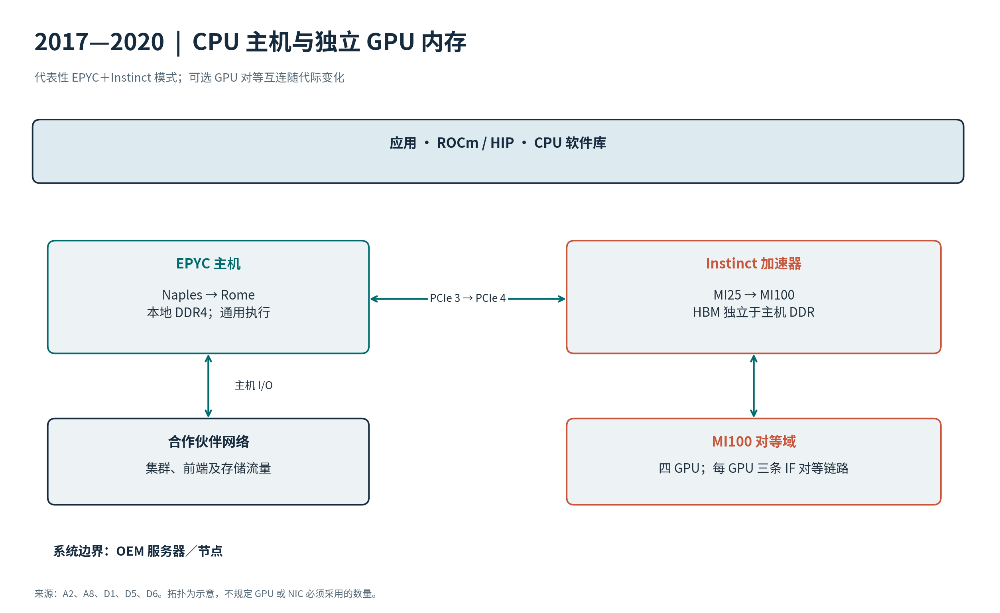
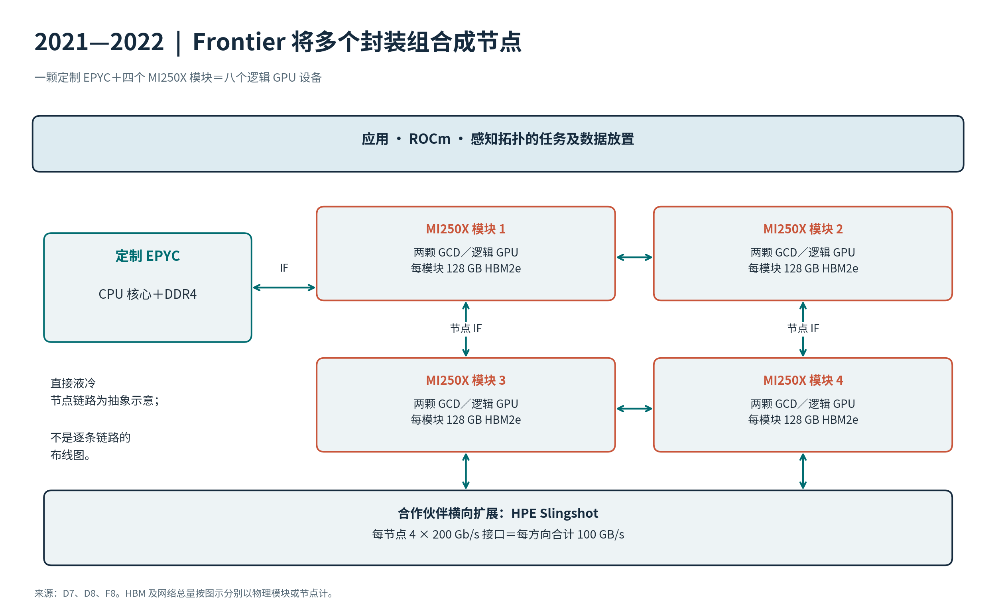
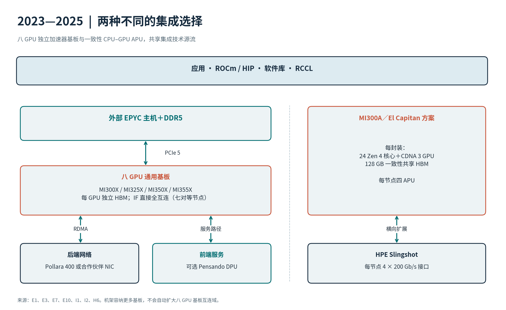
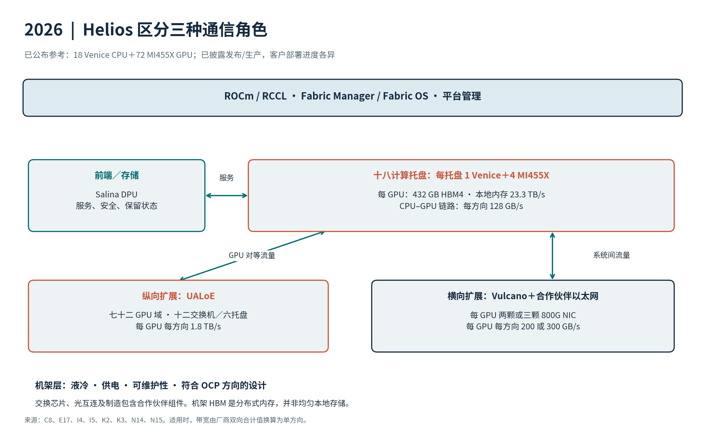

AMD AI 基础设施十年架构演进
EPYC、Instinct、互连、Pensando、自适应计算、系统与软件
研究截止日期：2026 年 9 月 27 日。会议资料覆盖至 Hot Chips 2026、ISSCC 2026 和 Advancing AI 2026；ROCm 发布信息覆盖至 2026 年 8 月。ISSCC 2027 尚未举行。
产品范围与篇幅分配：深入分析 EPYC 和 Instinct；完整梳理纵向扩展互连、Pensando DPU 和 AI NIC 的代际演进；按相关程度覆盖自适应产品、系统、软件及客户端衍生产品。 起始年份：2015 年；仅在有助于解释所覆盖的第一代产品时追溯更早的芯片。 截止日期：2026 年 9 月 27 日；产品状态及路线图时间均以该日期为准。 读者与重点：面向资深 CPU 和数据中心架构师，重点讨论架构变化、物理实现及其系统影响。 范围边界：涵盖被收购产品的技术源流。在本次审阅的产品组合中，AMD 尚无独立确立的商用数据中心交换 ASIC 或光收发器产品线，因此合作伙伴的交换芯片和光互连归入系统层讨论。本报告围绕产品披露展开，并非对所有 AMD 相关论文或 SKU 的穷尽统计。
综合概述
AMD 的服务器发展史，也是一部处理器边界不断重划的历史。Naples 将四颗完整的 CPU SoC 集成到一个封装中。Rome 将内存控制和 I/O 集中到中央裸片，并复制较小的计算芯粒。Milan 扩大缓存共享域，V-Cache 则通过垂直堆叠增加容量。随后，Genoa 和 Turin 在相关平台上提供核心密度、缓存和内存带宽的不同组合。Venice 将平台进一步扩展到十六个内存通道，并承担规模更大的加速器主机角色。
Instinct 走过一条平行但不同的路径：从源自图形架构的计算，转向专用 CDNA 矩阵架构、双 GPU 裸片、堆叠计算芯粒，最终进入交换式机架级加速器域。在这个过程中，比较的基本单位也发生了变化。MI250X 的一个封装包含两个逻辑 GPU 设备；MI300X 可以将八颗 XCD 呈现为一个 GPU。Helios 连接七十二个 GPU，但其公布的机架 HBM 总量仍是分布式内存，而不是对所有 GPU 都具有相同本地访问属性的统一存储。
Pensando 满足两类不同需求。DPU 将网络、安全和存储服务从租户 CPU 的执行路径中卸载出来；AI NIC 则通过横向扩展网络传输加速器流量。Pollara 和 Vulcano 与 GPU 纵向扩展互连相配合；Salina 面向基础设施服务，包括访问保留的推理状态。Xilinx 补充了可编程空间计算与网络能力，系统设计和 ROCm 则将器件能力转化为可部署的平台。
主要规格表明，算力增加并不会自动造就资源均衡的机器：
| 时期／旗舰组合 | CPU 最高核心数；每插槽 DRAM GB/s | GPU 稠密 BF16／FP8 TFLOP/s | GPU 内存容量；TB/s | 纵向扩展域 |
|---|---|---|---|---|
| 2017: Naples / MI25 | 32; 170.7 | n/a / n/a | 16 GB HBM2; 0.484 | PCIe，取决于系统 |
| 2019–2020: Rome / MI100 | 64; 204.8 | 92.3 / n/a | 32 GB HBM2; 1.229 | 四 GPU IF 域 |
| 2021–2022: Milan / MI250X | 64; 204.8 | 每封装 383／n/a | 128 GB HBM2e; 3.2 | Frontier：四封装、八 GPU 设备 |
| 2023: Genoa / MI300X | 96; 460.8 | 1307.4 / 2614.9 | 192 GB HBM3; 5.3 | 八 GPU |
| 2024: Turin / MI325X | 128 或 192；当前为 614.4 | 1307.4 / 2614.9 | 256 GB HBM3e; 6.0 | 八 GPU |
| 2025: Turin / MI355X | 128 或 192；当前为 614.4 | 2517 / 5033 | 288 GB HBM3e; 8.0 | 每基板八 GPU |
| 2026: Venice / MI455X | 256; 1024 RDIMM / 1638.4 MRDIMM | 5033 / 20133 | 432 GB HBM4; 23.3 | Helios 中七十二 GPU |
表中给出的是各时期的代表性搭配及最高规格，并非规定节点必须采用的物料清单。MI455X 和 Venice 已有发布及生产信息，但仅凭这些披露不能认定它们已全面商用。2026 年各行描述的是已公布的平台，客户部署仍在推进；较早各行描述历史上已上市的产品，并不表示所有旧款加速卡目前仍可订购。
三组资源比例尤其值得关注。按当前 DDR5-6400 规格，128 核 Turin 的每核带宽为 4.8 GB/s，192 核版本为 3.2 GB/s。MI355X 的 HBM 带宽与稠密 BF16 算力之比约为 0.00318 字节/FLOP，低于 MI300X 的 0.00405。MI455X 在 BF16 下将该比例提升至约 0.00463，但由于 FP8 算力增幅更大，FP8 下的比例仅约 0.00116 字节/FLOP。因此，即使 HBM 大幅升级，数据复用、布局和精度选择依然至关重要。
另一个关键变化是专用化。MI455X 公布的 FP64 峰值为 5 TFLOP/s，而 MI355X 为 78.6 TFLOP/s；面向 HPC 的独立 MI430X 分支已宣布计划于 2027 年推出。与此同时，MI350P 将 CDNA 4 带入常规 PCIe 插卡形态，高密度 EPYC 分支也采用不同的每核缓存和内存资源配置。有价值的比较必须沿着工作负载及部署分支展开，不能只看代际编号。
工程方向十分清晰：计算裸片可复用，基础设施裸片日益专用化，内存附近的集成程度不断提高，系统边界持续扩大。代价也同样具体：更多的局部性边界、更复杂的分区、更高的封装和散热要求，以及对通信软件更强的依赖。2027—2030 年路线图延续了这一方向，但产品名称和计划时间并不等同于已完成的实现。
比较口径说明
除非另有标注，算力均为厂商公布的稠密峰值。乘加按厂商惯例计为两次运算，并明确区分每封装、每卡和每机架的数值。FP8 及微缩放格式均注明名称，不以稀疏算力替代稠密算力。这些数值并非应用实测性能。
链路带宽采用十进制 GB/s，并标明方向。Gb/s 除以八换算为 GB/s；双向合计值先除以二，再与单方向数值比较。HBM 带宽与链路的单方向带宽对照。PCIe 编码后的带宽上限未扣除事务开销，以太网线速未扣除协议开销。TDP、cTDP、TBP 及较新的 CPU 默认功耗术语均保留厂商原有定义。
“n/d”表示在本次审阅的一手披露中未能确认，并不证明不存在相关文档；“n/a”表示不适用。宽幅比较表及配套 CSV 保留统一字段结构，并区分已出货、有限供货、已宣布、路线图和重新定位等产品状态。另设时间表记录首次实质性披露与商业供货时间。对结论有影响的文档冲突，在相应产品旁集中说明一次。
1. EPYC 产品与技术演进
1.1 产品序列
| 产品家族 | 推出时间 | 核心架构及最高核心数 | 主要变化 |
|---|---|---|---|
| EPYC 7001, Naples | 2017 | Zen; 32 | 一个服务器封装中集成四颗可复用 Zeppelin SoC |
| EPYC 7002, Rome | 2019 | Zen 2; 64 | 中央 I/O 裸片周围最多八颗计算芯粒 |
| EPYC 7003, Milan | 2021 | Zen 3; 64 | 每颗计算芯粒内八核共享 32 MB L3 |
| EPYC 7003X, Milan-X | 2022 | Zen 3; 64 | 3D V-Cache 将封装最大 L3 提升至 768 MB |
| EPYC 9004, Genoa | 2022 | Zen 4; 96 | SP5、DDR5、PCIe 5.0、CXL 与 AVX-512 |
| EPYC 9004X, Genoa-X | 2023 | Zen 4; 96 | 面向技术计算，最高 1,152 MB L3 |
| EPYC 97x4, Bergamo | 2023 | Zen 4c; 128 | 针对云吞吐率采用更高密度核心及缓存组织 |
| EPYC 8004, Siena | 2023 | Zen 4c; 64 | 面向边缘、电信和受限服务器的较小 SP6 平台 |
| EPYC 9005, Turin | 2024 | Zen 5：128；或 Zen 5c：192 | 更宽执行、更高密度计算选项和更快 DDR5 |
| EPYC 4004 / 4005 | 2024 / 2025 | Zen 4／Zen 5；最高 16 | 与桌面平台紧密相关的 AM5 入门服务器分支 |
| EPYC 8005, Sorano | 2026 | Zen 5; 84 | SP6 边缘及电信分支，六通道 DDR5-6400 |
| EPYC 9006, Venice | 2026 | Zen 6／Zen 6c；最高 256 | 新 SP7/SP8 组合；旗舰 SP7 增加十六内存通道及 PCIe 6.0 |
服务器主线依次为 Naples → Rome → Milan → Genoa → Turin → Venice。X 系列、高密度核心系列和较小平台系列都是这一主线的分支。产品编号并不意味着每款发布时间更晚的产品都会引入新的 CPU 核心。
1.2 Naples：EPYC 7001，2017 年
Naples 以最高 32 核、八通道 DDR4 和 128 条 PCIe 3.0 通道，使 AMD 重返主流高性能 x86 服务器市场。封装内包含四颗 14 nm Zeppelin 裸片。每颗都是完整 SoC，集成八个 Zen 核心、内存控制器、I/O 和 Infinity Fabric 接口。
这从一开始就是面向整个产品家族的策略。通过改变封装中的裸片数量及接口配置，Zeppelin 可以用于桌面 Ryzen、高端桌面 Threadripper 和 EPYC。共享这一重要硅构件，可以跨市场分摊开发成本，也避免了制造一颗仅供服务器使用的超大裸片。
这种复用的代价体现在内存拓扑上。每颗裸片拥有两个内存通道，核心访问其他裸片的内存时需要跨越封装内互连，因此单个插槽内部已经存在显著的局部性边界。即使工作负载尚未跨到第二个插槽，操作系统的任务放置、内存分配及线程亲和性也已十分重要。因此，Naples 应被理解为具有一致性的多裸片服务器处理器，而不是八个内存通道都同样本地化的单片 32 核处理器。
Zeppelin 的 ISSCC 报告给出了具体差异：在展示的配置中，本地内存访问约为 90 ns，同插槽另一颗裸片的内存约为 145 ns，单跳访问另一插槽约为 200 ns。这些测量仅对应当时的配置，但清楚揭示了跨越各层边界的架构成本。
一颗 Zeppelin 内部有两个四核复合体，各自共享 8 MB L3。因此，本地缓存共享单元小于整颗八核裸片。区分核心复合体、裸片和插槽，是理解后续变化的基础。
会议资料的补充价值。Michael Clark 在 Hot Chips 2016 的 Zen 报告中介绍了核心架构；Kevin Lepak 在 Hot Chips 2017 的 EPYC 报告中解释了企业级封装与系统组织。ISSCC 2017 介绍 Zen 的实现，ISSCC 2018 的 Zeppelin 论文解释一颗 SoC 如何服务多个市场。这些资料共同表明，可扩展性已经体现在裸片接口和物理实现中，并非仅在封装阶段才加入。
最重要的技术传承，是可复用核心复合体、具有一致性的裸片间链路，以及围绕多裸片构建产品的策略三者结合。Rome 延续了这种方法，同时重新划分每颗裸片承担的功能。
1.3 Rome：EPYC 7002，2019 年
Rome 将最高核心数翻倍至 64，并在架构上明确分离计算与基础设施。最多八颗 7 nm 核心复合体裸片（CCD）连接到中央 14 nm I/O 裸片，后者集成内存控制器和外部接口。平台保留八个内存通道，升级至 DDR4-3200 和 PCIe 4.0，并继续沿用 SP3 插槽家族。
每颗八核 CCD 仍包含两个四核复合体，但每个复合体的 L3 增至 16 MB，因此完整 CCD 为 32 MB，满配 64 核封装为 256 MB。封装层面的大缓存总量，并不意味着每个核心都拥有同样本地化的 256 MB 缓存。
分离 I/O 裸片同时解决了多个问题：先进工艺可以专用于重复部署的 CPU 逻辑，内存及外部 I/O 不再需要在每颗计算裸片中重复实现，AMD 也能在不改变基本内存控制器组织的情况下调整 CCD 数量。桌面 Ryzen 3000 复用了 Zen 2 计算芯粒方案，但采用不同的 I/O 裸片和更少的芯粒。
内存访问集中化使 Rome 的拓扑比 Naples 更规整，但没有消除局部性。一次加载仍需跨越 CCD 至 I/O 裸片的连接，而 I/O 裸片内部也有自身的组织结构。每插槽 NUMA 节点数（NPS）设置和工作负载放置仍会影响性能。后来 ISPASS 的独立内存表征研究测量了这一层次结构的实际影响。
会议资料的补充价值。Hot Chips 2019 的 Zen 2 披露提供了核心层面的变化，包括相比初代 Zen 更大的微操作缓存和更宽的浮点执行。ISSCC 2020 同时介绍了 Zen 2 核心和服务器/桌面芯粒架构。ISCA 2021 的工业产品论文 Pioneering Chiplet Technology and Design for the AMD EPYC and Ryzen Processor Families，则解释了 Naples 与 Rome 背后的制造及复用逻辑。
综合来看，Rome 的扩展并不只是晶体管缩小的结果，而是先重新选择计算、内存控制与 I/O 之间的边界，再通过封装和互连设计使这条边界具备经济性。
1.4 Milan 与 Milan-X：EPYC 7003，2021—2022 年
Milan 大体保留 Rome 平台：最高 64 核、八通道 DDR4、PCIe 4.0，以及分离的计算和 I/O 裸片。其标志性变化发生在 CCD 内部：Zen 3 将两个四核复合体替换为一个共享 32 MB L3 的八核复合体。
这扩大了线程通过本地 L3 共享数据的范围。相对于 Zen 2 的四核复合体，单个核心可直接访问的 L3 容量也翻倍，而封装最大 L3 总量仍为 256 MB。这个区别解释了为何核心数和总缓存容量未变，应用性能却能显著提升。
Zen 3 还增加了执行资源，改进分支预测及加载/存储吞吐率。Hot Chips 2021 解释这些架构变化；ISSCC 2022 则把它们与采用双向环形互连的八分片 L3、更高密度 SRAM、物理设计和电源管理联系起来。这体现了实现如何支撑架构：更大的共享域需要可行的互连，而不只是更多缓存位。
Milan-X 在每颗 CCD 原有的 32 MB L3 上方增加一颗 64 MB SRAM 裸片。因此，满配产品每颗 CCD 提供 96 MB L3，封装总量达到 768 MB。新增容量属于 CPU 缓存层次，软件无需将其作为独立内存设备管理。
ISSCC 2022 的 3D V-Cache 论文介绍混合键合和高带宽垂直接口。底层 CCD 在设计时已支持堆叠：缓存控制保留在底层，堆叠裸片则针对存储密度优化。Hot Chips 2021 的封装教程将该实现放入 AMD 更广泛的集成策略中。Computex 2021 已通过 Ryzen 原型展示这项技术，将服务器产品与后来的 Ryzen 7 5800X3D 联系起来。
实现论文给出的缓存裸片面积为 41 mm²，采用 7 nm 工艺，最小 TSV 间距为 9 微米，L3 带宽超过 2 TB/s，同时访问延迟增加四个周期。其工程取舍很明确：通过密集垂直接口大幅提高本地容量，但付出访问延迟代价，并非无成本地扩大原有缓存。
当新增 L3 能容纳工作负载反复使用的数据、避免代价更高的内存访问时，收益最大。这也是工程仿真及其他技术计算负载成为 Milan-X 主要定位的原因。对于数据复用很少、主要进行流式访问的负载，增加缓存不能替代 DRAM 带宽。
Milan 还在 AMD 机密计算的演进中引入 SEV-SNP。内存保护、虚拟化支持和平台兼容性也是服务器代际的重要组成部分，尽管它们在核心数比较中不那么显眼。
1.5 Genoa：EPYC 9004，2022 年
Genoa 既是新核心，也是新平台。它通过十二颗八核 CCD 将最高配置提升到 96 个 Zen 4 核心，采用 5 nm 计算裸片与 6 nm I/O 裸片，并迁移至 SP5。十二通道 DDR5 取代八通道 DDR4，PCIe 5.0 和 CXL 扩展了平台连接能力。
内存变化尤其重要。按本文采用的标称最高速率，八通道 DDR4-3200 提供 204.8 GB/s 理论数据带宽，十二通道 DDR5-4800 则提供 460.8 GB/s。带宽增幅超过核心数从 64 到 96 的增幅，从而提高了平台的标称每核带宽。
Zen 4 保留八核、32 MB L3 的复合体，将每核私有 L2 从 512 KB 翻倍至 1 MB，并使用 256 位执行资源支持 AVX-512 指令。软件获得了该指令集，但执行 AVX-512 并不意味着所有相关执行数据通路在物理上都是 512 位宽。Turin 将再次改变这一实现组合。
Hot Chips 2023 将核心与 EPYC 9004 平台联系起来，ISSCC 2023 的 Zen 4 论文则提供电路和物理设计视角。论文中的高频结果对应所展示的核心实现和客户端工作点，不应被理解为 96 核服务器的全核频率。这也是需要将会议披露与最终产品规格结合阅读的典型原因。
Genoa 的桌面亲缘产品是 Ryzen 7000。共同的 Zen 4 基础使客户端论文有助于理解核心，但服务器内存通道、I/O、封装功耗和芯粒数量必须依据 EPYC 专属资料。
1.6 Genoa-X、Bergamo 与 Siena：三种不同优化，2023 年
Genoa-X 将 V-Cache 方法扩展到 Zen 4。十二颗 CCD 各有 96 MB L3，使封装最大 L3 达到 1,152 MB。目标是在保留 SP5 平台的同时，让更多可复用工作数据留在核心附近。与 Milan-X 一样，需要结合工作负载局部性、缓存容量和内存流量来理解它的价值。
Bergamo 面向云计算吞吐率和密度优化。它采用 Zen 4c 核心，通过八颗十六核 CCD 达到 128 核。一颗 Bergamo CCD 包含两个八核复合体，每个配备 16 MB L3。因此，其 128 核封装拥有 256 MB L3，而 96 核 Genoa 为 384 MB。
Zen 4c 保留 Zen 4 的指令集和软件基础，同时在面积及不同的频率/功耗区间上优化实现。ISSCC 2024 从物理设计层面解释了这种区别。高密度核心并不是把普通核心简单挤得更紧，共享 ISA 也不意味着任何负载下都具有相同性能。缓存容量、时钟频率、内存竞争和任务放置都会影响实际表现。
以 EPYC 8004 销售的 Siena，将 Zen 4c 带入较小的单插槽 SP6 平台，最高 64 核、六通道 DDR5 和 96 条 PCIe 5.0 通道。它面向边缘、电信，以及受功耗、尺寸或平台成本约束的部署。缩减周边平台与改变核心实现同样重要。
AMD 于 2023 年 6 月的 Data Center and AI Technology Premiere 发布 Bergamo 和 Genoa-X，Siena 随后于 9 月推出。Hot Chips 2023 提供理解这一家族的架构框架，MWC 的展示进一步解释 Siena 的特性为何适合电信系统。
这些产品改变了阅读 EPYC 路线图的方式：关键问题转为哪种资源配比更适合工作负载。最高核心数、最大缓存容量和最小可行系统，是三个不同的优化目标。
1.7 Turin：EPYC 9005，2024 年
Turin 在 SP5 上提供两种主要计算选项：十六颗八核 CCD 组成最高 128 核 Zen 5，或十二颗十六核 CCD 组成最高 192 核 Zen 5c。主流 Zen 5 计算实现采用 4 nm，高密度实现采用 3 nm。两者均连接到服务器 I/O 基础设施并支持十二通道 DDR5。2025 年 4 月架构指南列为 DDR5-6000，而当前 9755 和 9965 产品页已列为 DDR5-6400。因此，本文当前比较采用每插槽 614.4 GB/s；较早的 576 GB/s 对应先前公布的配置。
两种版本的最大缓存组织不同。八核 Zen 5 CCD 配有 32 MB L3，十六颗合计 512 MB；十六核 Zen 5c CCD 同样配有 32 MB L3，十二颗合计 384 MB。与 Bergamo 每 CCD 两个复合体不同，EPYC 9005 架构概述将 Turin 两种版本均描述为每 CCD 一个复合体。这改变了本地共享域，是仅看核心数时容易遗漏的重要细节。
Hot Chips 2024 介绍 Zen 5 扩展后的前端、执行资源和内存子系统。48 KB L1 数据缓存、更多执行资源及更高数据带宽共同提高每核处理能力。服务器实现中的全宽 512 位浮点执行增强了向量能力。ISSCC 2025 的论文从 4 nm 核心复合体实现角度补充说明，也解释了为何必须区分不同产品细分市场中的配置。
EPYC 专属架构指南还补充了一个不太显眼但很有价值的细节：部分“宽带宽”产品让每颗 CCD 连接两条 GMI 链路，而不是一条，从而提高计算芯粒与 I/O 裸片之间的带宽。因此，仅看封装 DRAM 带宽，并不能完整描述特定核心配置可获得的资源。
Turin 于 2024 年 10 月 Advancing AI 发布。Google Cloud Next 2025 将这一代产品与 C4D、H4D 虚拟机联系起来。这些云端披露补充了工作负载与部署背景；核心和封装组织仍应以 Hot Chips、ISSCC 和 EPYC 技术文档为依据。
在高密度版本的最高核心数下，内存仍是关键配比：614.4 GB/s 标称 DDR5 带宽分配给 192 核，每核为 3.2 GB/s；同样的内存接口分配给 128 核，则为每核 4.8 GB/s。工作负载适合这一取舍时，高密度版本可以完成更多总工作量，但更多核心并不保证内存吞吐率同比增加。
1.8 Venice：EPYC 9006，2026 年
截至报告截止日期，Venice 已不再仅停留在路线图预告阶段。AMD 于 2026 年 7 月 23 日 Advancing AI 发布第六代 EPYC 产品组合，并公布 EPYC 9006 规格。该家族采用 Zen 6 和 Zen 6c，并扩展到 SP7、SP8 平台。已有产量爬坡和合作伙伴验证的记录，但尚未确认整个产品组合统一的全面商用日期，因此本报告将其在截止日的状态列为有限供货。
旗舰 EPYC 9996 提供了明确参考：256 核、512 线程、1,024 MB L3、十六个内存通道，以及 SP7 上的 PCIe 6.0 x96。AMD 列出的 DDR5 RDIMM 最高速率为 8,000 MT/s，MRDIMM 为 12,800 MT/s，分别对应每插槽约 1.024 TB/s 和 1.638 TB/s。其 CPU 默认功耗为 600 W，范围为 400—600 W。
平台变化比单纯增加核心数更重要。相较 SP5，旗舰平台增加了内存通道，并引入新一代 I/O。AMD 的台湾生态系统公告还明确指出 Venice 使用 2.5D Elevated Fanout Bridge 封装，将先进封装方法扩展至这一代 CPU。
AMD 将 SP8 定位于企业及通用系统，与规模更大的 SP7 并列。产品组合页面还列出 9006X 和面向 AI 主机的 9006 LP 分支。具体供货情况及规格应逐产品核对，不能假设整个家族完全相同。
Venice 还在 Helios 中承担系统角色，其公布配置为十八颗 EPYC CPU 配合七十二颗 Instinct MI455X GPU。CPU 负责这一更大加速器系统中的主机侧执行与数据搬运。
本次审阅的 2026 年公开资料，对平台层面的描述支持较充分，但不足以重建 Zen 6 的全部内部结构。Hot Chips 2026 日程包含 AMD MI400 架构和系统报告，却不能据此认定存在同等深度的 Zen 6 CPU 披露。因此，本报告不为 Venice 指派未经核实的流水线或缓存拓扑细节。
1.9 小型服务器、边缘系统与定制 HBM 分支
EPYC 4004 和 4005 将服务器品牌扩展到最高十六核的 AM5 系统，分别采用 Zen 4 和 Zen 5。与桌面平台的紧密关系有助于理解其经济性和核心技术，而服务器验证和目标部署场景构成产品差异。它们不具备 SP5 EPYC 那样的内存通道和 I/O 规模。
2026 年推出的 EPYC 8005 在 AMD 架构指南中代号为 Sorano，将 SP6 分支推进到最高 84 个 Zen 5 核心。AMD 规定六通道 DDR5-6400、96 条 PCIe 5.0 通道，以及 70—225 W 的产品功耗范围。84 核 8635P 拥有 384 MB L3，由十二颗 CCD 组成，每颗启用七个核心并配备 32 MB L3；指南给出每核 1 MB L2，以及最多 48 条 CXL 2.0 通道。其重点部署场景包括电信、边缘服务和存储。这延续了平台专用化路线，并非取代更大的 EPYC 产品线。
一个特别有启发性的分支，是微软 Azure HBv5 背后的定制 EPYC 实现。SCA/HPCAsia 2026 论文介绍针对内存带宽受限 HPC 的 CPU 与云系统协同设计，在 Genoa 基础上使用 HBM。微软当前虚拟机文档为最大 HBv5 配置列出 368 个可用 CPU 核心、432 GB 内存和 6.7 TB/s 内存带宽。这些是虚拟机级资源，不是零售单插槽 EPYC 的规格。
HBv5 表明 EPYC 和 Instinct 共享的技术不止 CPU 核心 IP：先进封装和 HBM 同样可以支持以 CPU 为中心的云系统。该架构应纳入 EPYC 技术史，但不能与 MI300A 或全面商用的插槽式 Genoa SKU 混为一谈。
1.10 每核内存带宽如何变化
下面的计算单独考察一种资源比例，采用标称最高内存速率、全部通道配齐，以及所列代表性最高核心数。带宽是未计协议、访问模式和软件影响的理论数据带宽，并非基准测试结果。
| 配置 | 通道数与数据速率 | 计算所得每插槽 GB/s | 核心数 | 计算所得每核 GB/s |
|---|---|---|---|---|
| Naples | 8 × DDR4-2667 | 170.7 | 32 | 5.33 |
| Rome / Milan | 8 × DDR4-3200 | 204.8 | 64 | 3.20 |
| Genoa | 12 × DDR5-4800 | 460.8 | 96 | 4.80 |
| Bergamo | 12 × DDR5-4800 | 460.8 | 128 | 3.60 |
| Siena | 6 × DDR5-4800 | 230.4 | 64 | 3.60 |
| Turin, Zen 5 | 12 × DDR5-6400，当前规格 | 614.4 | 128 | 4.80 |
| Turin, Zen 5c | 12 × DDR5-6400，当前规格 | 614.4 | 192 | 3.20 |
| Sorano | 6 × DDR5-6400 | 307.2 | 84 | 3.66 |
| Venice 9996, RDIMM | 16 × DDR5-8000 | 1,024.0 | 256 | 4.00 |
| Venice 9996, MRDIMM | 16 × DDR5-12800 | 1,638.4 | 256 | 6.40 |
计算公式：通道数 × 每秒传输次数 × 每通道 8 字节有效数据。该表解释了为何随着最高核心数上升，大缓存产品、高带宽内存及较少核心的高频产品仍有价值，也说明仅按核心数排序会遗漏大量工程因素。
1.11 EPYC 各代缓存共享域
| 产品 | 完整计算裸片组织 | 单个共享域内 L3 | 封装最大 L3 |
|---|---|---|---|
| Naples | 每 Zeppelin SoC 两个复合体，每复合体四核 | 8 MB／四核 | 64 MB |
| Rome | 每 CCD 两个复合体，每复合体四核 | 16 MB／四核 | 256 MB |
| Milan | 每 CCD 一个八核复合体 | 32 MB／八核 | 256 MB |
| Milan-X | 一个八核复合体，带堆叠缓存 | 96 MB／八核 | 768 MB |
| Genoa | 每 CCD 一个八核复合体 | 32 MB／八核 | 384 MB |
| Genoa-X | 一个八核复合体，带堆叠缓存 | 96 MB／八核 | 1,152 MB |
| Bergamo | 每 CCD 两个复合体，每复合体八核 | 16 MB／八核 | 256 MB |
| Turin, Zen 5 | 每 CCD 一个八核复合体 | 32 MB／八核 | 512 MB |
| Turin, Zen 5c | 每 CCD 一个十六核复合体 | 32 MB／十六核 | 384 MB |
表中描述完整的架构复合体；具体 SKU 可能关闭部分核心，或配置更少芯粒。封装缓存总量是分布式 L3 资源之和。每核缓存并未随代际单调增加，面向云密度的分支有意采用不同取舍。Milan 和 Turin Zen 5c 还说明，共享同一个 L3 的核心数必须与一颗裸片上的总核心数分别记录。
1.12 核心实现：为更宽的执行提供数据
从 Zen 到 Zen 5 的变化，不只是 ISA 演进。Zen 确立了 SMT、操作缓存、乱序执行以及可在 CCX 内复制的私有缓存层次。Zen 2 将浮点执行扩展到 256 位。Zen 3 扩大执行窗口及加载/存储能力，并让八个核心共享一个 L3。Zen 4 增加私有 L2 并支持 AVX-512 指令，但没有将整个浮点路径扩展到 512 位。
Zen 5 明确扩展前端与数据通路。两条取指/译码路径向八宽分派供给指令，更大的重排序窗口让核心发现更多独立工作。Hot Chips 幻灯片披露，单线程模式下退休/ROB 容量为 448 项，双线程模式下每线程为 224 项。六个 ALU 和四个 AGU 提供更多执行机会，但持续利用这些资源仍依赖准确的分支预测、独立操作和及时的数据供给。
服务器实现的 48 KB L1 数据缓存保持四周期加载到使用延迟目标。核心每周期可处理四个内存地址，通过向量宽度通路最多执行两次 512 位加载或一次 512 位存储。公开的两次加载/一次存储能力，不应被理解为各项独立峰值都能在无资源约束下同时实现。更宽的 L2 至核心通路和新的二维步长预取器用于缓解供给问题。L3 继续与 L2 保持牺牲缓存关系，并用复制的 L2 标签进行探测过滤。
| 核心 | 前端与分派 | 执行窗口 | 加载/存储与向量 | 本地缓存 | 来源 |
|---|---|---|---|---|---|
| Zen | 32 B 取指；4 路 x86 译码；6 路微操作分派 | 192 项退休队列；SMT2；72 项加载／44 项存储队列 | 两次加载＋一次存储资源；128 位浮点 | 64 KB 指令；32 KB 数据；512 KB L2；每四核 8 MB L3 | A1 A3 |
| Zen 2 | 更大操作缓存及改进预测；六宽分派 | Zen 3 对比披露中列为 224 项 ROB | 256 位浮点；基线每周期两次加载／一次存储 | 32 KB 指令；32 KB 数据；512 KB L2；每四核 16 MB L3 | A5 A6 B2 |
| Zen 3 | 4 路译码／操作缓存最多输出 8 操作；6 路宏操作分派 | 256 项 ROB；更大整数/浮点发射容量 | 三次加载／两次存储；256 位浮点；FMA 延迟四周期 | 32 KB 指令；32 KB 数据；512 KB L2；每八核 32 MB L3 | B1 B2 B3 |
| Zen 4 / 4c | 更大操作缓存；改进分支预测及分派 | 退休及加载/存储队列扩大；所审幻灯片未确认具体容量 | 256 位资源执行 AVX-512；BF16/VNNI | 32 KB 指令；32 KB 数据；1 MB L2；每八核 CCX 的 L3 为 32/16 MB | B8 B9 B10 |
| Zen 5 服务器 | 2 × 32 B 取指；2 × 4 路译码；6K 操作缓存；八宽分派 | ROB：单线程 448 项／双线程每线程 224 项；240 个整数物理寄存器 | 6 ALU、4 AGU；每周期四个内存地址；两次 512 位加载或一次 512 位存储能力 | 32 KB 指令；48 KB、12 路数据缓存，加载到使用四周期；1 MB、16 路 L2 | C1 C2 C3 |
| Zen 6 / 6c | 所审公开技术资料未确认 | n/d | n/d；不能据品牌推导 ISA | 9996 封装 L3 为 1024 MB；私有缓存及共享拓扑 n/d | C8 N30 N31 |
Zen 4c 和 Zen 5c 与对应标准核心共享 ISA 基础，但物理设计和缓存共享方式改变了系统配比。Hot Chips 报告 Zen 4c 的核心加 L2 面积比 Zen 4 小约 35%。这是针对特定实现的披露，并非通用的面积或性能换算系数。当目标工作点上的总吞吐率和能效收益足以抵消每核缓存或频率下降时，高密度产品才体现价值。
1.13 互连、内存配置与加速器主机角色
I/O 裸片让插槽更容易扩展，但也成为共享流量汇聚点。核心缓存未命中后，需先跨过 CCD 链路才能到达内存控制器；访问远端插槽还需增加 xGMI 路径。NPS 设置决定如何暴露内存控制器局部性，CCX 则描述缓存共享域，二者是不同的划分。增加 NUMA 节点数可能有利于局部性敏感的软件，同时也会使任务放置更复杂。
SP5 系统可以在 PCIe 与插槽互连之间分配高速链路。常见单插槽最高配置为 128 条 PCIe 通道；双插槽并非简单翻倍，因为插槽间链路会消耗资源。Turin 指南给出了使用三条 xGMI 链路、提供 160 条 PCIe 通道的系统配置。支持 CXL 的通道属于既有 I/O 预算的子集，不是在总通道数之外额外增加。CXL 内存设备的访问延迟和带宽路径也不同于本地 DDR。
因此，选择 AI 主机必须结合实际板级拓扑：各 GPU 或 NIC 归属哪个 CPU，PCIe 交换机如何连接，相应路径是否支持对等 DMA，以及主机内存如何配置。如果更多 CPU 核心挤占了所需流量对应的 I/O 或内存带宽，这种处理器可能反而不适合做 GPU 主机。另一方面，即使没有独立 GPU，CPU 推理和预处理也可能受益于 AVX-512、BF16/VNNI、缓存容量及频率。
安全性和 RAS 与性能同步演进。Naples 开启了 EPYC SEV 路线，后续实现增加对客户机执行状态的保护，Milan 则通过 SEV-SNP 引入更强的完整性模型。阅读当前 Infinity Guard 和 SEV 文档时，必须结合平台固件及虚拟机监控器要求。内存 ECC、错误隔离和服务器验证决定的是可用系统，而不仅是核心微架构。
CPU 功耗额定值并不对应所有工作负载下的同一个持续频率。核心配置、指令组合、内存流量、散热条件和功耗上限共同决定工作点。高频、大缓存、高密度核心及低功耗 SKU 有意落在这条曲线的不同位置。家族表格列出最高规格；选择具体系统时，必须核对准确的 OPN 和内存配置。
1.14 公开资料中的实现边界
Sorano 架构指南对工艺存在 4 nm 与 5 nm 的冲突表述，内存容量措辞也与数据表不一致。其拓扑和缓存容量获得产品规格的独立印证，但本文不对工艺节点作出定论。该指南的单插槽产品背景，也应优先于文档中沿用的通用插槽互连措辞。
对于 Venice，本次资料确立了 N2 计算工艺方向、EFB 封装以及已公布的插槽资源，但尚不足以完整重建 Zen 6 流水线、私有缓存、一致性目录或裸片间传输能耗。这是具体的披露缺口，不能据 Zen 5 或 1,024 MB 封装缓存总量推断这些内部结构。
来源索引：A1—A10；B1—B15；C1—C12；G1、G4、G13、G18；N1—N4、N20、N22、N23、N30—N33、N39、N45—N48、N50。完整条目见参考文献，数值单元格在配套来源台账中建立索引。
2. Instinct 产品与技术演进
2.1 产品序列
| 产品 | 推出时间 | 架构 | 代表性内存配置 | 主要变化 |
|---|---|---|---|---|
| Radeon Instinct MI6 / MI8 / MI25 | 2016 年宣布；2017 年代际 | Polaris / Fiji / Vega | 16 GB GDDR5 / 4 GB HBM / 16 GB HBM2 | 由图形衍生架构组成的计算产品组合 |
| Radeon Instinct MI50 / MI60 | 2018 | Vega 20 | MI60：32 GB HBM2，约 1 TB/s | 7 nm，更强 FP64 和 GPU 间互连 |
| Instinct MI100 | 2020 | CDNA | 32 GB HBM2, 1.23 TB/s | 专用计算架构及矩阵执行 |
| Instinct MI250 / MI250X | 2021 | CDNA 2 | 每封装 128 GB HBM2e、3.2 TB/s | 双 GPU 计算裸片及百亿亿次节点集成 |
| Instinct MI210 | 2022 | CDNA 2 | 64 GB HBM2e, 1.6 TB/s | 单裸片 PCIe 分支 |
| Instinct MI300A | 2023 | Zen 4 + CDNA 3 | 128 GB 共享 HBM3，5.3 TB/s | CPU 与 GPU 芯粒共享具有一致性的物理内存 |
| Instinct MI300X | 2023 | CDNA 3 | 192 GB HBM3, 5.3 TB/s | 八颗堆叠 GPU 计算芯粒，面向加速器系统优化 |
| Instinct MI325X | 2024 | CDNA 3 | 256 GB HBM3e, 6.0 TB/s | 内存容量与带宽更新 |
| Instinct MI350X / MI355X | 2025 | CDNA 4 | 288 GB HBM3e, 8.0 TB/s | 更强矩阵引擎、低精度格式及新的 I/O 划分 |
| Instinct MI350P | 2026 | CDNA 4 | 144 GB HBM3e, 4.0 TB/s | 面向常规服务器基础设施的 PCIe 卡 |
| Instinct MI455X，MI400 家族 | 2026 | CDNA 5 | 432 GB HBM4, 23.3 TB/s | 新执行组织与机架级 Helios 集成 |
内存带宽按每个加速器封装或每张卡计。MI250X 包含两个软件可见 GPU 设备，因此不能将封装总资源与单设备可见资源混淆。公布的内存容量沿用 AMD 产品命名口径。
2.2 技术前史与首代 Radeon Instinct，2015—2017 年
第一批 Radeon Instinct 产品于 2016 年 12 月宣布。MI6、MI8 和 MI25 分别源自 Polaris、Fiji 和 Vega。统一的产品名称涵盖了内存系统明显不同的设备：MI6 使用 GDDR5，MI8 使用第一代 HBM，MI25 使用 HBM2。
Fiji 更早采用 HBM 是重要背景。在先进封装中把宽内存接口放置于 GPU 旁边，为实现高带宽提供了一条可行路径，无需仅依赖不断提速的外部 DRAM 接口。即使计算架构发生变化，这条封装与内存技术路线仍在 Instinct 中延续。
MI25 的 Vega 架构仍与 Radeon Vega 图形产品紧密相关。Hot Chips 2017 的 Vega 报告解释了这一代的可编程计算组织、打包算术和内存系统设计思想。服务器产品还依赖加速器封装、散热、可靠性及软件。
这一阶段的主线，是将通用 GPU 架构适配到计算市场，不应追溯性地称之为 CDNA。AMD 的 ROCm 软件也逐渐成为平台不可缺少的部分：加速器是否有用，不仅取决于峰值算力，也取决于编译器、运行时和软件库支持。
2.3 MI50 与 MI60：Vega 20，2018 年
MI50 和 MI60 于 2018 年 11 月 AMD Next Horizon 活动推出。Vega 20 将计算产品推进到 7 nm，并通过高吞吐 FP64、约 1 TB/s 的 HBM2 带宽、PCIe 4.0 及 GPU 间直连 Infinity Fabric 增强 HPC 能力。MI60 配备 32 GB HBM2；MI50 则存在多种内存容量配置。
这一变化并不止于工艺缩小。科学计算需要双精度运算及大数据集的可靠搬运，多加速器应用则需要避免不必要的主机中转。MI50/MI60 在保留 Vega 技术源流的同时，针对这些需求进行了改进。
Radeon VII 在桌面产品中使用相关 Vega 20 技术。这有助于追溯硅片复用，但计算产品经过验证的能力与服务器配置，仍应以 Instinct 文档为准。
Next Horizon 是这段历史中信息量很高的一次行业活动：它同时展示了 7 nm GPU 和 Rome 服务器方向。两条产品线都开始将先进工艺及互连能力转化为数据中心平台。
2.4 MI100：第一代 CDNA，2020 年
MI100 确立了 CDNA 作为 AMD 专用数据中心计算架构的地位。它结合 120 个计算单元、32 GB HBM2 和约 1.23 TB/s 内存带宽。矩阵指令及执行资源使矩阵乘法成为架构中的核心功能，而不再仅依靠传统向量指令。
与 RDNA 的分离至关重要。RDNA 围绕图形与游戏需求发展，CDNA 则围绕计算、矩阵运算、科学计算精度及规模扩展发展。两者都是 GPU 架构，但不能仅因同属 AMD，就将执行宽度、缓存或指令行为的结论直接从一者套到另一者。
CDNA 白皮书解释了计算单元与矩阵组织。AMD 在 2020 年 11 月、HPC 社区 SC 大会期间的公告，将 MI100 放入基于 EPYC 的系统与软件背景中。这一代仍采用单颗大型 GPU 计算裸片，因此是 Instinct 将计算本身拆分到多个裸片之前的最后一个主要阶段。
进行历史比较时，MI100 是专用计算路线的合适起点。但将其 FP64 峰值直接与后续产品的 FP8 或 FP4 宣传数值比较，意义有限，因为这些指标衡量的是不同算术，往往也对应不同执行路径。
2.5 MI200：CDNA 2、MI250/MI250X 与 MI210，2021—2022 年
MI250 和 MI250X 将 Instinct 推进到双裸片 GPU 封装。MI250X 将两颗 6 nm 图形计算裸片（GCD）与八堆 HBM2e 集成，合计 128 GB 内存和 3.2 TB/s 带宽，封装启用 220 个计算单元。MI210 则通过单裸片 PCIe 卡提供 CDNA 2，配备 64 GB 内存和 1.6 TB/s 带宽。
一个关键的软件细节是：MI250X 的两颗 GCD 被呈现为两个 GPU 设备。因此，一个物理加速器模块并不自动等同于一个扁平 GPU 编程域。两个设备之间的任务分配和通信，仍是应用设计的一部分。
CDNA 2 增强了矩阵计算，包括与 HPC 有关的高精度计算，并发展具有一致性的 CPU/GPU 连接。然而，一致性和统一寻址并不会将主机 DDR 与 GPU HBM 变成一个物理内存池；其位置、带宽和容量仍各不相同。
Hot Chips 2022 是关键架构披露，因为它同时讨论 MI200 加速器和节点组织。Frontier 每节点配置一颗定制 EPYC 与四个 MI250X 模块，共八个 GPU 设备。加速器和网络连接等拓扑细节，决定系统如何维持有效扩展。
VLSI 2023 关于 MI250X Elevated Fanout Bridge 封装的论文提供了实现层面的补充，解释如何将两颗大型计算裸片及其 HBM 资源组成可行的加速器。ISCA 2023 的百亿亿次计算回顾进一步说明，从研究备选方案到最终 Frontier 架构的演变路径。
综合阅读这些资料，可以避免把 Frontier 简化为一组高速 GPU。CPU/GPU 交互、内存访问、节点网络、功耗及应用协同设计共同塑造了最终系统。在集成程度更高的 MI300A 出现之前，Frontier 也为软件和运维提供了重要验证平台。
2.6 MI300A：共享 HBM 的 CPU–GPU 处理器，2023 年
MI300A 在一个封装中结合二十四个 Zen 4 CPU 核心、CDNA 3 GPU 计算资源和 128 GB HBM3。其计算层由三颗 CPU CCD 和六颗加速器复合体裸片（XCD）组成，堆叠在四颗 I/O 裸片上。CPU 与 GPU 共享具有一致性的物理 HBM 内存系统，总带宽约 5.3 TB/s。
这种物理集成改变了编程问题。CPU 阶段和 GPU 阶段可以处理共享数据，无需沿用传统独立加速器中显式地从主机 DRAM 复制到设备 HBM 的相同模式。同步和高效数据访问仍然重要；共享内存是一种能力，不是自动获得性能的保证。
该设计直接吸收 EPYC 与 Instinct 的技术。Zen 4 CCD 将 CPU 芯粒适配到堆叠集成，GPU XCD 则针对垂直接口设计。ISCA 2024 解释了 AMD 如何在可复用 I/O 裸片设计上容纳不同芯粒尺寸与接口，也介绍了工程背景：早期百亿亿次 APU 概念受封装、制造和散热可行性限制，而 MI300A 得以使用更成熟的集成技术。
ISSCC 2024 的 MI300 封装论文提供实现视角。封装将先进工艺计算裸片、基础设施裸片与 HBM 组合起来，而非把所有功能做进一颗巨大的逻辑裸片。同一种总体装配策略能够支持不同的 CPU/GPU 计算组合。
El Capitan 将这一架构构想变成实际系统。LLNL 文档说明，每个计算节点包含四颗 MI300A APU，共九十六个 CPU 核心，以及合计 512 GB 的封装共享内存。SC24 标志着该系统重要的公开性能里程碑。这一部署解释了为何 MI300A 被设计为异构 HPC 处理器，同时整个 MI300 家族也面向 AI 市场。
深入理解该产品的学术阅读顺序是：HPCA 2017 的百亿亿次 APU 提案、ISCA 2023 的 Frontier 回顾，以及 ISCA 2024 对异构处理器实现过程的论述。这条线索同时解释了构想的连续性，以及为实现商业产品而必须作出的改变。
2.7 MI300X：面向大型加速器系统的 CDNA 3，2023 年
MI300X 使用 MI300 集成平台实现不同资源配比：八颗 GPU XCD、四颗 I/O 裸片及八堆 HBM3，提供 304 个启用计算单元、192 GB 内存和约 5.3 TB/s 带宽。CPU 仍位于加速器之外。
这正是它与 MI300A 的关键区别。两款产品使用密切相关的封装和计算技术，但只有 MI300A 将 Zen CPU 核心集成到共享 HBM 处理器中。MI300X 的大容量 HBM 本身，并不会让主机 CPU 内存与加速器内存变成一个物理池。
Hot Chips 2024 从封装和平台层面解释 MI300X。在八加速器基板上，每个 GPU 都直接连接其他七个 GPU。报告给出的每 GPU 合计 896 GB/s 互连带宽为双向总量，不能未经换算就与其他系统的单方向带宽比较。
MI300 还改变了物理芯粒与逻辑设备的关系。多个 XCD 可以呈现为一个大型 GPU，也可以通过支持的分区模式划分资源，以满足其他部署需求。计算分区和内存分区相互关联，但属于不同配置选择。
结合 ISSCC 2024、ISCA 2024 和 Hot Chips 2024，可以得到少见的完整图景：物理构造、异构平台的设计依据，以及面向 AI 的加速器和基板组织。后来的 IEEE Micro 文章进一步补充 MI300X 互连设计细节；它是期刊文章，不是 MICRO 会议论文。
MI300X 于 2023 年 12 月 Advancing AI 发布。Microsoft Ignite 2023 已宣布 Azure 的预览方向，随后 Microsoft Build 2024 提供了 Azure MI300X 虚拟机和服务的部署与供货里程碑。
2.8 MI325X：CDNA 3 内的内存升级，2024 年
MI325X 保留 CDNA 3，同时升级至 256 GB HBM3e 和 6 TB/s 内存带宽。它是内存及平台更新，并非新一代 CDNA。
容量增加对 AI 服务和训练很重要，因为模型权重、运行时状态、激活值及注意力缓存都在竞争 HBM。更大的每 GPU 内存预算，可以改变模型分区方式或设备可承载的并发量。实际效果取决于模型与执行软件，不能仅由容量直接推定。
AMD 在 Computex 2024 预告 MI325X，并于 10 月 Advancing AI 正式发布。比较时应采用最终产品规格：早期路线图中的 288 GB 已被最终发布的 256 GB 配置取代。
2.9 MI350X 与 MI355X：CDNA 4，2025 年
CDNA 4 对计算与基础设施的配比作了较大调整。MI350 系列将八颗 3 nm XCD 堆叠在两颗 6 nm I/O 裸片上，而 MI300 使用四颗 I/O 裸片。基础设施继续采用不同工艺，但基础设施本身的划分已经变化。
计算单元能力增强，而封装启用数量降至 256。这提醒我们，不能把 CU 数量当作跨架构稳定的计算能力指标。矩阵资源、指令支持、时钟及执行资源的数据供给，都比单纯数量更重要。
CDNA 4 在既有 AI 与科学计算格式之外，增加 MXFP4、MXFP6 等低精度微缩放格式。这些格式在数值表示、吞吐率和数据搬运之间作出取舍，可使适合的 AI 负载受益，但 FP4 算力不能替代 FP64 科学计算指标。
MI350X 和 MI355X 均提供 288 GB HBM3e 和 8 TB/s 带宽。AMD 将 MI350X 定位为八 GPU 基板生态中的 1,000 W 风冷选项，MI355X 则采用直接液冷，额定功耗为 1,400 W。因此，供电与散热成为明确的产品选择。
Advancing AI 2025 发布产品及软件方向，Hot Chips 2025 的 CDNA 4 报告解释架构与平台，ISSCC 2026 随后以论文介绍堆叠的 3 nm XCD 和 6 nm I/O 裸片实现。跨年度并不异常：产品发布、架构报告和电路论文无需发生在同一日历年。
2026 年，MI350P 将 CDNA 4 扩展到 PCIe 卡，配备 144 GB HBM3e 和 4 TB/s 带宽。它使用四颗 XCD、一颗 I/O 裸片和四堆 HBM，启用 128 个 CU，面向常规 PCIe 服务器，整卡功耗最高 600 W，并可配置到 450 W 工作点。AMD 在 2026 年 5 月 7 日已发布详细部署说明，早于 7 月 Advancing AI 再次展示该产品。本次审阅的简介未规定专用对等互连配置，因此不能假设八卡 PCIe 服务器具备 UBB 的全互连 Infinity Fabric。
2.10 MI400 与 MI455X：CDNA 5 和 Helios，2026 年
AMD 于 2026 年 7 月 Advancing AI 发布 MI400 和 Helios，并介绍生产进展。合作伙伴验证及已排期的客户部署表明，发布、生产和全面供货是不同里程碑，因此本文将新平台归为有限供货。公开规格将 MI455X 列为首款 CDNA 5 产品，配备十二堆 HBM4、合计 432 GB，内存带宽最高 23.3 TB/s。
架构变化不止是把 HBM3e 换成 HBM4。AMD 描述了八颗 XCD、256 个工作组处理器（WGP）及 Wave32 执行，还将互连/缓存裸片与 I/O 裸片分离：两颗互连/缓存裸片提供 HBM 接口和 192 MB 全局 L2，两颗 I/O 裸片负责外部连接。这与 MI300、MI350 的基础设施划分不同。
公开的 CDNA 5 说明还引入提高数据搬运和工作协作效率的机制，包括向本地数据共享存储（LDS）进行异步传输，以及跨 WGP 协作。这些变化使编程和调度组织与算术峰值同样重要。
Hot Chips 2026 分别安排 MI400 GPU 架构和系统架构报告，反映出产品范围的扩大。Helios 结合七十二颗 MI455X GPU 与十八颗 Venice CPU，纵向扩展采用 UALink over Ethernet，横向扩展使用独立网络。AMD 公布整机架 HBM 总量约为 31 TB。这一容量仍分布在各加速器上，不能理解为访问属性统一的本地内存。
机架产品还把供电、液冷、可维护性、网络和软件纳入架构讨论。OCP 2025 在 2026 年发布之前展示开放机架设计方向，将 AMD GPU 路线图与 Meta 的机架设计生态联系起来。
MI430X 是已宣布、计划于 2027 年推出的 HPC/主权 AI 分支，MI500 则属于未来路线图。它们进一步说明，产品家族品牌不代表相同的启用功能或供货状态。比较表将其分别列为已宣布或路线图，未披露字段不填入推测规格。
2.11 矩阵引擎、本地存储与数值格式
MI100 的矩阵引擎是专用计算路线的首个有效基线，但其 BF16 与 FP16 算力不同：公布的 BF16 峰值为 92.3 TFLOP/s，FP16 为 184.6 TFLOP/s。将二者混用，会扭曲对 MI250X 383 TFLOP/s BF16 演进幅度的理解。CDNA 2 还增加矩阵 FP64，因此必须区分向量双精度与矩阵双精度。
CDNA 3 增加 FP8 格式和更强矩阵吞吐率，同时保留 Wave64 执行模型。每颗 XCD 的 4 MB L2 及封装级 Infinity Cache，位于 CU 本地存储与 HBM 之间。该划分有意采用层次结构：较大的封装缓存总量，并不意味着所有操作数流量都经过相同路径或具有相同延迟。
CDNA 4 将每 CU 的 LDS 从 64 KB 扩大到 160 KB，并支持直接加载到 LDS，减少通过向量寄存器暂存数据的需要。这有助于内核保留数据分块，并让数据搬运与计算重叠。它增加 MXFP8、MXFP6、MXFP4 等 OCP 微缩放格式，其分块缩放因子和表示方式既影响数值行为，也影响存储。原生 TF32 硬件支持被基于 BF16 运算的软件路径取代，因此软件兼容并不意味着执行硬件相同。
| 架构 | 执行与矩阵变化 | 每 CU 的 LDS | 向量 L1 | L2／内存侧缓存 | 来源 |
|---|---|---|---|---|---|
| CDNA / MI100 | Wave64；MFMA 矩阵操作；BF16 峰值不同于 FP16 | 64 KB | 16 KB | 每 GPU 8 MB L2 | D5 N27 E19 |
| CDNA 2 / MI200 | Wave64；增加 FP64 矩阵执行；MI250X 为两个 GPU 设备 | 64 KB | 16 KB | 每 GCD 8 MB L2；每 MI250X 封装 16 MB | D7 D8 N26 E19 |
| CDNA 3 / MI300 | Wave64；FP8 E4M3/E5M2；单逻辑设备可跨 XCD | 64 KB | 32 KB | 每 XCD 4 MB L2；每封装 256 MB Infinity Cache | E1 E3 N25 E19 |
| CDNA 4 / MI350 | Wave64；MXFP8/6/4；全局内存直达 LDS；原生 TF32 改为基于 BF16 的软件路径 | 160 KB | 32 KB | 每 XCD 4 MB L2；X 型 256 MB Infinity Cache，P 型 128 MB | E10 N24 E19 |
| CDNA 5 / MI455X | Wave32 WGP；Tensor Data Mover、L2 多播及 WGP 协作 | 本文 n/d；WGP 范围不同 | 本文 n/d | 两颗互连/缓存裸片提供 192 MB 全局 L2 | E15 K3 N14 |
MI350X 和 MI355X 有意采用不同频率/功耗工作点。后者稠密 BF16 峰值从 2,307 提高到 2,517 TFLOP/s，额定 TBP 从 1,000 W 升至 1,400 W，但没有增加 HBM 容量或带宽。这是一种吞吐密度选择，必须结合机架限制和工作负载实测效率评估，不能仅看峰值算力。
CDNA 5 将执行单元改为 Wave32 的 WGP 组织。Tensor Data Mover 可以异步向 LDS 传输数据，L2 多播可让协作任务复用一次传输，命名屏障支持更细粒度协作。这些机制针对矩阵计算周围的数据搬运和同步问题。256 个 WGP 不能等同于 CDNA 4 的 256 个 CU。
MI455X 的精度取舍格外明确：稠密 BF16 峰值为 5,033 TFLOP/s，OCP FP8/MXFP8 为 20,133，MXFP6 为 20,133，MXFP4 为 40,265；公布的向量与矩阵 FP64 均为 5 TFLOP/s。这是面向 AI 的配比，而已宣布的 MI430X HPC 分支计划于 2027 年提供最高 288 TFLOP/s 硬件 FP64。本文不从 MI455X 推导尚未公布的 MI430X 内存或封装规格。
2.12 物理分区、逻辑设备与隔离
MI250X 的两个逻辑 GPU 分别拥有本地 HBM 和 L2。128 GB 与约 3.2 TB/s 的封装总量，需要跨两颗 GCD 考察工作及流量。桥接和内部互连提供高速连接，但不会消除局部性。在 Frontier 中，节点级 CPU 和网络连接进一步约束流量调度方式。
MI300X 和 MI350 可以把多个计算芯粒呈现为更大的逻辑 GPU，也可以通过支持的计算及内存分区模式划分资源。MI350 的两颗 I/O 裸片支持 NPS1、NPS2 内存组织。在文档所述 NPS2/DPX 配置中，一个逻辑分区组合四颗 XCD 与 144 GB HBM。SPX、DPX、QPX 和 CPX 描述计算分区选项，并不是内存分区的可互换名称。
资源分区也不自动等同于安全保障。运行时支持、虚拟化模式、地址转换、固件及具体产品共同决定隔离行为。容量规划应采用可用分区和受支持的软件配置，而不是直接使用整封装数值。配套软件时间表将硬件引入与具体软件版本的支持分开记录。
各阶段的封装演进服务于不同需求。MI250X 用 EFB 连接两颗大型计算裸片；MI300 将计算堆叠在四颗有源 I/O 裸片上，同时支持 CPU–GPU APU 和纯 GPU 产品；MI350 将基础设施减少为两颗 I/O 裸片，同时增加矩阵资源及 HBM 性能；MI455X 则分离互连/缓存与外部 I/O 功能。这些是机器功能划分的变化，而非同一张框图连续几次工艺缩小。
2.13 区域产品与未来路线图
AMD 2026 年第二季度文件将 MI308 列为受许可约束的区域产品，并披露其获许可出货于 2025 财年末恢复；文件还讨论部分客户的 MI325 许可。本次审阅的文件没有提供 MI308 技术规格表，因此本文记录这一分支及供货限制，不虚构其算力、内存或互连上限。出口管制条件解释产品分支为何存在，但在缺少一手规格时，不能据此确定特定架构限制。
2026 年 7 月路线图列出 2027 年的 MI500/Helios 500，以及 2028 年的 MI600/Helios 600。对应主机及网络代号记录在对照表中。这些条目注明披露日期，并继续按路线图项目处理。2026 年全栈图采用已公布的 MI455X 配置，不混入后续代际承诺的功能。
仍存在的主要资料缺口包括 MI455X 最终整卡功耗范围、逐裸片工艺分配、部分 HBM 堆叠高度，以及每条物理 UALoE 链路带宽。封装级速率虽已公布，但将其拆分到假定的通道拓扑，会造成缺乏依据的精确性。ISSCC 2026 提供了 MI350 实现记录；本次审阅尚未确认同等层次的 MI400 ISSCC 实现论文。
来源索引：D1—D10；E1—E20；F2、F8、F9；K3；N5—N16、N24—N29、N35—N37、N40、N41。完整条目见参考文献，数值单元格在配套来源台账中建立索引。
3. 纵向扩展互连与内存语义
3.1 一个品牌下的多种物理及逻辑接口
Infinity Fabric 是一组连接的统称，并非固定的线速或一致性约定。CPU CCD 至 IOD 链路、CPU 插槽间 xGMI、GPU 裸片间链路、GPU 对等链路，以及具有一致性的 CPU–GPU 连接，都必须按各自端点比较。跨越某一边界测得的速率，不能替代另一边界的指标。
Naples 用该互连连接插槽内的完整 SoC，并连接两个插槽。Rome 通过中央 I/O 裸片改变封装内拓扑。Genoa 与 Turin 提高外部信号速率，同时保留插槽互连与 I/O 的可配置分配。即使软件看到一个插槽，其 NUMA 行为仍取决于内存控制器和缓存域的位置。
在 Instinct 中，Vega 20 引入直接对等连接，MI100 支持四 GPU 互连域。MI200 增加两颗 GCD 的封装内部连接，以及带 CPU/GPU 链路的节点级配置。MI300X 和 MI350 使用八 GPU 直接全互连基板，每个 GPU 有七条对等连接。这提供基板内一跳对等路径，但增加相同基板并不能自动形成任意规模的互连域。
3.2 先统一链路口径，再分析系统
MI300X 的七条对等链路各提供单方向 64 GB/s，合计每 GPU 每方向 448 GB/s。常见的 896 GB/s 是发送与接收相加。MI350 将每条对等链路提高到 76.8 GB/s，合计单方向 537.6 GB/s、双向 1,075.2 GB/s。两者仍都是八 GPU 基板域。
MI250X 需要不同的核算边界。内部 GCD 连接标称双向 400 GB/s，即两颗计算裸片之间每方向 200 GB/s；外部 IF 链路是独立连接，每条每方向 50 GB/s。端口求和描述的是接口容量，而非全互连的对分带宽，也不等于一次集合通信可获得的带宽。CPU 连接及节点路由同样会消耗或限制连接资源。
对于 CPU xGMI，通道数乘以信号速率得到的是电气层上限。十六条通道、每条 32 Gb/s，对应协议影响之前每方向 64 GB/s。表中将其标注为原始计算值，而不是持续的一致性有效载荷带宽。同理，PCIe 5 x16 约 63 GB/s 的编码后上限，也不是实测 DMA 吞吐率保证。
3.3 Helios：交换式七十二 GPU 域
Helios 将纵向扩展从八 GPU 直连网扩展出去。AMD 描述的 UALink over Ethernet（UALoE）采用单跳、多平面互连，六个托盘中包含十二台交换机。七十二个 GPU 分布在十八个四 GPU 计算托盘上，共十八颗 Venice CPU。公布的每 GPU 3.6 TB/s 纵向扩展带宽为双向总量，统一换算后为每方向 1.8 TB/s。
交换结构扩大了互连域，无需为每个对等节点都配置一条专用直连线缆。代价是引入交换、缓冲、拥塞及运维层。传输距离、物理布线和故障域都成为机架设计问题。本次审阅的最终蓝图并未明确所有交换机端口规模、每通道电气速率或归约卸载功能，因此本文不会用通用 UALink 标准或其他厂商交换机来补填这些字段。
GPU 内存语义不意味着整机架内存都具有本地 HBM 延迟，或拥有完整 CPU 缓存一致性。远程访问仍需经过端点及网络资源。RCCL 和应用分区必须围绕这些约束组织集合通信及点对点流量。Fabric Manager、Fabric OS 和 vPods 在物理互连之上增加资源配置及运维边界。
3.4 开放标准与尚需完成的集成
UALink 面向加速器纵向扩展通信，UEC 面向基于以太网的横向扩展，CXL 面向具有一致性的主机/设备及内存连接，OCP 面向系统接口和设计。它们位于不同层次。AMD 参与或采用这些标准，并不使其名称可以互换；“UEC-ready”网卡表述也不证明所有协议功能均已通过认证。
Helios 使用合作伙伴的交换及物理网络器件。本次审阅的产品组合中，尚未确立独立的 AMD 商用数据中心交换 ASIC、光模块家族或 CPO 产品。因此，全栈图将交换机和光互连明确列为生态组件。即便如此，AMD 承担的集成范围仍远大于 GPU 封装本身。
来源索引：A2、A4、A9、B11、C3、D3、D5、D7、D8、E1、E3、E10、E15—E18、K2—K4；N14、N15、N24—N27。完整条目见参考文献，数值单元格在配套来源台账中建立索引。
4. 网络产品：DPU、AI NIC 与相关适配器
4.1 产品序列及其在 AMD 中的位置
AMD 于 2022 年 5 月 26 日完成对 Pensando 的收购。因此，Capri 和 Elba 最初由 Pensando 设计，之后才进入 AMD 产品组合。它们的历史应纳入本报告，因为它们奠定了 AMD 后来通过 Giglio 和 Salina 延续的架构基础。
Pensando 数据处理单元（DPU）执行虚拟网络、连接跟踪、安全、存储协议和遥测等基础设施服务。分布式服务卡（DSC）是包含 DPU 及配套组件的板卡。芯片代际、板卡带宽和软件服务属于产品的不同层次。
| DPU 代际 | 披露与产品时期 | 处理与内存 | 接口与架构变化 |
|---|---|---|---|
| Capri，第一代 | 2018 年首颗芯片；Hot Chips 2020 详细披露 | 16 nm；112 MPU；四个 Cortex-A72；4—8 GB HBM | 最高 2 × 100 Gb/s；PCIe 4.0 ×16；建立可编程服务架构 |
| Elba，第二代 | 2020 年首颗芯片；到 2022 年已商业部署 | 7 nm；144 MPU；十六个 Cortex-A72；双 DDR4-3200 接口 | 最高 2 × 200 Gb/s；32 条 PCIe 4.0；更大服务状态及主机连接 |
| Giglio，第二代增强版 | 2023 年宣布；2024 年详细产品简介 | 兼容 Elba 架构；144 MPU；十六个 Cortex-A72；双 DDR5-5600 接口 | 最高 2 × 200 Gb/s；16 条 PCIe 4.0；优化功耗/性能及内存子系统 |
| Salina，第三代 | Advancing AI 2024 宣布；2025—2026 年平台代际 | 5 nm；可编程 P4 服务；公布板卡配备 64 GB DDR5-6400 ECC | 2 × 400 Gb/s 端口能力；服务额定 400G；单主机 PCIe 5.0 ×16；扩展 AI 前端及存储服务 |
日期区分首颗芯片与后续产品文档。接口数值描述公开的芯片或板卡能力，并不意味着每块板都引出全部通道，也不意味着所有流量都经过主机接口。尤其是网络到网络的处理，可以独立于主机 PCIe 吞吐率运行。
4.2 Capri：建立可编程服务处理器
Capri 一个突出的实现选择，是在 2.5D 封装中将 16 nm 数据包处理器与 HBM 结合。封装内存用于数据包处理状态和服务，而非 Instinct 中的大型数值数组。Hot Chips 2020 同时披露 Capri 及其后继产品，使两代内存系统变化格外容易对照。
共同架构将数据包处理路径与支撑 SoC 分离。解析器构建报文头向量，表查找和匹配处理单元执行动作，反解析器生成输出数据包。片上网络把这些流水线与 Arm 核心、内存、PCIe 及卸载引擎连接起来，使可编程数据包处理靠近网络接口与服务状态。
核心设计目标，是让常见流量处理留在快速路径中。通用 Arm 核心为控制和异常情况提供软件灵活性，但并非逐包吞吐率的唯一来源。AMD 的软件说明将 P4 从报文头改写扩展到定时器、异步事件、通知及协议状态机，使连接处理、存储传输等服务能够利用可编程流水线。
4.3 Elba：更多状态、更多核心与不同的内存配比
Elba 将设计推进到 7 nm，并扩展周边 SoC。AMD 后来的产品简介规定 144 个 2 GHz MPU、十六个 3 GHz Cortex-A72 核心、支持 8—64 GB 的双 DDR4-3200 接口，以及 32 条 PCIe 4.0 通道。这些是后期公布规格，与 2020 年会议幻灯片中的较早工作点有所区别。
从 Capri 的 HBM 转向外部 DDR，改变了封装、内存容量和服务状态存储之间的平衡。架构含义是：DPU 既需要足够状态空间来保存连接、映射和队列，也需要足够查找吞吐率。HBM 是解决问题的一种方式，但是否采用 HBM 并不是定义 DPU 的特征。
Elba 的专用引擎加速密码运算、压缩、校验和、去重及纠删码。与 Capri 的源代码兼容性保护了 P4 服务的既有投入。PCIe 根复合体及端点模式、通道划分和多主机支持，使同一架构能够用于服务器卡以及网络或存储设备。
VMware 于 2022 年 8 月发布 vSphere 8，是重要的产品化里程碑。Pensando DSC 支持 vSphere Distributed Services Engine，将基础设施工作从应用所在主机 CPU 中卸载，并分离基础设施与租户工作负载的执行。该系统收益取决于完整软件部署，而非仅取决于 DPU 核心数。
4.4 Giglio：优化后的分支，编程模型延续
AMD 将 Giglio 称为第二代增强版。它保留 144 个 MPU 和十六个 Cortex-A72 的组织，并与 Capri、Elba 保持源代码兼容。公开内存接口升级至 DDR5-5600，PCIe 接口则为十六条 Gen4 通道。因此，更准确的理解是资源配比与效率调整，而非 Elba 各项能力统一翻倍。
产品继续面向有状态网络、安全和存储服务，部署形态涵盖紧凑服务器卡、专用设备和智能交换机。其意义在于连续性：底层实现变化时，客户仍可保留服务模型及大量软件投入。这与多代 EPYC 的平台连续性相呼应，尽管两者的硅片组织截然不同。
4.5 Salina：AI 前端成为核心工作负载
Salina 列出两个 400 Gb/s 端口配置，但同一简介对板卡和服务数据通路的额定值为 400G。因此，不能据端口列表断言服务吞吐率为 800G。板卡简介规定单主机使用 PCIe 5.0 ×16，支持双主机配置，并配备 64 GB 带 ECC 的 DDR5-6400。服务包括覆盖网络、有状态安全、遥测、IPsec、存储虚拟化，以及基于 TCP 或 RDMA 的 NVMe。其演进方向从通用云基础设施转向 AI 系统前端；在那里，数据接入、租户隔离和存储访问与应用争用主机资源。
“前端”描述的是角色，而非芯片能力的绝对限制。Salina 可以实现多种网络和存储服务，其架构区别在于管理加速器周围的基础设施；Pollara 和 Vulcano 则集中于加速器通信的数据传输。
AMD 2026 年网络披露将 Salina 的角色扩展到由 DPU 管理、用于 AI 键值缓存的 NVMe 存储，为保留推理状态增加一个内存层级。这并不会把 NVMe 变成 HBM：软件必须决定保留、放置和取回哪些数据，存储/网络路径的延迟与带宽也不同于加速器本地内存。关键系统问题是，在不让状态取回成为新瓶颈的前提下，能为活跃计算保留多少昂贵的 GPU 内存。
4.6 软件与部署也是 DPU 架构的一部分
Pensando Software-in-Silicon Development Kit（SSDK）结合 P4 编译器、Arm 工具链、模拟器、库、驱动和参考流水线。P4 面向快速路径，C/C++ 面向 Arm 复合体。环境支持先在 x86 系统上开发，再部署到 DPU。其范围涵盖数据、控制和管理功能，不止是数据包过滤器。
AMD Policy and Services Manager（PSM）为全栈部署提供集中策略与管理。云服务商也可以集成自有控制器和服务逻辑。这些是围绕相同底层处理能力的不同软件组织方式。
三种部署形态说明了产品线的覆盖广度：
| 部署形态 | 代表性实现 | 系统变化 |
|---|---|---|
| 主机连接的服务卡 | Pensando DSC；集成 vSphere Distributed Services Engine | 基础设施处理获得独立执行与管理位置 |
| 共享网络功能池 | 微软与 AMD Pensando 的 Sirius 系统，NSDI 2023 | 有状态功能可独立于各租户服务器进行配置 |
| 交换机内嵌服务 | HPE Aruba Networking CX 10000; Cisco N9300 Smart Switches | 安全与遥测靠近网络路径执行；交换 ASIC 仍负责交换 |
NSDI 2023 论文 Disaggregating Stateful Network Functions 是与 DPU 产品史最直接对应的学术系统研究。其 Sirius 设计使用 P4 可编程卡池，在配对设备之间复制状态，并在池内迁移负载。论文明确使用带有大容量外部内存和集成 Arm 核心的 DSC-200 硬件，解释 DPU 如何支持云服务，而无需在每台应用主机旁都配置相同的服务处理器。
HPE CX 10000 和 Cisco N9300 展示了另一种边界选择：将 Pensando 处理能力集成进交换机。Cisco 2025 年披露将 Silicon One E100 与 AMD Pensando DPU 配对。这些是包含 AMD 技术的合作伙伴交换机产品，其交换容量不能归属到独立的 AMD 交换 ASIC。
4.7 Pollara 400：面向 GPU 集群的可编程传输
Pollara 于 2024 年 10 月宣布，2025 年 4 月开始销售。Hot Chips 2025 的架构披露尤其有价值，因为它解释了 AI NIC 名称背后的处理机制。
产品提供最高 400 Gb/s 以太网和 PCIe 5.0 ×16，采用半高半长 PCIe 卡及 OCP 3.0 TSFF 形态。网络接口可配置为一个 400 Gb/s、两个 200 Gb/s 或四个 100 Gb/s 端口。Pollara 同时支持常规主机网络和 GPU 横向扩展，包括 RoCEv2 互操作及面向 RCCL 的数据路径。
Kevin Chu 的 Hot Chips 报告将面向网络的 P4NET 处理，与连接数据包及内存的 P4DMA 引擎分开介绍。匹配处理单元执行领域专用指令集，表引擎访问传输所需状态。报告还披露注册内存的地址转换、原子状态操作，以及流水线缓存的广播失效/更新机制。这比简单标注“可编程以太网”的框图深入得多，解释了大量传输并发时 NIC 如何处理内存访问和共享协议状态。
主要传输功能分别针对不同失效模式：逐包分流（packet spraying）把流量分散到多条路径；乱序接收允许路径延迟不同，同时保证正确消息交付；选择性重传仅恢复缺失数据，无需重发其后所有内容；路径感知拥塞控制在某条路由过载时调整行为。这些机制决定有效通信吞吐率，尤其在同步 GPU 产生突发或多对一汇聚流量时。
AMD 最初称 Pollara 为“UEC-ready”，表示其可编程实现面向持续演进的 Ultra Ethernet 能力，不能改写成无条件符合联盟后来所有规范。实际部署的传输模式、固件和网络配置仍属于系统定义的一部分。
4.8 Vulcano 800：从适配器到机架组件
Vulcano 将单 NIC 标称以太网带宽翻倍至 800 Gb/s，并进入 AMD 2026 年 Helios 产品组合。当前产品简介支持 RoCEv2、UEC-ready RDMA、Multipath Reliable Connection（MRC）以及自定义传输。可编程性允许运营者决定，路径选择由 NIC 和交换机各承担多少。
产品既有标准适配器形态，也有定制多 NIC 板卡。后者意义重大：Helios 可以为每个 GPU 配置两颗或三颗 Vulcano NIC。宣传的每 GPU 最高 2.4 Tb/s，因此来自三颗 800 Gb/s NIC 的系统配置；六 NIC 板卡为两个 GPU 提供合计 4.8 Tb/s。这些数值不同于单颗 NIC 或单个外部连接器的带宽。
| AI NIC 配置 | 以太网带宽 | 物理或系统形态 | 主要代际意义 |
|---|---|---|---|
| Pollara 400 | 每 NIC 最高 400 Gb/s | PCIe HHHL 或 OCP 3.0 TSFF | 可编程 AI 传输进入标准服务器适配器平台 |
| Vulcano 800 适配器 | 每 NIC 最高 800 Gb/s | PCIe HHHL 或 OCP 3.0 TSFF | 更高带宽横向扩展及可编程传输选择 |
| Vulcano 四 NIC 板 | 每板 3.2 Tb/s；每 GPU 1.6 Tb/s | 服务两个 GPU 的定制 Helios 板卡 | 每 GPU 两个 NIC |
| Vulcano 六 NIC 板 | 每板 4.8 Tb/s；每 GPU 2.4 Tb/s | 服务两个 GPU 的定制 Helios 板卡 | 每 GPU 三个 NIC |
AMD 还描述了 Vulcano 在跨集群或跨站点扩展（scale-across）中的角色，使路径健康、可观测性和故障恢复成为核心产品问题。提高链路带宽可以缩短传输时间，但地理距离仍构成延迟约束，训练及推理任务放置必须考虑这一点。
因此，从 Pollara 到 Vulcano 的演进有两个维度：单设备带宽提高，以及 NIC 数量、GPU 带宽需求与机架设计之间更紧密的对应关系。仅把 Vulcano 看作“800G 网卡”，会遗漏第二个变化。
4.9 Alveo SmartNIC 与网络加速器
源自 Xilinx 的 SN1000 家族采用另一条可编程路线。SN1022 将 16 nm UltraScale+ FPGA 与十六核 Arm Cortex-A72 子系统结合，可用 P4、高层次综合和 RTL 定制卸载。公开设计包括网络虚拟化、安全及存储功能。简介中的 200 Gb/s 全双工吞吐率，是围绕 100 Gb/s 服务速率合并两个方向的数值，不能与 Pensando 双 200 Gb/s 接口能力等同。
AMD 目前继续支持现有 SN1022 用户，同时引导新设计采用 Alveo U45N。U45N 提供两个 100 Gb/s 网络接口，以及用于定制基础设施处理的 FPGA 平台，配套 Vivado 和 OpenNIC 参考设计。当客户希望在可编程逻辑中实现数据通路，而不是选择或扩展 Pensando 服务流水线时，这一分支具有价值。
Hot Chips 2022 的 AMD 400G Adaptive SmartNIC SoC 增加了一项架构披露，集成硬化网络功能、处理子系统、可编程逻辑、内存及片上网络。报告描述 PCIe 5.0/CXL 2.0、2 × 200 Gb/s 或 4 × 100 Gb/s 网络、DDR5/LPDDR5 控制器及密码保护。这属于技术演进史，但不能把该会议披露重新标作 Pollara 或 Salina 发布。
4.10 Solarflare X2、Alveo X3 与 Solarflare X4
源自 Solarflare 的适配器系列面向延迟敏感的主机应用，并由 Onload 等软件支持。AMD 迁移文档明确连接了较早 Solarflare 家族、X2、Alveo X3，以及后来的 Solarflare X4。这条技术源流独立于 Pensando。
X4 包括 X4522 和 X4542，采用 PCIe 5.0 ×8、紧凑无风扇散热板卡，网络配置最高可达双 100 Gb/s。ASIC 提供 express 和 enterprise 数据路径，服务不同应用需求。这些产品补全了网络产品版图，特别是入口服务和延迟敏感应用，但不应被视为高带宽 GPU 集合通信网络的替代品。
4.11 板卡资源与公开资料缺口
SN1022 和 U45N 都将 UltraScale+ FPGA 与十六个独立 Cortex-A72 核心结合，配备合计 12 GB DDR4，整卡功耗上限为 75 W。主机接口有所不同：SN1022 列为 Gen4 x8 或 Gen3 x16，U45N 列为 Gen3 x16 或两个 Gen4 x8 接口。AMD 支持现有 SN1022 用户，同时将新设计导向 U45N。
X3522 是可直接部署的 FPGA 低延迟 NIC，X3522PV 则开放可编程分支。简介列出四个 10/25G 端口、8 GB DDR4，NIC 模式为 35 W，PV 为 75 W。Solarflare X4 使用定制 ASIC：X4522 提供两个最高 50G 端口，X4542 提供两个最高 100G 或四个较低速率端口。其 PCIe 5 x8 设计额定功耗低于 25 W。
Hot Chips 2022 的自适应 SmartNIC SoC 单独披露了十六个 Cortex-A78AE 应用核心、四个 Cortex-R52 实时核心、可编程逻辑、DDR5/LPDDR5 控制器，以及 PCIe 5/CXL 2.0。本次审阅的一手资料未将其直接对应到某一零售 Pensando 代际。
较新的 Pensando 简介对外部接口和服务的披露，比对内部流水线级数、表容量、嵌入式核心或功耗范围更充分。缺失字段保留为 n/d。可编程路由、选择性重传和乱序数据放置，仍需在目标拓扑与流量模式下评估。
来源索引：H1—H14；I1—I10；E9、E13；K2、K3；N34、N44、N49。完整条目见参考文献，数值单元格在配套来源台账中建立索引。
5. 自适应及相关加速器
5.1 Alveo：一个板卡品牌下的多条加速器路线
较早的 Alveo U200/U250、U280、U50 和 U55C 奠定了面向数据中心加速的 FPGA 卡系列。不同资源与内存配置服务于计算、内存及网络的不同配比，并不是同一种固定 AI 架构的连续更名。AMD 当前通用计算组合重点列出 U50、U55C 和 V80，较早设备仍与历史软件及部署记录相关。
2024 年推出的 V80，很适合与 Instinct 对照。它使用 Versal HBM 器件，配备 32 GB HBM2e、约 810 GB/s 峰值 HBM 带宽，以及四个 200 Gb/s 网络连接。FPGA 逻辑支持自定义数据类型和数据搬运。配套 Alveo Versal Example Design 及 Vivado 流程面向硬件开发者。其架构机会是在内存与 I/O 周围构建定制处理流水线，而非把所有工作表达成 GPU 内核。即使不执行神经网络矩阵乘法，V80 的 HBM 和网络端口也使其与基础设施密切相关。
CES 2023 宣布的 V70，属于独立的 AI Engine 推理分支。AMD 列出第二代 AIE-ML 单元、75 W 板卡和紧凑形态。其内部存储带宽与外部 DDR 带宽属于内存系统的不同层级，不能直接与 Instinct HBM 带宽比较。截至报告截止日，AMD 将 V70 标记为停产，不再更新其目标解决方案，支持也受到限制。它在架构史上仍有意义，但不是当前采购建议。
2023 年推出的 MA35D 说明 Alveo 并非专指 FPGA。板卡使用两颗专用 5 nm 视频处理 ASIC，集成编解码引擎和 AI 辅助视频质量处理。它承接较早的 U30 媒体系列，在 H.264、H.265 之外支持 AV1，并通过 AMD Media Acceleration SDK 连接 FFmpeg、GStreamer 等框架。面向视频的 AI 服务可用专用媒体处理为推理流水线准备或输出视频流，避免占用模型计算所用的相同资源。
AMD 还保留面向专用低延迟工作负载的 Alveo 产品，包括 X3522PV、UL3422、UL3524 和 VCK5000 开发平台。这些属于相关基础设施工具，尤其适合流数据、网络与专用推理组合的场景，但不是额外的 Instinct 代际。
5.2 Versal：自适应加速背后的硅架构
Versal 结合可编程逻辑、嵌入式标量处理、硬化 I/O 和可编程片上网络。部分系列增加 AI Engine 阵列；是否具备 AI Engine、具备哪种类型，取决于具体系列。这一区别很重要，因为 Versal HBM 加速器与 Versal AI Core 器件不一定拥有相同执行资源。
Hot Chips 2019 的 Versal/AI Engine 报告披露 VC1902 架构，包括由 400 个 AI Engine 单元组成的阵列，每单元带本地存储、SIMD 执行及单元间通信。数据流组织允许相邻引擎交换中间结果，而不必让每次操作都经过外部内存。ISSCC 2020 的 A Versatile 7nm Adaptive Compute Acceleration Platform Processor 提供互补的硅实现披露。这与 Zen、Instinct 一样，是有效的 Hot Chips–ISSCC 配对。
Hot Chips 2020 介绍 Versal Premium，Hot Chips 2021 介绍 Versal AI Edge。它们将架构延伸至不同重点：一条路线重连接与硬化基础设施功能，另一条重高效嵌入式 AI。因此，应按资源及工作负载角色理解产品树，而不是把它看成越来越大的神经网络加速器单线序列。
| Versal 分支 | 主要资源重点 | 与基础设施的关系 |
|---|---|---|
| Prime / Prime Gen 2 | 可编程逻辑、嵌入式处理器及连接 | 通用嵌入式加速及定制控制/数据路径 |
| AI Core / AI Edge / AI Edge Gen 2 | AI Engine 处理与逻辑、处理器相结合 | 推理、信号处理及传感器 AI |
| Premium / Premium Gen 2 | 高速 I/O、硬化协议与安全资源 | 网络、存储、内存扩展及高带宽加速 |
| HBM | 带邻近高带宽内存的可编程处理 | 内存密集型加速；Alveo V80 的基础 |
| RF | 集成面向射频的资源与自适应处理 | 边缘无线电与感知基础设施 |
Premium Gen 2 增加 PCIe 6.0、CXL 3.1、更快的外部内存接口和硬化安全功能。AMD 报告标准器件于 2026 年 6 月出货。另行宣布的 Memory on Package 版本集成最高 32 GB LPDDR5X 和 288 GB/s 带宽，计划于 2026 年末送样、2027 年下半年量产。在本报告截止日，它属于路线图延伸，而不是已完成部署的一代产品。
产品组合展示了邻近内存的三种不同用途：HBM 为 Instinct 并行数值执行供数；HBM 或 DDR 可保存 DPU 服务状态；Versal 的本地存储、HBM 或封装 LPDDR 则服务于不同自适应处理设计。仅凭内存技术无法判定处理器角色。
5.3 本地与嵌入式分支
Computex 2025 宣布的 Radeon AI PRO R9700，将 RDNA 4 和 32 GB GDDR6 带入本地 AI 开发及推理。Threadripper 提供工作站 CPU 容量与 I/O，Ryzen AI 和 Ryzen AI Halo 面向紧凑本地系统。这些产品将开发及较小规模部署连接到 AMD 软件生态，但其内存、互连和部署规模与 Instinct 系统不同。
EPYC Embedded 将服务器级计算扩展到网络、存储及工业设备，并提供较长生命周期。家族涵盖 Embedded 3000、7002/7003、8004/9004，以及 Zen 5 时期的 2005、4005 和 9005 分支。较小的 BGA、AM5 产品与 SP5 服务器级器件满足不同功耗及平台需求。这些 CPU 可以运行 AI 部署周围的控制和存储服务，而不承担模型加速器角色。
在物理 AI 端，产品组合包括 Zynq UltraScale+ 平台、Versal 自适应 SoC 和 Kria 模块。较早 K26/K24 模块家族与 2026 年 Kria AI SOM 的底层架构不同。新的 AI SOM 使用 Ryzen AI Embedded X100，将 Zen 5 CPU、RDNA 3.5 图形、XDNA 2 NPU 和统一内存带入 COM-HPC 模块。它把产品地图扩展到机器人与自主系统，而不是增加一款数据中心 GPU。
来源索引：J1—J13；G5、G7、G16、G17；K8。完整条目见参考文献，数值单元格在配套来源台账中建立索引。
6. 系统：节点、基板与机架
6.1 节点是独立的架构单位
Frontier 将一颗定制 EPYC、四个 MI250X 模块和四个 200 Gb/s Slingshot 网络接口组合成节点。每模块包含两颗 GCD，因此共有八个逻辑 GPU 设备。节点网络带宽除以四个物理模块，得到每模块每方向 25 GB/s；除以八个逻辑 GPU 则是另一个数值。两种计算都必须明确分母。
El Capitan 用四个 MI300A 封装替代独立主机加 GPU 的模式。每封装集成二十四个 CPU 核心和具有一致性的封装 HBM。因此，每节点拥有九十六个 CPU 核心、四个 GPU/APU 封装，以及分布在这些封装中的 512 GB 内存，并配备四个 200 Gb/s Slingshot 接口。CPU/GPU 局部性在每颗 APU 内部得到改善，APU 之间的通信仍需经过系统级路径。
MI300X 和 MI350 的通用基板模式采用八个独立 GPU 模块及外部 CPU 主机。OEM 决定 CPU 数量、PCIe 交换、NIC 配比、机箱和散热。一个机架包含六十四或 128 个 GPU，并不意味着它们属于一个纵向扩展域：除非明确提供另一层互连，直连基板域仍为八 GPU。机架 GPU 数、节点 GPU 数和紧耦合域大小必须分别记录。
EPYC 也可以承载竞争对手的加速器。NVIDIA 于 GTC 2020 推出的 DGX A100 使用两颗 EPYC 7742。这是 AMD CPU 在 NVIDIA 系统中的部署，而不是 AMD GPU 架构披露。超大规模云服务商发布实例，也只确立一种服务配置，不代表商用 CPU 家族的完整能力。
6.2 系统设计归属与生态边界
| 技术源流 | 交易里程碑 | 覆盖内容 | 来源 |
|---|---|---|---|
| Solarflare → Xilinx → AMD | Xilinx 于 2019 年 7 月收购 Solarflare | 低延迟 NIC 与 Onload 源流，含 AMD 收购前代际 | N44 I9 I10 |
| Xilinx → AMD | AMD 于 2022-02-14 完成收购 | UltraScale+、Versal、Alveo、Zynq、Kria 及自适应工具 | J13 |
| Pensando → AMD | AMD 于 2022-05-26 完成收购 | 收购前 Capri/Elba，以及 AMD 时期后继 DPU/AI NIC | H1 H2 |
| Nod.ai / Silo AI → AMD | Nod.ai 于 2023 年 10 月完成；Silo AI 于 2024 年 8 月完成 | 编译器/软件专长及模型开发、部署能力 | N51 N52 |
| ZT Systems → AMD / Sanmina | AMD 收购于 2025-03-31 完成；制造业务出售于 2025-10-27 完成 | AMD 保留系统设计，Sanmina 接手制造业务 | N43 N21 |
ZT 相关交易扩大了 AMD 的系统设计能力，同时将制造留给合作伙伴。这对理解 Helios 范围很重要：架构、验证和客户集成属于 AMD 产品工作，但并非每个机架部件或制造环节都因此成为 AMD 硅产品。对 HPE、Cisco、Broadcom 等网络合作伙伴也应作同样区分。
6.3 Helios 与三种网络角色
Helios 将 EPYC、Instinct 和 Pensando 纳入同一机架设计。其意义在于计算、内存、互连、供电、散热及运维的协同设计。CPU/GPU 代际细节见第 1、2 章；基础设施视角则说明各产品家族如何协作。
| 网络角色 | 主要流量 | AMD 组件及集成 |
|---|---|---|
| 前端及存储访问 | 请求、数据接入、租户服务、存储及保留的推理状态 | Salina DPU、主机网络及存储软件 |
| 加速器域内纵向扩展 | 频繁的紧耦合 GPU 通信 | 早期平台使用 Infinity Fabric；Helios 使用 UALoE |
| 域外横向扩展 | 跨系统分布式训练与推理 | Pollara 或 Vulcano AI NIC 及以太网互连 |
AMD 的详细 Helios 说明采用单跳、多平面 UALoE，通过六个交换托盘中的十二台交换机连接七十二个 GPU。它独立于 Vulcano 横向扩展网络。将两者带宽合并成一个笼统的“网络带宽”，会掩盖各自承载的流量角色。
AMD Fabric Manager 和 Fabric OS 提供纵向扩展运维层，包括遥测与恢复；vPods 将加速器域划分为软件定义环境。ROCm 和集合通信软件位于物理连接之上。这些都是将互连硬件变成可用共享系统的必要组成。
交换平台同样体现生态协作。AMD 与 HPE 的合作，以及 Advancing AI 2026 与 Broadcom 的联合报告，介绍了 UALoE 交换机集成。因此，应把 Helios 理解为 AMD 与系统及网络伙伴共同实现的平台设计，而不是所有交换芯片、光模块、内存器件或散热组件都属于 AMD 产品的证据。
6.4 在正确边界上核算功耗与散热
八个 MI350X 模块的额定 GPU 板卡功耗合计为 8 kW，八个 MI355X 为 11.2 kW。CPU、NIC、交换机、风扇或水泵、转换损耗及其他组件还需另加。这些既不是插座功耗实测值，也不是完整机架额定值。风冷或液冷是与热流密度、冷却液条件、机架密度和可维护性相关的平台设计选择，不能仅凭标签判定效率。
本次审阅的最终 Helios 蓝图确立了液冷设计及计算/网络配置，但没有提供适用于此处比较的完整机架功耗规格。表中保留 n/d，不根据假定的 GPU 功率反推。机房规划需要 OEM 最终给出的供电、散热和冗余范围。
来源索引：D8、E3、E7、E8、E13、E17、F8、F9、G6、G14、H12、H13、K3、K4；N14、N15、N21、N41—N44。完整条目见参考文献，数值单元格在配套来源台账中建立索引。
7. 软件与硬件能力支持
7.1 软件产品线补全硬件图景
| 软件或平台 | 主要硬件关系 | 提供的能力 |
|---|---|---|
| ROCm、HIP 与优化库 | Instinct 及受支持的 Radeon 平台 | GPU 编程、运行时、数学、AI 框架及性能分析 |
| RCCL 与 AI NIC 集成 | 多 GPU 与横向扩展适配器 | 集合通信与传输集成 |
| AMD Enterprise AI Reference Stack | AMD 计算平台 | 基于 Kubernetes 的部署、推理微服务、AI Workbench、资源管理及方案蓝图 |
| ROCm.AI 与 ROCm Hyperloom | 受支持 AMD 系统上的 AI 开发与优化 | 集成工作流及由性能分析驱动的应用/内核优化 |
| Pensando SSDK 与 PSM | Pensando DPU | 服务开发、策略及机群集成 |
| Fabric Manager 与 Fabric OS | Helios 纵向扩展互连 | 资源配置、可观测性及恢复 |
| Vivado、Vitis、Vitis AI 与 XRT | FPGA、Versal 及受支持 Alveo 平台 | 硬件设计、加速、推理编译及运行时支持 |
| Onload 及相关网络软件 | Solarflare／Alveo 以太网适配器 | 低延迟主机网络 |
| Zen Software Studio / ZenDNN | EPYC 及其他受支持 Zen 处理器 | CPU 库、工具及推理优化 |
| Ryzen AI 与机器人软件 | Ryzen AI、嵌入式及 Kria 平台 | 本地推理及物理 AI 应用支持 |
软件史反映了硬件范围的扩大。ROCm 最初是 GPU 计算平台，随 Instinct 发展为更完整的 AI 与 HPC 环境。到 2026 年 8 月，AMD 的 ROCm 10 公告重点强调 ROCm.AI 工作流、Hyperloom 优化和统一 CLI 预览。企业参考软件栈处理的是另一层问题：在编译器和运行时之上部署、管理应用与资源。
自适应计算软件仍采用独立开发路径。FPGA 设计、Versal AI Engine 程序、Pensando P4 服务和 CDNA GPU 内核，即使参与同一 AI 服务，也是不同的开发产物。历史 Vitis AI 文档还用“DPU”指深度学习处理单元 IP，不能与 Pensando 的数据处理单元混淆。
7.2 软件版本必须与硬件能力对应
统一比较表中的发布时间线，区分产品公告与软件正式发布记录。ROCm 6 随 2023 年 12 月 MI300 发布出现；MI350 支持记录见 6.4.x 过渡版本及后续兼容性文档。ROCm 7 在 Advancing AI 2025 预览，而 AMD 正式发布文章日期为 9 月 16 日。ROCm 10 及新增开发工作流于 2026 年 8 月 27 日宣布。
AMD 也通过收购扩大软件团队：Nod.ai 收购于 2023 年 10 月完成，补充开源编译器及部署能力；Silo AI 于 2024 年 8 月完成收购，加强 AMD 硬件上的模型开发与部署。这些是平台周围的工程能力，并非额外的处理器架构。
ISA 包含某种数据类型只是第一步。编译器必须暴露该能力，软件库必须实现有用操作，框架必须选择这些操作，模型精度也必须容忍该数值格式。分区同样如此：硬件支持的模式，可能不同于特定驱动、运行时、虚拟化栈或集合通信库接受的组合。部署时应以对应版本的兼容性矩阵为准。
RCCL 性能同时取决于 GPU 拓扑以及网络插件/传输路径。增加 NIC 带宽无法掩盖任意主机拷贝、同步开销或不合理的集合通信调度。HIP 可移植性可以保留编程接口，但仍可能需要面向目标的内核、布局、驻留率选择及通信调优。ASPLOS 关于计算与集合通信重叠的研究在此提供背景，但不能据此认定其提出的硬件已存在于当前 Instinct 产品中。
配套工具的编译目标各不相同。Pensando 用 P4 编写快速路径服务，用 C/C++ 编写嵌入式 CPU 复合体代码；Vitis 和 Vivado 生成自适应硬件及 AI Engine 程序，XRT 管理受支持的加速器执行；Onload 通过独立驱动及用户态栈加速主机网络。完整 AMD 部署可以同时使用这些工具，而不必拥有覆盖整机架的统一编译器或运行时。
来源索引：K5—K9；H7、H8；F10；N17—N19、N24、N28、N36、N51、N52。完整条目见参考文献，数值单元格在配套来源台账中建立索引。
8. 统一字段比较表
以下表格保留通用字段结构，便于与其他厂商报告并列比较。可下载 CSV 包含相同单元格，不受页面宽度限制。“最高”指家族公布的最大值或指定参考 SKU。各列最高值的组合，并不表示每款 SKU 都能同时提供全部能力。
首次披露与全面商用（GA）在第 8.7 节分别列出。历史“已出货”行表示该代已实现商业供货，不保证目前仍可订购。刚发布但尚未确认广泛 GA 的产品仍列为有限供货，路线图条目不填入推测规格。
8.1 主机 CPU
| 代际 | 代号 | 全面商用 | 状态 | 核心微架构 | 最高核心/线程 | 工艺（逐裸片） | 芯粒与封装 | 每核 L2 | L3（总量；每共享域） | 内存（类型、通道、速率、峰值 GB/s） | 插槽及插槽间链路 | PCIe/CXL | 最高 TDP | 矩阵/向量 ISA |
|---|---|---|---|---|---|---|---|---|---|---|---|---|---|---|
| EPYC 7001 | Naples | 2017-06-20 | 已出货（历史 GA） | Zen | 32/64 | GF 14nm SoC | 四颗 Zeppelin SoC；有机基板 MCM | 512 KB | 64 MB；每四核 8 MB | DDR4；八通道；2667 MT/s；170.7 | 1P/2P；双路时四条 x16 IF | PCIe 3 x128（1P）；CXL 不适用 | 200 W cTDP | AVX2；128 位浮点数据通路 |
| EPYC 7002 | Rome | 2019-08-07 | 已出货（历史 GA） | Zen 2 | 64/128 | TSMC N7 CCD; GF 14nm IOD | 最多 8 CCD＋1 IOD；有机基板 MCM | 512 KB | 256 MB；每四核 16 MB | DDR4；八通道；3200；204.8 | 1P/2P；3—4 条 x16 xGMI，最高 18 GT/s | PCIe 4 x128（1P）；CXL 不适用 | 280 W (7H12) | AVX2；256 位浮点 |
| EPYC 7003 | Milan | 2021-03-15 | 已出货（历史 GA） | Zen 3 | 64/128 | TSMC N7 CCD; GF 14nm IOD | 最多 8 CCD＋1 IOD；MCM | 512 KB | 256 MB；每八核 32 MB | DDR4；八通道；3200；204.8 | 1P/2P；3—4 条 x16 xGMI | PCIe 4 x128（1P）；CXL 不适用 | 280 W | AVX2；256 位浮点 |
| EPYC 7003X | Milan-X | 2022-03-21 | 已出货（历史 GA） | Zen 3 | 64/128 | N7 CCD/缓存；GF 14nm IOD | 8 CCD＋8 缓存裸片＋IOD；混合键合缓存 | 512 KB | 768 MB；每八核 96 MB | DDR4；八通道；3200；204.8 | 1P/2P; Milan xGMI | PCIe 4 x128（1P）；CXL 不适用 | 280 W | AVX2；256 位浮点 |
| EPYC 9004 | Genoa | 2022-11-10 | 已出货 | Zen 4 | 96/192 | TSMC N5 CCD; N6 IOD | 最多 12 CCD＋IOD；有机基板 MCM | 1 MB | 384 MB；每八核 32 MB | DDR5；十二通道；4800；460.8 | 1P/2P；3—4 条 x16 xGMI，最高每通道 32 Gb/s | PCIe 5 x128（1P）；CXL 1.1+，最多 x64 | 400 W cTDP | AVX-512；256 位数据通路；BF16/VNNI |
| EPYC 9004X | Genoa-X | 2023-06-13 | 已出货 | Zen 4 | 96/192 | N5 CCD；N6 IOD；本文缓存工艺 n/d | 最多 12 CCD＋12 缓存裸片＋IOD | 1 MB | 1152 MB；每八核 96 MB | DDR5；十二通道；4800；460.8 | 1P/2P; Genoa xGMI | PCIe 5 x128; CXL 1.1+ | 400 W cTDP | AVX-512；256 位；BF16/VNNI |
| EPYC 97x4 | Bergamo | 2023-06-13 | 已出货 | Zen 4c | 128/256 | TSMC N5 CCD; N6 IOD | 最多八颗十六核 CCD＋IOD | 1 MB | 256 MB；每八核 16 MB；每 CCD 两个 CCX | DDR5；十二通道；4800；460.8 | 1P/2P; Genoa xGMI | PCIe 5 x128; CXL 1.1+ | 400 W cTDP | Zen 4 ISA; AVX-512/BF16/VNNI |
| EPYC 8004 | Siena | 2023-09-18 | 已出货 | Zen 4c | 64/128 | TSMC N5 CCD; N6 IOD | 最多四颗十六核 CCD＋IOD；SP6 | 1 MB | 128 MB；每八核 16 MB | DDR5；六通道；4800；230.4 | 1P；插槽间链路不适用 | PCIe 5 x96；CXL 1.1+，最多 x48 | 225 W cTDP | AVX-512；256 位；BF16/VNNI |
| EPYC 9005 标准核心 | Turin | 2024-10-10 | 已出货 | Zen 5 | 128/256 | TSMC N4 CCD; N6 IOD | 最多十六颗八核 CCD＋IOD；SP5 | 1 MB | 512 MB；每八核 32 MB | DDR5；十二通道；当前 6400；614.4 | 1P/2P；3—4 条 x16 xGMI，最高每通道 32 Gb/s | PCIe 5 x128；CXL 2.0 最多 x64 | 500 W | AVX-512；512 位浮点；BF16/VNNI |
| EPYC 9005 高密度核心 | Turin 高密度版 | 2024-10-10 | 已出货 | Zen 5c | 192/384 | TSMC N3 CCD; N6 IOD | 最多十二颗十六核 CCD＋IOD；SP5 | 1 MB | 384 MB；每十六核 32 MB | DDR5；十二通道；当前 6400；614.4 | 1P/2P; Turin xGMI | PCIe 5 x128；CXL 2.0 最多 x64 | 500 W | AVX-512；服务器 512 位浮点；BF16/VNNI |
| EPYC 4004 | 源自 Raphael | 2024-05-21 | 已出货 | Zen 4 | 16/32 | TSMC N5 CCD; N6 IOD | 最多 2 CCD＋IOD；AM5；含 PX V-Cache 型号 | 1 MB | 最高 128 MB（PX）；每 CCX 为 32/96 MB | DDR5 UDIMM；双通道；5200；83.2 | 1P；插槽间链路不适用 | PCIe 5 共 x28；CXL 不适用 | 170 W | AVX-512；256 位；BF16/VNNI |
| EPYC 4005 | Grado | 2025-05-13 | 已出货 | Zen 5 | 16/32 | TSMC N4 CCD; N6 IOD | 最多 2 CCD＋IOD；AM5 | 1 MB | 最高 128 MB（PX）；每 CCX 为 32/96 MB | DDR5 UDIMM；双通道；5600；89.6 | 1P；插槽间链路不适用 | PCIe 5 共 x28；CXL 不适用 | 170 W | AVX-512；512 位；BF16/VNNI |
| EPYC 8005 | Sorano | 2026；准确 GA 未确认 | 已出货 | 基于 Zen 5 | 84/168 | 计算工艺：指南存在 4nm/5nm 冲突；IOD n/d | 最多 12 CCD＋IOD；84 核 SKU 每 CCD 启用七核；SP6 | 1 MB | 384 MB；每 CCX/CCD 32 MB | DDR5；六通道；6400；307.2 | 1P；插槽间链路不适用 | PCIe 5 x96＋x8 Gen3；CXL 2.0 最多 x48 | 225 W | AVX-512；本文详细数据通路 n/d |
| EPYC 9006（以 9996 为参考） | Venice | n/d；2026-07-23 发布 | 送样或有限供货 | Zen 6/6c 家族 | 256/512 | 计算采用 TSMC N2；其他裸片工艺本文 n/d | SP7 参考；EFB 2.5D；详细裸片数量 n/d | n/d | 9996 为 1024 MB；共享域 n/d | DDR5；十六通道；RDIMM 8000／MRDIMM 12800；1024／1638.4 | 1P/2P；链路细节 n/d | 9996 为 PCIe 6 x96；CXL 细节 n/d | CPU 默认功耗 600 W；范围 400—600 W | 本文详细指令/数据通路披露 n/d |
| 未来 EPYC 主机 | Verano | n/d；Helios 500 计划 2027 年 | 路线图 | n/d | n/d | 2nm 路线图；其他裸片 n/d | 已宣布集成 LPDDR；拓扑 n/d | n/d | n/d | 集成 LPDDR；通道/速率/容量 n/d | n/d | n/d | n/d | n/d |
8.2 AI 与 HPC 加速器
| 代际 | 代号/架构 | 全面商用 | 状态 | 工艺 | 裸片与封装 | 计算单元 | 稠密 BF16 | 稠密 FP8 | 稠密 FP6/FP4 | FP64（向量/矩阵） | HBM（代际、堆数、GB、TB/s） | 末级缓存 | 纵向扩展（链路、每方向 GB/s、域） | 主机链路 | TBP 与散热 | 形态 |
|---|---|---|---|---|---|---|---|---|---|---|---|---|---|---|---|---|
| MI6 / MI8 | Polaris / Fiji; GCN | 2017 | 已出货（历史 GA） | 14nm / 28nm | 单片 GPU；MI8 为 2.5D HBM | 36 / 64 CU | n/a | n/a | n/a | n/d；矩阵不适用 | MI6：GDDR5 16 GB、0.224 TB/s；MI8：HBM1 ×4、4 GB、0.512 TB/s；堆叠高度 n/d | 各 2 MB L2 | 不适用；通过 PCIe 通信 | PCIe 3 x16 | 板卡 150/175 W；无风扇风冷 | PCIe 卡 |
| MI25 | Vega 10; GCN5 | 2017 | 已出货（历史 GA） | GF 14nm | 1 GPU + 2 HBM2; 2.5D | 64 CU | n/a | n/a | n/a | 0.768 TF/s / n/a | HBM2 ×2；高度 n/d；16 GB；0.484 TB/s | 4 MB L2 | 不适用；通过 PCIe 通信 | PCIe 3 x16 | 板卡 300 W；无风扇风冷 | PCIe 卡 |
| MI50 / MI60 | Vega 20; GCN5.1 | 2018—2019；按 SKU 区分 | 已出货（历史 GA） | TSMC N7 | 1 GPU; 2.5D HBM | 60 / 64 CU | n/a | n/a | n/a | 向量 6.7/7.4 TF/s；矩阵不适用 | HBM2 ×4；高度 n/d；MI50 16/32 GB，MI60 32 GB；1.024 TB/s | 4 MB L2 | 两条 IF；每链路 50 GB/s；四 GPU 域 | PCIe 4 x16 | 板卡 300 W；无风扇风冷 | PCIe 卡 |
| MI100 | Arcturus / CDNA | 2020-11 | 已出货（历史 GA） | TSMC N7 | 1 GPU + 4 HBM2; 2.5D | 120 CU | 92.3 TF/s | n/a | n/a | 11.5 TF/s / n/a | HBM2 ×4；高度 n/d；32 GB；1.229 TB/s | 8 MB L2 | 三条 IF；每链路 46 GB/s；四 GPU | PCIe 4 x16 | 300 W TDP；无风扇风冷 | PCIe 卡 |
| MI250 / MI250X | Aldebaran / CDNA 2 | 2021-11；依系统而定 | 已出货 | TSMC N6 | 2 GCD + 8 HBM2e; EFB | 208 / 220 CU | 362.1 / 383 TF/s | n/a | n/a | 向量 45.3/47.9；矩阵 90.5/95.7 TF/s | HBM2e ×8；高度 n/d；128 GB；3.2 TB/s | L2 合计 16 MB；每 GCD 8 MB | 每封装八条外部 IF；每链路 50 GB/s；域依节点而定 | PCIe 4 x16 或具有一致性的 IF 系统 | 500 W TDP；MI250X 峰值 560 W；Frontier 使用液冷 | OAM |
| MI210 | Aldebaran / CDNA 2 | 2022-03-22 | 已出货 | TSMC N6 | 1 GCD + 4 HBM2e; 2.5D | 104 CU | 181 TF/s | n/a | n/a | 22.6 / 45.3 TF/s | HBM2e ×4；高度 n/d；64 GB；1.6 TB/s | 8 MB L2 | 三条 IF；每链路 50 GB/s；依平台而定 | PCIe 4 x16 | 300 W TDP；无风扇风冷 | PCIe 卡 |
| MI300A | CDNA 3 + Zen 4 | 2023-12；依系统而定 | 已出货 | TSMC N5 计算；N6 IOD | 6 XCD＋3 CPU CCD 堆叠于 4 IOD；3D 混合键合 | 228 CU＋24 CPU 核心 | 980.6 TF/s | 1961 TF/s, E4M3/E5M2 | n/a | 61.3 / 122.6 TF/s | HBM3 ×8；8 层堆叠；128 GB；5.3 TB/s | 256 MB Infinity Cache；另有 CPU L3 | 八条 IF 能力；每链路 64 GB/s；El Capitan 每节点四 APU | 封装内 CPU 一致性互连；PCIe 5 x16 I/O | 550 W TDP／760 W 峰值；El Capitan 使用液冷 | SH5 插槽 APU |
| MI300X | CDNA 3 | 2023-12-06 | 已出货 | TSMC N5 XCD; N6 IOD | 8 XCD 堆叠于 4 IOD；混合键合 3D＋HBM | 304 CU | 1307.4 TF/s | 2614.9 TF/s, E4M3/E5M2 | n/a | 81.7 / 163.4 TF/s | HBM3 ×8；12 层堆叠；192 GB；5.3 TB/s | 256 MB Infinity Cache | 七条启用对等链路；每条 64 GB/s；合计 448；八 GPU | PCIe 5 x16；每方向约 63 GB/s 编码后上限 | 峰值 TBP 750 W；风冷或液冷平台 | OAM／八 GPU UBB |
| MI325X | CDNA 3 | 2024 年第四季度；OEM 于 2025 年第一季度扩展 | 已出货 | TSMC N5 XCD; N6 IOD | MI300X 芯粒组织；更新为 HBM3e | 304 CU | 1307.4 TF/s | 2614.9 TF/s, E4M3/E5M2 | n/a | 81.7 / 163.4 TF/s | HBM3e ×8；本文高度 n/d；256 GB；6 TB/s | 256 MB Infinity Cache | 七对等节点；每链路 64 GB/s；合计 448；八 GPU | PCIe 5 x16 | 峰值 TBP 1000 W；散热依系统而定 | OAM / UBB |
| MI350X | CDNA 4 | 2025-06 | 已出货 | TSMC N3P XCD; N6 IOD | 8 XCD 堆叠于 2 IOD；混合键合 | 256 CU | 2307 TF/s | 4614 TF/s; OCP FP8/MXFP8 | MXFP6 9227; MXFP4 9227 TF/s | 72.1 / 72.1 TF/s | HBM3e ×8；12 层堆叠；288 GB；8 TB/s | 256 MB Infinity Cache | 七对等节点；每链路 76.8 GB/s；合计 537.6；八 GPU | PCIe 5 x16 | 1000 W TBP；风冷平台 | OAM / UBB |
| MI355X | CDNA 4 | 2025-06 | 已出货 | TSMC N3P XCD; N6 IOD | 8 XCD 堆叠于 2 IOD；混合键合 | 256 CU | 2517 TF/s | 5033 TF/s; OCP FP8/MXFP8 | MXFP6 10066; MXFP4 10066 TF/s | 78.6 / 78.6 TF/s | HBM3e ×8；12 层堆叠；288 GB；8 TB/s | 256 MB Infinity Cache | 七对等节点；每链路 76.8 GB/s；合计 537.6；八 GPU | PCIe 5 x16 | 1400 W TBP；直接液冷 | OAM / UBB |
| MI350P | CDNA 4 | 2026；准确 GA 未确认 | 已出货 | TSMC N3 XCD; N6 IOD | 4 XCD 堆叠于 1 IOD；四堆 HBM | 128 CU | 1150 TF/s | 2300 TF/s; OCP FP8/MXFP8 | MXFP6 4600; MXFP4 4600 TF/s | 36 / 36 TF/s | HBM3e ×4；高度 n/d；144 GB；4 TB/s | 128 MB Infinity Cache | 专用对等链路 n/d；PCIe 多 GPU 系统 | PCIe 5 x16 | 最大 TBP 600 W；可配置 450 W；无风扇风冷 | 全高双槽 PCIe |
| MI308 区域分支 | MI300 家族；文件未披露详细架构 | 2025 财年末恢复出货 | 送样或有限供货 | n/d | n/d | n/d | n/d | n/d | n/d | n/d | n/d | n/d | n/d | n/d | n/d | n/d |
| MI455X | CDNA 5 | n/d；2026-07-23 发布 | 送样或有限供货 | TSMC N2/N3；本文逐裸片工艺对应 n/d | 8 XCD＋2 互连/缓存裸片＋2 IOD | 256 WGP（不等同 CDNA 4 CU） | 5033 TF/s | 20133 TF/s; OCP FP8/MXFP8 | MXFP6 20133; MXFP4 40265 TF/s | 5 / 5 TF/s | HBM4 ×12；高度 n/d；432 GB；23.3 TB/s | 192 MB 全局 L2 | UALoE；每方向合计 1800 GB/s；七十二 GPU | IF CPU–GPU 每方向 128 GB/s；外部 NIC 连接另行披露 | TBP n/d；直接液冷 | EAM / Helios |
| MI430X | CDNA 5 HPC 分支 | 计划 2027 年 | 已宣布 | n/d | n/d | n/d | n/d | n/d | n/d | 硬件 FP64 最高 288 TF/s；向量/矩阵划分 n/d | n/d | n/d | n/d | n/d | n/d | n/d |
| MI500 / MI600 | 下一代 CDNA；细节 n/d | 路线图：2027／2028 | 路线图 | n/d | n/d | n/d | n/d | n/d | n/d | n/d | n/d | n/d | n/d | n/d | n/d | Helios 500／600 路线图 |
8.3 DPU、AI NIC 与网络适配器
| 产品 | 全面商用 | 状态 | 类别 | 端口数 × 速率 | SerDes | 主机接口 | 可编程引擎 | 嵌入式 CPU | 卡上内存 | 传输/RDMA | 拥塞控制 | 主要卸载功能 | 功耗 |
|---|---|---|---|---|---|---|---|---|---|---|---|---|---|
| Capri | 到 2020 年；准确 GA 未确认 | 已出货（历史 GA） | DPU | 2 x100GbE | 25G NRZ | PCIe 4 x16 | 112 P4 MPUs | 4 Cortex-A72 | 4-8 GB HBM | SDN 流水线；RDMA n/d | n/d | 网络/存储/安全服务 | 芯片低于 30 W，HC2020 条件 |
| Elba | 到 2022 年；准确 GA 未确认 | 已出货 | DPU | 2 x200GbE | 50G PAM4 | PCIe 4 x32；多主机 | 144 P4 MPU，简介为 2 GHz | 16 Cortex-A72, 3 GHz | DDR4-3200; 8-64 GB | 可编程 SDN/存储/RDMA | n/d | 密码运算、压缩、存储、虚拟化 | HC2020 芯片在 200GE 下低于 50 W；后续板卡 n/d |
| Giglio | 2023—2024；准确 GA 未确认 | 已出货 | DPU，第二代增强版 | 2 x200GbE | 56G PAM4 | PCIe 4 x16 | 144 个 2 GHz P4 MPU | 16 个 3 GHz Cortex-A72 | 双 DDR5-5600；8—64 GB | 可编程 SDN/存储/RDMA | n/d | 网络/安全/存储、遥测 | n/d |
| Salina | 2025—2026；准确 GA 未确认 | 已出货 | DPU | 2 × 400GbE 端口能力；服务额定 400G | QSFP112; NRZ/PAM4 | PCIe 5 x16；最多两主机 | P4 服务流水线；数量 n/d | n/d | 64 GB DDR5-6400 ECC | RoCEv1/v2; NVMe/TCP/RDMA; UEC-ready | 可编程；算法 n/d | SDN、IPsec/TLS、NVMe、安全、遥测 | n/d |
| Pollara 400 | 2025-04-09 | 已出货 | AI NIC | 1 x400 / 2 x200 / 4 x100GbE | 简介中 n/d | PCIe 5 x16 | P4NET＋P4DMA；MPU/表级 | n/d | n/d | RoCEv2; UEC-ready RDMA | 自适应分流；路径感知拥塞避免 | RDMA、选择性重传、乱序放置 | n/d |
| Vulcano 800 | n/d；2026 年推出 | 送样或有限供货 | AI NIC | 每适配器 1 × 800／2 × 400／8 × 100GbE | 机架披露为 200G SerDes | PCIe 6 适配器；定制 UALink GPU 连接 | 可编程传输 | n/d | n/d | RoCEv2; UEC-ready; MRC/custom | NIC 或交换机分流；NIC 源路由 | 选择性重传、乱序放置、RDMA | n/d；适配器风冷／定制板液冷 |
| Alveo SN1022 | 2021；准确 GA 未确认 | 取消或重新定位 | 自适应 SmartNIC | 2 × 100GbE 端口；服务额定 100G | n/d | PCIe 4 x8 或 Gen3 x16 | UltraScale+ FPGA; P4/HLS/RTL | 16 个 2 GHz Cortex-A72 | 12 GB DDR4（Arm 4 GB＋FPGA 8 GB） | 可编程网络；RDMA 功能 n/d | 取决于用户设计 | virtio、vSwitch、安全及存储卸载 | 板卡最高 75 W |
| Alveo U45N | n/d | 已出货 | FPGA 网络加速器 | 2 x100GbE | n/d | PCIe 3 x16 或 2 × Gen4 x8 | UltraScale+ XCU26 FPGA / OpenNIC | 独立的 16 个 2 GHz Cortex-A72 | 12 GB DDR4（Arm 4 GB＋FPGA 8 GB） | 用户设计／OpenNIC | 用户设计 | 可编程虚拟交换/存储/安全 | 板卡 75 W；无风扇风冷 |
| 400G 自适应 SmartNIC SoC | n/d；HC2022 披露 | 已宣布 | 自适应 SmartNIC SoC | 合计 400G；示例为 2 × 200GbE | 112G | PCIe 5 / CXL 2.0 | 硬化数据包路径＋可编程逻辑 | 16 Cortex-A78AE + 4 Cortex-R52 | 八个 DDR5/LPDDR5 控制器；板卡容量不适用 | 可编程网络接口 | n/d | 在线密码处理、基础设施卸载 | n/d |
| Solarflare X2 | 2022 年前；准确 GA 未确认 | 已出货（历史 GA） | 低延迟主机 NIC | 以 X2522 为例：2 × 10/25GbE | n/d | PCIe 3 x8 | 固定 ASIC＋Onload 数据路径 | n/d | n/d | Ethernet/TCP/UDP；内核旁路 | 取决于主机协议栈 | PTP、过滤、Onload | n/d |
| Alveo X3 / X3522 | 2022；准确 GA 未确认 | 已出货 | 低延迟主机 NIC | 4 x10/25GbE | n/d | PCIe 4 x8 或 Gen3 x8 | UltraScale+ XCUX35 FPGA；即用 NIC 固件 | n/d | 8 GB DDR4 | Ethernet/TCP/UDP; Onload | 取决于主机协议栈 | PTP、内核旁路 | NIC 模式 35 W；无风扇风冷 |
| Solarflare X4 | 2025—2026；准确 GA 未确认 | 已出货 | 低延迟主机 NIC | X4522：2 × 1/10/25/50；X4542：2 × 40/50/100 或 4 × 1/10/25GbE | 最高 53G PAM4 | PCIe 5 x8；列出 CXL | Express/enterprise ASIC 路径 | n/d | n/d | Ethernet/TCP/UDP; Onload | 取决于主机协议栈 | PTP、时间戳、内核旁路 | 低于 25 W；无风扇半高形态 |
8.4 纵向扩展互连
| 名称/版本 | 年份 | 每通道速率 | 每链路通道数 | 每链路每方向 GB/s | 每设备链路数 | 拓扑 | 最大域 | 一致性/内存语义 |
|---|---|---|---|---|---|---|---|---|
| Naples IF 插槽链路 | 2017 | 最高 10.7 GT/s（依配置而定） | 16 | 有效载荷 n/d | 每插槽四条外部链路 | 插槽直连；分布式内存控制器 | 双插槽 | CPU 缓存一致性 NUMA |
| Rome/Milan xGMI | 2019/2021 | Rome 最高 18 GT/s | 16 | 18 GT/s 时原始 36；有效载荷更低 | 双路时每插槽 3—4 条 | 每插槽中央 IOD；IOD 之间 xGMI | 双插槽 | CPU 缓存一致性 NUMA |
| Genoa/Turin xGMI | 2022/2024 | 最高每通道 32 Gb/s | 16 | 原始 64；有效载荷更低 | 每插槽 3—4 条 | IOD 至 IOD | 双插槽 | CPU 缓存一致性 NUMA；NPS 控制放置域 |
| Vega 20 外部 IF | 2018 | 本文 n/d | n/d | 50 | 每 GPU 两条 | 四 GPU 域；依平台而定 | 四 GPU | 对等 GPU 内存访问；不等同统一本地 HBM |
| MI100 外部 IF | 2020 | 本文 n/d | n/d | 46 | 每 GPU 三条 | 四 GPU 全连接域 | 四 GPU | GPU 对等访问 |
| MI250X 内部 IF | 2021 | 25 Gb/s | 每方向合计 64 通道，推导值 | GCD 之间合计 200 | 内部链路组 | GCD 通过 EFB 直连 | 每封装两颗 GCD | 两个 GPU 设备；流量跨越实际局部性边界 |
| MI200 外部 IF | 2021 | 25 Gb/s | 16 | 50 | 每封装八条（每 GCD 四条） | 节点特定网络，含 CPU/GPU 连接 | Frontier：四模块／八 GPU 设备 | GPU 对等链路；受支持系统中 CPU 连接具有一致性 |
| MI300 外部 IF | 2023 | 32 Gb/s | 16 | 64 | 八条物理链路；MI300X UBB 中七条对等链路 | 八 GPU 直接全互连 | 八 GPU UBB；APU 系统不同 | GPU 加载/存储；MI300A 增加 CPU 一致性及共享 HBM |
| MI350 外部 IF | 2025 | 38.4 Gb/s | 16 | 76.8 | 七条对等链路；主机链路独立 | 八 GPU 直接全互连 | 每 UBB 八 GPU | GPU 对等内存；计算/内存分区可配置 |
| Helios UALoE | 2026 | 所审概述未披露电气速率 | 厂商标为 36 条链路（x2）；不推断物理细分 | 每物理链路 n/d；每 GPU 每方向合计 1800 | 厂商口径 36（x2） | 单跳、多平面；六托盘内十二交换机 | Helios 中七十二 GPU | GPU 加载/存储域；分布式 HBM；不声称整机架 CPU 缓存一致 |
8.5 系统
| 平台 | 年份 | CPU/加速器 | 纵向扩展域 | 每加速器横向扩展 | 机架功耗 | 散热 |
|---|---|---|---|---|---|---|
| EPYC＋MI25 服务器时期 | 2017 | EPYC 7001＋PCIe MI25；OEM 拓扑不同 | PCIe 连接 GPU；数量依平台而定 | n/d；合作伙伴 NIC | n/d | 风冷，依平台而定 |
| EPYC＋MI100 参考时期 | 2020 | EPYC 7002 + 4/8 MI100 | 四 GPU IF 域；八 GPU 节点可能包含两个域 | n/d；合作伙伴 NIC | n/d | 风冷，依平台而定 |
| Frontier／HPE Cray EX 节点 | 2021-2022 | 一颗定制 EPYC＋四个 MI250X（八 GPU 设备） | 四物理封装／八 GPU 设备 | 每节点 4 × 200 Gb/s Slingshot；每封装 25 GB/s，推导值 | 统一机架额定值 n/d | 直接液冷 |
| MI300X 通用基板 | 2023 | 八个 MI300X；外部主机 CPU 数依 OEM 而定 | 八 GPU；每 GPU 每方向 448 GB/s | 基线 n/d；每 GPU 一颗 400G 示例＝50 GB/s | n/d | 风冷或液冷 |
| El Capitan 节点 | 2024 | 四个 MI300A；集成 96 CPU 核心 | 四 APU；512 GB 分布式封装共享 HBM | 每节点 4 × 200 Gb/s Slingshot；每 APU 25 GB/s，推导值 | 统一机架额定值 n/d | 直接液冷 |
| MI350X / MI355X UBB | 2025 | 八个 MI350X 或 MI355X；外部主机 CPU | 八 GPU；每 GPU 每方向 537.6 GB/s | 每 GPU 一颗 400G Pollara 示例＝50 GB/s；OEM 可配置 | 每基板仅 GPU 为 8/11.2 kW；整机架 n/d | 风冷（350X）／直接液冷（355X） |
| Helios 参考机架 | 2026 | 18 Venice＋72 MI455X；十八计算托盘 | 七十二 GPU；每 GPU 每方向 1800 GB/s | 每 GPU 最高三颗 800G Vulcano＝每方向 300 GB/s | 所审最终蓝图中 n/d | 直接液冷 |
| Helios 500／600 路线图 | 计划 2027／2028 年 | MI500 + Verano / MI600 + Ferrara | n/d | Como/Monza；Palma/Levanzo 网络路线图 | n/d | n/d |
8.6 软件时间表
| 版本 | 日期 | 支持的硬件 | 主要功能 |
|---|---|---|---|
| ROCm 初始平台 | 2016 | 受支持 GCN GPU；后续接入 Radeon Instinct | 开放异构运行时/编译器基础及 HIP 编程模型 |
| ROCm 4.0 时期 | 2020-11 宣布 | MI100 / CDNA | 矩阵核心编译器/库支持；BF16 及 HPC 计算平台 |
| ROCm 的 MI200 支持 | 2021-2022 | MI250/X 与 MI210／CDNA 2 | rocBLAS 中的 FP64 矩阵指令；双 GCD 放置及一致性系统支持 |
| ROCm 6.0 | 2023-12 | MI300A/X / gfx942 | MI300 支持、LLM 库/框架、FP8 路径；软件支持取决于数据类型/库 |
| ROCm 6.2 时期 | 2024 | MI300 系列；MI325X 代际 | LLM 性能及软件库演进；硬件内存更新不代表新 ISA 目标 |
| ROCm 6.4.x 的 MI350 过渡 | 2025 | MI350X/MI355X / gfx950 | 新架构与 MX 格式进入受支持编译器、运行时和库组合 |
| ROCm 7.0 | 2025-09-16 发布文章 | MI350 及其他受支持 AMD GPU | 更广 MXFP4/MXFP6 支持、优化库、框架及开发工具 |
| ROCm 10 | 2026-08-27 宣布 | MI455X/Helios 及受支持 AMD 产品 | ROCm.AI 工作流、Hyperloom、统一 CLI 预览；按版本查支持矩阵 |
| Pensando SSDK / PSM | 2023-11 简介；此后持续维护 | 按支持范围覆盖 Capri/Elba/Giglio/Salina | P4 快速路径；C/C++ Arm 工具链；模拟器；策略及服务管理 |
| Fabric Manager / Fabric OS | 2026 | Helios UALoE | 互连资源配置、遥测、vPods 及故障恢复 |
| Vitis / Vitis AI / XRT | 2019 年起；按版本区分 | Alveo、Versal、自适应器件 | 空间硬件设计、AIE 图编译、运行时；旧 DPU IP 不同于 Pensando DPU |
| Onload | 从 Solarflare 早期延续至 2026 年 | 受支持 X2/X3/X4 适配器 | 用户态 TCP/UDP 加速及内核旁路；需匹配 NIC/驱动/版本 |
8.7 披露与供货时间表
| 产品 | 首次实质性披露 | 商业供货／GA 里程碑 | 截止日状态 | 来源 |
|---|---|---|---|---|
| EPYC 7001 | Zen 于 HC2016；EPYC 品牌于 2017 年 5 月 | 2017-06-20 与伙伴系统一同发布 | 已出货；历史 GA | A1 G1 N4 |
| EPYC 7002 | Next Horizon, 2018-11-06 | 2019-08-07 发布 | 已出货；历史 GA | D4 A8 |
| Milan / Milan-X | Zen 3 于 2020 年；Milan-X 于 2021 年 11 月预告 | Milan 2021-03-15; Milan-X 2022-03-21 | 已出货；历史 GA | B2 B3 B6 G3 |
| Genoa / Bergamo / Siena | 2022—2023 年 FAD 及产品发布披露 | Genoa：2022 年 11 月；Bergamo/Genoa-X：2023 年 6 月；Siena：2023 年 9 月 | 已出货 | G2 B12 B13 B14 |
| Turin | 2024 年 6 月 Computex 预告 | 2024-10-10 发布并供货 | 已出货 | G4 C4 |
| Sorano / EPYC 8005 | 2026 年产品披露 | 2026-05-19 发布；独立准确 GA 日期 n/d | 已出货；当前产品组合 | C10 N45 N46 |
| Venice / EPYC 9006 | 较早路线图；2026-05-21 产量爬坡 | 2026-07-23 发布；广泛 GA 日期 n/d | 送样或有限供货 | N23 C8 N30 |
| Radeon Instinct MI6/8/25 | 2016-12 宣布 | 2017 年产品代际 | 已出货；历史 GA | D1 D2 |
| MI50 / MI60 | 2018-11-06 Next Horizon | 2018 年末至 2019 年，依 SKU 而定 | 已出货；历史 GA | D3 D4 |
| MI100 | 2020-11-16 | 2020 年 11 月平台推出 | 已出货；历史 GA | D6 N5 |
| MI250 / MI250X / MI210 | MI200 于 2021-11-08 发布 | MI200 进入 2021 年系统；MI210 于 2022-03-22 | 已出货；供货依系统而定 | D9 N6 N7 |
| MI300A / MI300X | MI300 于 CES 2023；MI300X 于 2023 年 6 月 | 2023-12-06 发布；Azure MI300X 于 2024 年 5 月 GA | 已出货 | B13 E6 G12 |
| MI325X | 2024 年 6 月 Computex：预告 288 GB | 2024 年 10 月最终为 256 GB；第四季度生产，2025 年第一季度扩大 OEM | 已出货 | N35 E9 |
| MI350X / MI355X | 2024 年路线图；2025 年产品细节 | Advancing AI 2025-06-12 | 已出货 | N35 E13 |
| MI350P | AMD 于 2026-05-07 发布详细博客 | 2026 年 PCIe 系统；准确 GA 日 n/d；7 月再次展示 | 已出货 | N40 N13 C8 |
| MI308 | MI300 区域分支；本文未确立更早规格 | 2025 财年末恢复获许可出货 | 送样或有限供货，受许可约束 | N16 |
| MI455X / Helios | Helios 于 2025 年 6 月预告；同年 10 月 OCP | 2026 年 7 月宣布生产/发布；客户部署时间不同 | 送样或有限供货 | E13 G6 C8 N41 |
| Capri / Elba | 首颗芯片分别为 2018／2020 年；HC2020 | Capri 为历史产品；Elba 到 2022 年已商业部署 | 已出货；首次 GA 日期 n/d | H2 H11 |
| Giglio / Salina | 2023 年 6 月／2024 年 10 月 | 2023—2026 年产品组合及伙伴部署 | 已出货；准确 GA 日期 n/d | H5 H6 H13 |
| Pollara 400 | Advancing AI, 2024-10-10 | 2025-04-09 可购买 | 已出货 | E9 I3 |
| Vulcano 800 | 2025 年 Helios 路线图；2026 年详细披露 | 2026 年推出；适配器广泛 GA 日期 n/d | 送样或有限供货 | E13 I4 I5 |
各行的一手来源编号、披露日期及口径统一说明，记录于 row_sources.json 和来源台账。加速器矩阵吞吐率统一使用 TFLOP/s；封装 HBM 容量和带宽以最终产品规格为准。MI250X 带宽采用厂商四舍五入的每封装 3.2 TB/s；根据具体接口计算可得 3.2768 TB/s，本文衍生比例统一采用 3.2，不混用两种口径。
9. 完整 AI 基础设施栈
9.1 四个集成时期
图示描述代表性架构模式，而非强制物料清单，并明确标注合作伙伴组件。带宽表保留每条连接的端点及方向；某一层缺少披露，不能借用相邻层的数值补齐。

第一阶段，EPYC 提供通用计算、主机内存和 PCIe 连接，MI25 及后来的 MI100 使用各自 HBM。合作伙伴 NIC 处理集群流量，MI100 代际可提供四 GPU IF 域。CPU 内存、加速器内存和网络仍是独立资源。

Frontier 将具有一致性的节点集成与双 GCD 加速器结合。ROCm 和应用放置必须考虑四个物理封装中的八个逻辑 GPU。Slingshot 是横向扩展网络，不是封装内部链路的另一个名称。

MI300 分成两种系统模式。MI300A 将 CPU 和 GPU 访问集成到一个具有一致性的 HBM 封装中；MI300X、MI325X 和 MI350 则使用外部主机及八 GPU 直连基板。Pollara 可以提供后端网络，Pensando DPU 可以服务前端。这些选择相互配合，而不是一条必须全部采用的固定组件序列。

Helios 结合十八颗 Venice CPU、七十二颗 MI455X GPU、交换式 UALoE 纵向扩展域，以及 Vulcano 横向扩展连接。已公布的最高横向扩展配置为每 GPU 三颗 800G NIC，即每方向 300 GB/s；双 NIC 配置为 200 GB/s。Salina 位于基础设施服务路径。机架管理、液冷以及 ROCm/互连软件补全设计。
9.2 各时期带宽层次
| 时期／配置 | 片上或封装内部 | 每加速器本地内存 | CPU–加速器 | 每加速器纵向扩展，单方向 | 每加速器横向扩展，单方向 | 来源 |
|---|---|---|---|---|---|---|
| 2017: EPYC + MI25 | 单片 GPU；4 MB L2；内部数据速率 n/d | HBM2 484 GB/s | PCIe 3 x16：编码后上限 15.75 GB/s | 此卡无专用对等 IF | 依 OEM 而定；n/d | D1 D2 E19 |
| 2021-2022: Frontier / MI250X | 两颗 GCD 之间每方向合计 200 GB/s | 每封装 3200 GB/s；每 GCD 1600（厂商取整） | Frontier 使用一致性 IF；不从合计值推断专用 CPU 路径 | 每外部链路 50 GB/s；每封装八条覆盖节点连接 | 由节点网络总量得每物理封装 25 GB/s | D7 D8 F8 |
| 2023-2024: MI300X UBB | 每 XCD 4 MB L2；256 MB Infinity Cache；引用封装内对分值范围各异 | 每 GPU 5300 GB/s | PCIe 5 x16：编码后上限约 63 GB/s | 合计 448 GB/s：7 × 64；八 GPU 域 | 每 GPU 配一颗 400G NIC 时为 50 GB/s | E1 E3 N9 I2 |
| 2023-2024: MI300A / El Capitan | CPU/GPU 通过四颗 IOD 共享具有一致性的封装 HBM | 每 APU 5300 GB/s | 封装内一致性内存；不强制经过主机复制阶段 | 每链路 64 GB/s；每节点四 APU，链路分配依系统而定 | 由节点网络总量得每 APU 25 GB/s | E1 E7 F9 |
| 2025: MI355X UBB | 每 CU 160 KB LDS；每 XCD 4 MB L2；256 MB Infinity Cache | 每 GPU 8000 GB/s | PCIe 5 x16：编码后上限约 63 GB/s | 合计 537.6 GB/s：7 × 76.8；八 GPU 域 | 每 GPU 配一颗 400G Pollara 时为 50 GB/s | E10 N12 N24 I2 |
| 2026: MI455X / Helios | 192 MB 全局 L2；两颗互连/缓存裸片；本文内部带宽 n/d | 每 GPU 23300 GB/s | 每 GPU 128 GB/s（厂商双向数值 256） | 每 GPU 合计 1800 GB/s；七十二 GPU 交换域 | 每 GPU 最高 300 GB/s：3 × 800G Vulcano | N14 N15 K3 I4 |
这一层次说明，不能用一个“系统带宽”模拟所有大批量数据搬运。MI355X 的 8 TB/s HBM 速率约为单方向纵向扩展总带宽的十五倍，是配置一颗 400G NIC 的 160 倍。MI455X 更大的交换式互连显著改善远程路径，但本地 HBM 仍约为单方向纵向扩展总量的十三倍、最大横向扩展带宽的七十八倍。这些是峰值速率比例，不是延迟或集合通信性能预测。
9.3 跨产品栈的技术复用
CPU 技术复用与周边系统差异
| 核心代际 | 服务器产品 | 相关客户端/工作站联系 |
|---|---|---|
| Zen | Naples | Ryzen 1000 和初代 Threadripper 复用 Zeppelin 技术 |
| Zen+ | 无对应 EPYC 主线代际 | 客户端工艺/实现改良；并非 Naples 至 Rome 之间缺失一代服务器 |
| Zen 2 | Rome | Ryzen 3000、Threadripper 3000 展示计算芯粒复用 |
| Zen 3 | Milan / Milan-X | Ryzen 5000；5800X3D 展示客户端堆叠缓存 |
| Zen 4 | Genoa／Genoa-X；MI300A CPU 芯粒 | Ryzen 7000、Threadripper 7000；Phoenix APU 展示另一集成选择 |
| Zen 4c | Bergamo / Siena | 高密度核心概念也出现在部分移动产品 |
| Zen 5 / Zen 5c | Turin; Sorano; EPYC 4005 | Ryzen 9000、Ryzen AI 共享核心代际技术，但缓存及 SoC 配比不同 |
| Zen 6 / Zen 6c | Venice | 本报告以截止日已核实的服务器披露为依据 |
APU 可以使用相关 CPU 核心，但具有不同 L3 容量、内存控制器、功耗限制和集成图形。Hot Chips 的 Raven Ridge（2018）、Ryzen 4000（2020）、Ryzen 6000（2022）及 Ryzen 7040（2023）报告展示这些不同 SoC 集成选择。共享核心并不意味着共享服务器平台。
Vega 之后 GPU 复用方式的变化
早期 Instinct 产品有直接的图形亲缘产品：Fiji、Vega、Vega 20。从 MI100 开始，CDNA 成为专用计算分支，RDNA 服务图形导向产品。共享封装和设计方法，并不意味着计算单元等价。
Hot Chips 的 Vega 披露、ISSCC 2020 的 RX 5700 实现论文，以及 Hot Chips 2025 的 RDNA 4 报告，形成一条有用的相邻阅读线索。Radeon 图形/内存芯粒的组织不同于 MI300 的计算与 I/O 堆叠。XDNA NPU 和 Xilinx 自适应器件则属于独立加速器源流。
复用也延伸到集成技术：EFB 出现在 MI250X 和 Venice 披露中；混合键合支持堆叠缓存及计算堆叠于 I/O 之上的 GPU 设计；成熟工艺基础设施裸片让昂贵先进工艺面积更多用于计算。复用不意味着实现相同。V-Cache 垂直接口、MI300 计算至 IOD 链路，以及机架级 UALoE，解决的是不同距离、功耗和带宽问题。
来源索引：A1—A9、B2—B14、C1—C7、D2—D10、E1—E19、G14、H6、I1—I5、J1—J13、K2—K9；N14、N15、N24—N31。完整条目见参考文献，数值单元格在配套来源台账中建立索引。
10. 工程趋势与取舍
10.1 芯粒经济性与架构必须结合分析
较小裸片可以提高制造灵活性并支持复用，但所选择的架构边界决定组合后的系统能否高效运行。Naples、Rome、MI250X、MI300 和 MI350 各自选择了不同边界。把它们统称为“芯粒产品”，会掩盖最重要的设计决策。
对于 CPU，将内存控制放入 I/O 裸片，使计算扩展更加模块化；对于 GPU，从两颗完整 GCD 转为堆叠在基础设施裸片上的计算芯粒，改变了编程及内存组织。MI400 进一步分离基础设施功能，同时将通信范围扩展到机架。
10.2 更多缓存、更多 HBM 和更多核心解决不同问题
V-Cache 在复用数据能留在缓存时减少流量；HBM 提高带宽，并把大容量内存放到计算附近；更多核心或矩阵引擎增加执行能力。有效组合取决于数据复用、工作集大小、并行度及数值要求。
这解释了 AMD 产品组合为何不断分支。Genoa-X、Bergamo、Siena 和定制 HBM EPYC 系统解决不同约束。MI300A、MI300X，以及后来的 PCIe 或机架导向 Instinct 产品，也代表不同的系统配比，而非一种通用加速器设计。
10.3 集成增加，局部性依然存在
具有一致性的系统，其访问成本未必均匀；一个插槽未必对应一个缓存共享域；一个加速器封装未必对应一个逻辑 GPU；一个机架的内存总量也未必构成单一本地内存池。
理解每一代产品时，应识别四条边界：缓存在哪里共享，内存实际连接在哪里，哪些计算资源组成一个逻辑设备，以及哪些链路承担这些域之间的通信。这些边界能解释许多工艺节点和峰值吞吐率无法解释的性能差异。
10.4 基础设施处理与通信是不同工作负载
DPU 和 AI NIC 的历史说明，服务器产品组合为何不能只有高速 CPU 和 GPU。DPU 可以卸载应用处理器上的网络、安全及存储工作，并将策略执行放入独立域；AI NIC 改善加速器之间的通信；当工作负载值得为之进行硬件专用化时，FPGA 平台提供定制数据通路。
它们的性能衡量方式不同。有状态服务依赖连接数量、表规模和数据包处理，集合通信则依赖消息交付、拥塞情况及参与端点中最慢的一方。因此，产品比较必须先明确要搬走或加速的工作，再考察执行它所需的内存与通信资源。
10.5 平台边界已扩展到整机架
从 EPYC、Instinct 扩展到网络和自适应计算，让系统边界变得更加明确。HBM、主机 DDR、DPU 内存和 NVMe 是访问成本不同的层级，纵向扩展和横向扩展链路服务不同流量，管理软件决定如何划分共享资源及从故障恢复。
工程含义是，将 AI 平台视为一条执行和数据搬运链：接入、准备、模型执行、通信、保留状态及结果交付。改善限制这条链的组件，比把每项孤立规格都最大化更重要。
10.6 最佳资料组合随问题而变化
研究核心，从 Hot Chips 及对应 ISSCC 论文开始；研究封装，加入工业产品论文及 VLSI/封装资料；研究 HPC 节点，加入百亿亿次计算论文和实验室文档；研究云服务，加入云商当前虚拟机文档及部署公告；研究 AI 扩展，加入通信、软件和机架级披露。
从这段历史看，AMD 最突出的持续优势，是在改变产品边界的同时复用技术。逐产品比较显示，这种能力如何从可复用 CPU SoC，发展为涵盖 CPU、GPU、可编程网络处理器、自适应加速器及完整 AI 系统的产品家族。
10.7 跨代资源比例
| 配置 | DRAM GB/s/核 | L3 MB/核 | HBM 字节/稠密 BF16 FLOP | HBM 字节/稠密 FP8 FLOP | 纵向扩展/HBM 带宽 | 横向扩展 GB/s/加速器 | 稠密 BF16 TFLOP/s/额定 W |
|---|---|---|---|---|---|---|---|
| Naples | 5.33 | 2.00 | n/a | n/a | n/a | n/a | n/a |
| Rome | 3.20 | 4.00 | n/a | n/a | n/a | n/a | n/a |
| Milan | 3.20 | 4.00 | n/a | n/a | n/a | n/a | n/a |
| Milan-X | 3.20 | 12.00 | n/a | n/a | n/a | n/a | n/a |
| Genoa | 4.80 | 4.00 | n/a | n/a | n/a | n/a | n/a |
| Genoa-X | 4.80 | 12.00 | n/a | n/a | n/a | n/a | n/a |
| Bergamo | 3.60 | 2.00 | n/a | n/a | n/a | n/a | n/a |
| Siena | 3.60 | 2.00 | n/a | n/a | n/a | n/a | n/a |
| Turin 标准核心（6400） | 4.80 | 4.00 | n/a | n/a | n/a | n/a | n/a |
| Turin 高密度核心（6400） | 3.20 | 2.00 | n/a | n/a | n/a | n/a | n/a |
| Venice 9996 RDIMM | 4.00 | 4.00 | n/a | n/a | n/a | n/a | n/a |
| Venice 9996 MRDIMM | 6.40 | 4.00 | n/a | n/a | n/a | n/a | n/a |
| MI100 | n/a | n/a | 0.01331 | n/a | 0.112 | n/d | 0.308 |
| MI250X 封装 | n/a | n/a | 0.00836 | n/a | 0.125 | 25 | 0.684 |
| MI300A | n/a | n/a | 0.00540 | 0.00270 | n/d | 25 | 1.290 |
| MI300X | n/a | n/a | 0.00405 | 0.00203 | 0.085 | 50 | 1.743 |
| MI325X | n/a | n/a | 0.00459 | 0.00229 | 0.075 | 50 | 1.307 |
| MI350X | n/a | n/a | 0.00347 | 0.00173 | 0.067 | 50 | 2.307 |
| MI355X | n/a | n/a | 0.00318 | 0.00159 | 0.067 | 50 | 1.798 |
| MI350P | n/a | n/a | 0.00348 | 0.00174 | n/d | n/d | 1.917 |
| MI455X | n/a | n/a | 0.00463 | 0.00116 | 0.077 | 300 | n/d |
HBM 字节/FLOP 是带宽除以稠密算术吞吐率：若单位分别为 GB/s 和 TFLOP/s，则带宽数值应除以算力数值的 1,000 倍。它不是内存容量除以 FLOP。每核 DRAM 带宽按已配齐的通道数和最高传输速率计算；每核缓存是平均容量比，并不承诺每个核心拥有等量私有分配。
纵向扩展/HBM 比例使用加速器总链路带宽的单方向值。MI250X 的外部端口总量是受具体节点分配约束的容量上限，并不保证八对等节点全互连。MI300X、MI325X、MI350 的横向扩展数值明确采用每 GPU 一颗 400G NIC 的示例，不是芯片固定规格。Frontier 与 El Capitan 的数值，则将文档中的节点网络带宽除以物理加速器封装数。
BF16 峰值除以额定瓦数，是有意限定范围的比值。MI350X 约为 2.31 TFLOP/s/W，MI355X 约为 1.80。这并不能证明实测能效：设备工作点不同，功耗边界可能不同，工作负载利用率决定有效产出。MI455X 因尚未确认可比的最终整卡功耗值，保留为 n/d。
10.8 架构选择背后的成本
芯粒与堆叠。较小、可复用的计算裸片与不同工艺组合，可以改善制造经济性及产品覆盖，但也增加链路、封装复杂度、测试要求和局部性。混合键合提供高密度垂直连接，同时把平面布局、热设计和装配良率紧密耦合。V-Cache 的延迟增加，就是容量提升伴随非零访问成本的具体例子。
精度与复用。算术能力的增长快于从 HBM 流式读取不重复操作数的能力。低精度格式提高每字节可完成的峰值运算量，并可减少模型存储，但需要缩放元数据、数值验证及调优内核。字节/FLOP 的趋势说明应加强复用与重叠，不能假设每种格式在每个模型上都能达到宣传峰值。
纵向扩展与交换。八 GPU 直连网在较小域内提供简单的一跳对等连接。Helios 通过交换机将域扩展到七十二个 GPU，同时增加拥塞、故障处理和互连管理职责。只有通信模式和集合通信实现能够利用可用路径，更宽链路才有意义。
CPU 作为执行与内存层级。EPYC 继续承担 CPU 计算，同时承载 GPU、供给数据并运行编排。Venice 增加内存通道，Verano 在路线图中采用 LPDDR，凸显主机内存容量、带宽和功耗已成为系统设计变量。将不活跃推理状态卸载到主机或存储层，只有在取回延迟和带宽可接受时，才真正节省有用的 HBM 资源。
功耗与供应。GPU 密度提高，使液冷和机架供电成为性能工程的一部分。HBM 堆叠和先进封装也成为生产依赖。公开产品资料确立了组件要求，但未量化 AMD 的配额、封装良率或未来供给余量，本文不作估计。架构风险在于对这些环节的依赖，而非断言已经出现生产短缺。
软件与标准。开放接口可以扩大合作生态，但集成和优化工作依然繁重。兼容标准的端口，本身并不提供稳定的集合通信栈、机群管理或高效内核。真正的目标是应用在预定规模下可靠运行，因此必须把软件时间表与硬件表格结合阅读。
来源索引：A7、A10、B4、C3、C8、D5、D7、D8、E1、E3、E10、E15、F1、F2、F8—F12、K2—K9；N1、N2、N5—N19、N22—N31。完整条目见参考文献，数值单元格在配套来源台账中建立索引。
11. 会议记录与研究背景
11.1 ISCA：产品架构与百亿亿次系统设计史
ISCA 提供了 AMD 研究与这些商业产品家族之间最直接的桥梁。2021 年 EPYC/Ryzen 工业产品论文解释从可复用完整 SoC 到异构计算/I/O 芯粒的演进，说明功能划分为何改变，是理解 Naples 和 Rome 披露的最佳概念性补充。
2023 年百亿亿次计算回顾追溯通向 Frontier 的研究与协同设计过程，将机器作为节点和系统问题讨论，而不只是 GPU 规格。2024 年异构处理器论文进一步解释 MI300A，以及集成技术进步如何让最初的 CPU–GPU 构想变得可行。
这三篇论文应与 Hot Chips、ISSCC 配合阅读：前者提供设计依据和历史，后两者提供当时的框图及实现结果。ISCA 教程也有价值：AMD 在 2018 年的 gem5 APU 教程，向架构研究社区提供了 ISA 级 CPU/GPU 研究模型。
11.2 MICRO：互连、前端效率与 GPU 地址转换
2015 年论文 Enabling Interposer-based Disintegration of Multi-core Processors 研究将处理器拆成较小裸片如何影响制造成本及片上/中介层网络。其重要性在于概念：拆分硅片会引入必须通过架构处理的通信成本。这是设计空间研究，并非 Naples 实际有机基板实现的文档。
2020 年 AMD Research 关于微操作缓存的论文研究碎片化，并提出更高效利用该缓存的方法。它有助于解释前端结构为何在 Zen 家族中重要，但没有产品披露时，不能将论文提出的机制归入某一具体 Zen 代际。
2021 年 GPU 地址转换论文讨论另一扩展约束：只有地址转换能有效覆盖工作集，大内存容量才有价值。论文探索利用未充分使用的指令缓存及 LDS 资源扩大地址转换覆盖范围。它与 Instinct 的联系在于所解决的问题，而不是宣称所有提出的结构都已在 MI200 或 MI300 中出货。
MICRO 也包含针对 AMD CPU 和 GPU 的独立研究。这类测量可以揭示厂商框图未呈现的行为，应与 AMD 撰写的产品披露，以及名称相近的 IEEE Micro 期刊明确区分。
11.3 HPCA：成为 MI300A 之前的异构处理器
HPCA 2017 的 Design and Analysis of an APU for Exascale Computing 提出采用芯粒及封装内堆叠内存的集成 CPU/GPU 处理器，评估同时考虑计算资源、内存带宽、通信与功耗。论文中的预测容量和组织描述当时的研究设计，并非后来的 MI300A 规格。
其持久贡献在于设计问题本身：在系统功耗预算内，怎样的 CPU 执行、GPU 吞吐率及邻近内存组合，才能获得有用的应用性能？MI300A 最终体现了这一总体方向，但中间的 Frontier 设计和后续封装进步解释了具体差异。
HPCA 2018 的 GPU 建模论文 Lost in Abstraction 说明，仅在中间语言层分析，可能遗漏真实机器指令及执行资源建模才会出现的行为。将 GPU 研究用作商业 GCN/CDNA 产品证据时，这一点很重要。
其他 AMD 相关 HPCA 工作覆盖芯粒网络设计和 GPU 缓存，拓宽了工程图景：核心及矩阵数量只是系统的一部分，系统行为还取决于路由、缓冲、缓存、地址转换和工作负载结构。
11.4 ASPLOS：从软硬件边界提取性能
ASPLOS 尤其有助于连接硬件路线图与软件行为。2024 年 T3 论文提出细粒度计算与集合通信重叠，通过软硬件协作减少串行通信及竞争。这直接有助于理解为何更大的加速器系统需要的不只是更快链路。它仍是一项研究方案，并非文档已确认的 MI300 或 Helios 功能。
2025 年推荐推理论文提出 Balance 调度器，考虑内存级并行性、负载不均和 CPU 芯粒组织。其对 EPYC 的意义很实际：只有以有效利用资源的方式分配任务，更多核心和内存通道才能发挥价值。
ASPLOS 2024 关于可解释端口映射推断的独立研究，使用稀疏性能计数器分析 AMD Zen，帮助刻画机器指令看到的执行资源，补充厂商披露。它对编译器建模和性能分析有用，但来源性质不同于 AMD 自身的架构报告。
综合四大会议，可以看到产品故事的三个层次：架构思想、进入产品的工程决策，以及最终系统的软件行为。跨层阅读，才能将硬件演进与其服务的应用联系起来。
11.5 网络与自适应计算扩展学术记录
对于 Pensando，最直接的系统研究桥梁是 NSDI 2023 微软与 AMD 关于 Sirius 的联合论文。其贡献在于服务放置和状态管理：共享可编程卡池可以把基础设施服务容量与租户服务器容量解耦，补充 Hot Chips 的器件架构披露。
四大会议中也有广泛的 SmartNIC 文献，但引用 Pensando 的论文并不自动成为 Pensando 产品披露。名称相近的 IEEE Micro 期刊于 2021 年发表 Michael Galles 和 Francis Matus 的 Pensando Distributed Services Architecture；这是 Hot Chips 工作的期刊补充，不是 MICRO 会议论文。
对于自适应产品组合，Hot Chips 2019 与 ISSCC 2020 构成 Versal 架构/实现的直接配对。FPGA、FCCM、FPL 和 FPT 补充映射、编译器及硬件设计视角。这些会议很重要，因为编程空间数据通路所面对的问题，与调度 GPU 线程不同。
11.6 Hot Chips 与 ISSCC：最有价值的产品配对
| 产品或技术 | Hot Chips 架构披露 | ISSCC 实现披露 |
|---|---|---|
| Zen / Naples | Zen 核心，2016；EPYC 架构，2017 | Zen 核心，2017；Zeppelin SoC，2018 |
| Vega／MI25 技术源流 | Vega 架构，2017 | 使用产品/Vega 资料；本文不假定存在专门的 MI25 ISSCC 论文 |
| Zen 2 / Rome | Zen 2, 2019 | Zen 2 核心与芯粒架构，2020 |
| Zen 3 / Milan | Zen 3, 2021 | Zen 3 核心，2022 |
| 3D V-Cache / Milan-X | 先进封装教程，2021 | 混合键合 64 MB 堆叠缓存，2022 |
| MI200 | MI200 加速器及节点架构，2022 | VLSI 2023 提供互补封装披露 |
| Zen 4 / Genoa | Zen 4 与 EPYC 9004，2023 | Zen 4, 2023 |
| Zen 4c / Bergamo | EPYC 9004 家族讨论，2023 | 面积优化的 Zen 4c 核心，2024 |
| MI300 | MI300X 架构，2024 | MI300 模块化芯粒封装，2024 |
| Zen 5 / Turin | Zen 5, 2024 | Zen 5 核心，2025 |
| MI350 / CDNA 4 | CDNA 4／MI350 架构及平台，2025 | MI350 堆叠 XCD/IOD 实现，2026 |
| MI400 / CDNA 5 | GPU 架构与系统架构报告，2026 | 本次审阅未确认 MI400 的 ISSCC 实现论文 |
| Pensando Capri / Elba | 分布式服务架构，2020 | 产品简介及 IEEE Micro 2021 文章提供实现背景；未确认特定 ISSCC 配对 |
| Pensando Pollara 400 | AI NIC 架构及应用，2025 | 产品及软件文档提供器件细节；未确认特定 ISSCC 配对 |
| Vulcano／Helios 网络 | MI400 系统架构场次，2026 | 产品简介及机架披露确立部署组织 |
| Versal / AI Engine | VC1902 与 AI Engine，2019 | 7 nm ACAP 处理器，2020，论文 8.2 |
| 自适应 SmartNIC SoC | AMD 400G 设计，2022 | 使用其披露接口与架构，不将其归为某款 Pensando 产品 |
会议年份是披露时间，不一定是产品推出时间。MI300 主要 Hot Chips 报告在 2024 年，晚于 2023 年产品发布；MI350 的 ISSCC 论文在 2026 年，晚于 2025 年产品推出。区分这些时间可避免用会议时间线扭曲产品时间线。DPU 和 NIC 的直接电路论文配对少于 Zen 或 Instinct，其互补证据主要来自器件简介、编程文档及网络系统论文。
11.7 更广泛的技术会议
| 会议类别 | 对理解 AMD 产品的贡献 | 具体例子或本报告用法 |
|---|---|---|
| ISCA, MICRO, HPCA, ASPLOS | 架构、研究依据、测量及软件交互 | 本章对应的产品论文及部分研究 |
| Hot Chips | 核心、SoC、加速器及系统组织 | Zen/EPYC、Instinct、Pensando DSA、Pollara、自适应 SmartNIC、Versal 报告 |
| ISSCC | 电路、物理设计、SRAM、功耗及裸片集成 | Zen、Zeppelin、V-Cache、MI300/MI350 及 Versal ACAP 实现 |
| Symposium on VLSI Technology and Circuits | 封装与架构/实现协同设计 | MI250X EFB，2023；MI300X 封装协同优化，2024 |
| IEDM | 器件、工艺及异构集成方向 | AMD 多芯片主题报告，2017；芯粒/缓存协同演进，2024 |
| DAC | 设计方法、EDA 及工程策略 | Papermaster 主题报告，2022；Blott 主题报告，2025；AMD 相关集成研究 |
| DATE | 设计及系统集成方法 | 芯粒机会/限制，2021；芯粒创新新时代，2023 |
| ISPASS 与 IISWC | 测量、工作负载及性能解读 | ISPASS 2022 的 Rome 内存表征 |
| SC 与 ISC | 完整 HPC 系统、应用及部署 | Frontier、El Capitan 里程碑；EPYC/Instinct 生态公告 |
| SCA/HPCAsia | HPC 架构与部署协同设计 | Azure HBv5 论文，2026 |
| PACT、ICS、HPDC、CGO 与 PPoPP | 并行执行、编译器、运行时及异构系统 | 相关补充文献；本文未逐一审阅完整论文集 |
| ICCAD、ECTC 及封装研讨会 | 设计自动化、集成、测试及可制造性 | 有用的邻近会议；不能替代经核实的产品专属披露 |
| NSDI、SIGCOMM、OSDI 及网络研讨会 | 网络服务、传输、状态及运维系统 | NSDI 2023 Sirius 是直接 Pensando 案例；其他会议提供互补研究 |
| FPGA、FCCM、FPL 与 FPT | 可重构架构、编译及工作负载映射 | 与 Alveo、Versal 及 FPGA 网络加速相关 |
| SIGGRAPH、GDC 及 GPU 开发者活动 | 图形架构、渲染及软件 | 有助于理解 Radeon/RDNA 和共享技术；对 Instinct 服务器架构较间接 |
DAC 应纳入研究，但其作用不同于 Hot Chips 或 ISSCC。AMD 2022 年关于 EDA 中 AI 与 HPC 的主题报告、2021 年跨学科创新演讲，以及 2025 年 AMD Research 主题报告，展示设计方法背景，不能当作完整的 EPYC 或 Instinct 微架构披露。
11.8 披露与活动索引
该索引连接产品架构、实现及部署证据。论文出现，不表示其中所有机制都已进入量产产品。工业产品论文与相关研究分别标注，IEEE Micro 期刊也与 MICRO 会议区分。部分档案条目汇集多场报告或多个年份，只是检索入口，并不声称存在一篇以该名称命名的论文。
对于付费记录，本文使用参考文献中注明的可访问摘要、日程、作者稿或厂商幻灯片，不声称仅凭标题重建电路。特别是 ISSCC 2026 日程确立了 MI350 论文及裸片工艺组合；本文详细架构描述来自可获取的 CDNA 4 文档和产品资料。
| 会议 | 年份 | 论文或报告 | 报告人（如已知） | 产品/代际 | 披露类型（架构／电路与实现／封装／系统／相关研究） | 链接 |
|---|---|---|---|---|---|---|
| Hot Chips | 2016 | A New, High Performance x86 Core Design from AMD | Michael Clark | Zen / Naples | 架构 | A1 |
| Hot Chips | 2017 | Next Generation AMD Enterprise Server Product Architecture | Kevin Lepak | EPYC 7001 / Naples | 架构 | A2 |
| Hot Chips | 2017 | Radeon Vega architecture | Mike Mantor; Ben Sander | Vega／MI25 技术源流 | 架构 | D2 |
| Hot Chips | 2019 | Zen 2 | AMD | Rome；Ryzen 芯粒 | 架构 | A5 |
| Hot Chips | 2019 | Versal and AI Engine architecture | Sagheer Ahmad; Sridhar Subramanian | Versal VC1902 | 架构 | J5 |
| Hot Chips | 2020 | Pensando Distributed Services Architecture | Francis Matus | Capri / Elba | 架构 | H2 |
| Hot Chips | 2020 | Versal Premium | Xilinx | Versal Premium | 架构 | J7 |
| Hot Chips | 2021 | Zen 3 architecture | Mark Evers | Milan | 架构 | B1 |
| Hot Chips | 2021 | Advanced packaging tutorial | Raja Swaminathan | 芯粒／V-Cache | 封装 | B5 |
| Hot Chips | 2021 | Versal AI Edge | Xilinx | Versal AI Edge | 架构 | J7 |
| Hot Chips | 2022 | MI200 accelerator and node architectures | Alan Smith; Norman James | MI250X / Frontier | 架构／系统 | D8 |
| Hot Chips | 2022 | 400G 自适应 SmartNIC SoC | AMD | 自适应 SmartNIC 研究/产品 SoC | 架构 | I6 |
| Hot Chips | 2023 | Zen 4 EPYC family processor architecture | Kai Troester; Ravi Bhargava | Genoa / Bergamo / Siena | 架构 | B8 |
| Hot Chips | 2024 | Next Generation Zen 5 Core | Brad Cohen; Mahesh Subramony | Turin 及共享客户端核心 | 架构 | C1 |
| Hot Chips | 2024 | MI300X architecture | Alan Smith; Vamsi Alla | MI300X | 架构／封装 | E3 |
| Hot Chips | 2025 | CDNA 4 / MI350 architecture and platforms | Michael Floyd; Michael Steffen | MI350X / MI355X | 架构／系统 | E11 |
| Hot Chips | 2025 | Pollara 400 AI NIC Architecture and Application | Kevin Chu | Pollara 400 | 架构 | I2 |
| Hot Chips | 2026 | MI400 GPU architecture | Alan Smith; Maiyuran Subramaniam | MI455X / CDNA 5 | 架构 | E18 |
| Hot Chips | 2026 | MI400 system architecture | Steve Scott; David Riddoch; Krishna Doddapaneni | Helios | 系统 | E18 |
| ISSCC / JSSC | 2017 | Zen core implementation; expanded JSSC treatment | Teja Singh et al. | Zen | 电路与实现 | A3 |
| ISSCC | 2018 | Zeppelin: An SoC for Multichip Architectures, 2.4 | Noah Beck et al. | Naples / Ryzen / Threadripper | 电路与实现 | A4 |
| ISSCC | 2020 | Zen 2 core and chiplet architecture, 2.1 / 2.2 | AMD | Rome / Ryzen | 电路与实现／封装 | A6 |
| ISSCC | 2020 | A Versatile 7nm Adaptive Compute Acceleration Platform Processor, 8.2 | Prasun K. Raha et al. | Versal | 电路与实现 | J6 |
| ISSCC | 2022 | Zen 3: AMD 2nd-Generation 7nm x86-64 Microprocessor Core, 2.7 | Thomas Burd et al. | Milan / Ryzen 5000 | 电路与实现 | B2 |
| ISSCC | 2022 | 3D V-Cache: Hybrid-Bonded 64MB Stacked Cache, 26.4 | John Wuu et al. | Milan-X / Ryzen X3D | 封装 | B4 |
| ISSCC | 2023 | Zen 4: AMD 5nm 5.7GHz x86-64 Microprocessor Core | Benjamin Munger et al. | Zen 4 核心实现 | 电路与实现 | B9 |
| ISSCC | 2024 | Zen 4c: AMD 5nm Area-Optimized x86-64 Microprocessor Core, 2.2 | Thomas Burd et al. | Bergamo / Siena | 电路与实现 | B10 |
| ISSCC | 2024 | MI300 Series Modular Chiplet Package, 11.1 | AMD | MI300A / MI300X | 封装 | E2 |
| ISSCC | 2025 | Zen 5: AMD High-Performance 4nm x86-64 Microprocessor Core, 2.1 | AMD | Zen 5 / Turin | 电路与实现 | C2 |
| ISSCC | 2026 | MI350 GPUs: CDNA 4-Based 3D-Stacked 3nm XCDs and 6nm IODs, 2.1 | Ramasamy Adaikkalavan et al. | MI350 | 电路与实现／封装 | E12 |
| ISCA | 2018 | Modular Routing Design for Chiplet-based Systems | Jun Yin et al. | 芯粒网络；不归属特定 SKU | 相关研究 | F4 |
| ISCA | 2018 | gem5 APU tutorial | AMD | GPU/CPU 仿真 | 相关研究 | F13 |
| ISCA | 2021 | Pioneering Chiplet Technology and Design for EPYC and Ryzen | Samuel Naffziger et al. | Naples / Rome / Ryzen | 架构／封装 | A7 |
| ISCA | 2023 | A Research Retrospective on AMD's Exascale Computing Journey | Gabriel Loh et al. | Frontier／百亿亿次系统协同设计 | 系统 | F8 |
| ISCA | 2024 | Realizing the AMD Exascale Heterogeneous Processor Vision | Alan Smith et al. | MI300A | 架构／封装 | F9 |
| ISCA | 2026 | SPEC CPU: The Next Generation | Mahesh Madhav 等；含 AMD 合作者 | 跨行业基准测试方法 | 相关研究 | N53 |
| ISCA | 2026 | PowerGrad: Hierarchical Power Management for Power-Limited ML Inference Clusters | Hyoungwook Nam 等；Aporva Amarnath（AMD） | 功耗管理研究；不归属特定 SKU | 相关研究 | N53 |
| ISCA | 2026 | Lit Silicon: A Case Where Thermal Imbalance Couples Concurrent Execution in Multiple GPUs | Marco Kurzynski; Shaizeen Aga; Di Wu | 热耦合研究；会议日程记录 | 相关研究 | N53 |
| HPCA | 2026 | Architecting Resilience at Scale: From Research to Practice | Sudhanva Gurumurthi (AMD) | 韧性主题报告；不表示新 SKU | 相关研究 | N54 |
| MICRO | 2015 | Enabling Interposer-based Disintegration of Multi-core Processors | Ajaykumar Kannan; Natalie Enright Jerger; Gabriel Loh | 芯粒设计空间 | 相关研究 | F1 |
| MICRO | 2020 | Improving the Utilization of Micro-operation Caches in x86 Processors | Jagadish Kotra; John Kalamatianos | 与 Zen 相关的研究；不归属特定 SKU | 相关研究 | F6 |
| MICRO | 2021 | Increasing GPU Translation Reach by Leveraging Under-Utilized On-Chip Resources | Jagadish Kotra et al. | GPU 地址转换；不归属特定 SKU | 相关研究 | F7 |
| HPCA | 2017 | Design and Analysis of an APU for Exascale Computing | Akshay Vijayaraghavan et al. | 集成 APU 的研究前身 | 相关研究 | F2 |
| HPCA | 2018 | Lost in Abstraction: Pitfalls of Analyzing GPUs at the Intermediate Language Level | Anthony Gutierrez et al. | GPU 仿真方法 | 相关研究 | F3 |
| HPCA | 2020 | Experiences with ML-Driven Design: A NoC Case Study | Jun Yin et al. | 网络设计探索 | 相关研究 | F5 |
| ASPLOS | 2024 | T3: Transparent Tracking & Triggering for Fine-grained Overlap of Compute & Collectives | Suchita Pati et al. | 计算/集合通信重叠；不归属特定 SKU | 相关研究 | F10 |
| ASPLOS | 2024 | Explainable Port Mapping Inference with Sparse Performance Counters for AMD Zen | Fabian Ritter; Sebastian Hack | 独立 Zen 表征 | 相关研究 | F11 |
| ASPLOS | 2025 | Load and MLP-Aware Thread Orchestration for Recommendation Systems Inference on CPUs | Rishabh Jain et al. | 芯粒 CPU 工作负载调度 | 相关研究 | F12 |
| VLSI | 2023 | MI250X Enabled by Elevated Fanout Bridge Advanced Packaging Architecture | Raja Swaminathan et al. | MI250X | 封装 | D10 |
| VLSI | 2024 | MI300X packaging and architecture co-optimization | Alan Smith et al. | MI300X | 封装 | E4 |
| IEDM | 2024 | Coevolution of Chiplet Technology and Cache Architecture for AI and Compute | John Wuu et al. | CPU/GPU 集成 | 封装 | F15 |
| ISPASS | 2022 | Memory Performance of AMD EPYC Rome and Intel Cascade Lake SP | Velten et al. | 独立 Rome 测量 | 相关研究 | A10 |
| NSDI | 2023 | Disaggregating Stateful Network Functions | Deepak Bansal et al. | Sirius / Pensando DSC | 系统 | H10 |
| SCA/HPCAsia | 2026 | Cloud-Hardware Co-Design for Memory Bandwidth-Bound HPC: Azure HBv5 | 微软/AMD 合作 | 带 HBM 的定制 EPYC | 系统 | C11 |
| DAC / DATE | 2019-2025 | 芯粒集成研究及设计方法主题报告 | AMD 相关作者；Mark Papermaster；Michaela Blott | 跨产品组合；档案级检索线索 | 相关研究 | F14; G15 |
| AMD FAD | 2017 / 2022 | EPYC 品牌；CPU/GPU/自适应策略 | AMD | EPYC／CDNA 路线图 | 架构／系统 | G1; G2 |
| Next Horizon | 2018 | Rome 预告与 MI50/MI60 发布 | AMD | Rome / Vega 20 | 架构／系统 | D4 |
| AMD Data Center Premiere | 2021 | MI200 发布及 Milan-X 方向 | AMD | MI200 / Milan-X | 架构／系统 | G3 |
| AMD Data Center and AI Premiere | 2023 | Bergamo、Genoa-X 与 MI300X 预告 | AMD | EPYC 9004 / MI300X | 架构／系统 | B13 |
| Advancing AI | 2023 | MI300 发布 | AMD | MI300A/X / ROCm 6 | 架构／系统 | E6; N36 |
| Advancing AI | 2024 | Turin、MI325X、Salina 和 Pollara 推出 | AMD | CPU／加速器／网络 | 架构／系统 | C4; E9 |
| Advancing AI | 2025 | MI350 与开放生态；Helios 预告 | AMD | MI350／Helios 路线图 | 架构／系统 | E13 |
| Advancing AI | 2026 | 面向智能体 AI 的全栈计算 | AMD 及合作伙伴 | Venice / MI455X / Helios / Vulcano | 架构／系统 | C8 |
| Computex | 2021 / 2024 / 2025 | V-Cache 演示；Zen 5 和 Instinct 路线图；Radeon AI PRO | AMD | 共享技术与产品分支 | 架构／系统 | B7; G4; J12 |
| CES | 2026 | AI 无处不在及 Helios 预告 | AMD 及合作伙伴 | MI400 与客户端/边缘平台 | 系统 | G5 |
| OCP Global Summit | 2025 | Helios 与 Open Rack for AI | AMD／Meta 生态 | Helios 机械/电气集成 | 系统 | G6 |
| MWC | 2024 | 电信及边缘演示 | AMD 及合作伙伴 | Siena／自适应边缘 | 系统 | G7 |
| AWS re:Invent | 2021 / 2023 | M6a 发布；工作负载部署场次 | AWS / AMD | Milan 和 EPYC 云系统 | 系统 | G8; G9 |
| Microsoft Ignite / Build | 2023 / 2024 | MI300X 预览及 GA；HBv5 宣布 | Microsoft / AMD | MI300X／定制 EPYC | 系统 | G10; G11; G12 |
| Google Cloud Next | 2025 | C4D 与 H4D | Google / AMD | Turin 云部署 | 系统 | G13 |
| NVIDIA GTC | 2020 | DGX A100 推出 | NVIDIA | EPYC 7742 作为加速器主机 | 系统 | G14 |
| SC / ISC | 2020-2024 | MI100 发布时期；Frontier 与 El Capitan 里程碑 | AMD / ORNL / LLNL / HPE | 完整 HPC 系统 | 系统 | D6; F8; E8 |
| VMware Explore | 2022 | vSphere 8 与 Distributed Services Engine | VMware / AMD | Pensando DSC | 系统 | H11 |
| Cisco Live | 2025 | N9300 Smart Switches | Cisco | 由 Pensando 支持的交换机服务 | 系统 | H13 |
| Oracle 云活动 | 2025 | AI 与融合网络合作 | Oracle / AMD | Pensando 与云基础设施 | 系统 | H14 |
11.9 会议覆盖范围与边界
最持续、直接的架构记录来自 Hot Chips；ISSCC 和 VLSI 提供实现与集成证据。ISCA 提供多篇直接的工业产品论述及百亿亿次系统回顾。MICRO、HPCA 和 ASPLOS 增加研究、建模及软硬件分析，其与产品的关系必须明确说明。
厂商活动确立发布和路线图；Computex、CES 将服务器技术与客户端及本地 AI 联系起来；OCP 讨论机架集成；MWC 强调电信和边缘约束；re:Invent、Ignite、Build 和 Google Cloud Next 确立云服务。GTC 通过 DGX A100 等 EPYC 主机部署进入本报告。某产品在活动前后宣布，不代表它一定在活动中展示；AMD 赞助的场次也不自动等于新架构披露。
对 2026 年学术记录的检查，还确认 AMD 参与 ISCA 下一代 SPEC CPU 套件、集群功耗管理和热耦合研究，并在 HPCA 有韧性主题报告。这些索引条目属于会议日程层面的研究背景，不从标题推断未披露的 Turin、MI350 或 MI455X 机制。
本研究覆盖在这些会议中找到的重要产品披露，并选择性纳入 NSDI、ISPASS、SCA/HPCAsia、IEDM 及 DAC/DATE 的邻近工作。它不声称穷尽检索所有 PACT、ICS、HPDC、CGO、PPoPP、ICCAD、ECTC、FPGA、FCCM、FPL、FPT、SIGCOMM 或 OFC 论文集。针对具体编译器、封装、传输或自适应设计问题，这些仍是相关后续研究来源。
来源索引：A1—A10、B1、B2、B4、B5、B7—B10、C1、C2、C11、D2、D8、D10、E2—E5、E8、E11、E12、E18、F1—F15、G1—G18、H2、H3、H10—H14、I2、I6、J5—J7；N53、N54。完整条目见参考文献，数值单元格在配套来源台账中建立索引。
12. 代号对照表
该表区分裸片名、架构名、产品编号及系统名。未来名称依据截至 2026 年 7 月披露的路线图，所列角色并不确立未公布规格。gfx 目标是软件 ISA 标识，不是营销代际名称。
| 代号 | 营销家族／产品示例 | 架构／角色 | 来源 |
|---|---|---|---|
| Zeppelin / Naples | EPYC 7001; 7601 | Zen；裸片名／服务器平台 | A2 A4 |
| Rome | EPYC 7002; 7742 / 7H12 | Zen 2 | A8 A9 |
| Milan / Milan-X | EPYC 7003; 7763 / 7773X | Zen 3／堆叠缓存分支 | B3 B6 |
| Genoa / Genoa-X | EPYC 9004; 9654 / 9684X | Zen 4／堆叠缓存分支 | B11 B12 B13 |
| Bergamo | EPYC 97x4; 9754 | Zen 4c 云密度 | B8 B13 |
| Siena | EPYC 8004; 8534P | SP6 上的 Zen 4c | B14 |
| Turin / Turin Dense | EPYC 9005; 9755 / 9965 | Zen 5 / Zen 5c | C3 N1 N2 |
| Grado | EPYC 4005; 4565P / 4585PX | AM5 上的 Zen 5 | C9 N50 |
| Sorano | EPYC 8005; 8635P | SP6 上基于 Zen 5 | N39 N45 |
| Venice | EPYC 9006；以 9996 为参考 | Zen 6/6c 家族；SP7/SP8 分支 | C8 N30 N31 |
| Verano | 未来 EPYC／Helios 500 主机 | 2027 年集成 LPDDR 的主机路线图 | N22 N23 C8 |
| Florence / Ferrara / Fidenza | 未来 EPYC 路线图 | Zen 7 代际宣布面向 2028 年；Ferrara 用于 Helios 600 | C8 |
| Ravenna | 未来 EPYC 路线图 | Zen 8 路线图，2030 年 | C8 |
| Polaris / Fiji / Vega 10 | Radeon Instinct MI6 / MI8 / MI25 | 源自 GCN 图形的计算 | D1 D2 |
| Vega 20 | Radeon Instinct MI50 / MI60 | 7nm GCN 计算 | D3 |
| Arcturus | Instinct MI100 | CDNA; gfx908 | D5 E19 |
| Aldebaran | Instinct MI210 / MI250 / MI250X | CDNA 2; gfx90a | D7 E19 |
| MI300 系列 | Instinct MI300A / MI300X / MI325X | CDNA 3；gfx942；A 型增加 Zen 4 | E1 E19 |
| MI350 系列 | Instinct MI350X / MI355X / MI350P | CDNA 4; gfx950 | E10 E19 |
| MI400 系列 | Instinct MI455X；未来 MI430X | CDNA 5；AI 与 HPC 分支 | E15 E16 |
| Capri / Elba / Giglio / Salina | Pensando DPU 代际 | 基础设施服务处理器 | H2 H4 H5 H6 |
| Pollara | Pensando Pollara 400 | 400G AI NIC | I1 I2 |
| Vulcano | Pensando Vulcano 800 | 800G AI NIC | I4 I5 |
| Como / Monza | 未来 Helios 500 网络 | 2027 年路线图；产品细节 n/d | C8 |
| Palma / Levanzo | 未来 Helios 600 网络 | 2028 年路线图；产品细节 n/d | C8 |
| Helios / Helios 500 / Helios 600 | 机架平台代际 | MI400／MI500／MI600 平台 | C8 E17 |
| XCU26 | Alveo SN1022 / U45N | 16nm UltraScale+ FPGA，搭配独立 Arm 复合体 | I7 I8 |
| XCUX35 | Alveo X3522 / X3522PV | UltraScale+ 低延迟 NIC／可编程版本 | N49 |
| VC1902 | Versal AI Core | 7nm 自适应 SoC 及 AI Engine 阵列 | J5 J6 |
| Versal HBM | Alveo V80 | 带 HBM2e 的自适应加速器 | J2 J8 |
来源索引：A2、A4、A8、A9、B3、B6、B8、B11—B14、C3、C8、C9、D1—D3、D5、D7、E1、E10、E15—E19、H2、H4—H6、I1—I10、J2、J5、J6、J8；N1、N2、N22、N23、N30、N31、N39、N45、N49、N50。完整条目见参考文献，数值单元格在配套来源台账中建立索引。
13. 参考文献与来源使用说明
参考文献按证据类型分组。会议索引和各章来源索引将条目与正文对应；配套台账把数值单元格与来源编号及披露日期对应。保留原有来源标识，便于将修订报告追溯到早期版本。为方便检索，参考文献题名和书目信息保留原文。
在可获取时，使用公开技术文档和作者版本。部分 IEEE/ACM 页面限制全文访问，部分会议档案拒绝自动下载；如采用日程、摘要、作者稿或厂商幻灯片版本，参考文献会明确指出。研究数据包包含链接检查结果及访问限制。列出 DOI 或日程条目，不等于声称已阅读全文。
当前产品页按截止日期核查。重要修订包括 MI325X 从预告 288 GB 改为发布时 256 GB、Turin 当前 DDR5-6400 与较早指南 6000 MT/s 的区别，以及 EPYC 8005 指南中尚未解决的工艺节点措辞冲突。时间表和比较表采用最终产品或最新且相互一致的一手规格。
13.1 会议论文：按会议与年份分组
- A3. Teja Singh et al., Zen: A Next-Generation High-Performance x86 Core, ISSCC 2017; expanded journal treatment, Zen: An Energy-Efficient High-Performance x86 Core, JSSC. Journal DOI.
- A4. Noah Beck et al., Zeppelin: An SoC for Multichip Architectures, ISSCC 2018, paper 2.4. DOI; AMD presentation.
- A6. ISSCC 2020, papers 2.1 and 2.2: Zen 2 core and AMD chiplet architecture for server/desktop products. Conference press material.
- J6. Prasun K. Raha et al., A Versatile 7nm Adaptive Compute Acceleration Platform Processor, ISSCC 2020, paper 8.2, pp. 146–148. DOI; conference program.
- B2. Thomas Burd et al., Zen 3: The AMD 2nd-Generation 7nm x86-64 Microprocessor Core, ISSCC 2022, paper 2.7. AMD slides.
- B4. John Wuu et al., 3D V-Cache: The Implementation of a Hybrid-Bonded 64MB Stacked Cache for a 7nm x86-64 CPU, ISSCC 2022, paper 26.4. AMD slides.
- B9. Benjamin Munger et al., Zen 4: The AMD 5nm 5.7GHz x86-64 Microprocessor Core, ISSCC 2023. Conference press material.
- B10. Thomas Burd et al., Zen 4c: The AMD 5nm Area-Optimized x86-64 Microprocessor Core, ISSCC 2024, paper 2.2. DOI.
- E2. AMD, MI300 Series Modular Chiplet Package—HPC and AI Accelerator for Exa-Class Systems, ISSCC 2024, paper 11.1. IEEE record.
- C2. AMD, Zen 5: The AMD High-Performance 4nm x86-64 Microprocessor Core, ISSCC 2025, paper 2.1. IEEE record.
- E12. Ramasamy Adaikkalavan et al., MI350 stacked 3 nm XCD / 6 nm IOD implementation, ISSCC 2026, paper 2.1. DOI; conference program.
- A7. Samuel Naffziger et al., Pioneering Chiplet Technology and Design for the AMD EPYC and Ryzen Processor Families, ISCA 2021, industrial product paper. DOI.
- F8. Gabriel Loh et al., A Research Retrospective on AMD's Exascale Computing Journey, ISCA 2023. Author-hosted paper.
- F9. Alan Smith et al., Realizing the AMD Exascale Heterogeneous Processor Vision, ISCA 2024, industry product paper. Author-hosted paper.
- D10. Raja Swaminathan et al., AMD Instinct MI250X Accelerator Enabled by Elevated Fanout Bridge Advanced Packaging Architecture, VLSI 2023. Author publication index.
- E4. Alan Smith et al., MI300X packaging and architecture co-optimization, VLSI 2024. Author publication index.
- F15. John Wuu et al., Coevolution of Chiplet Technology and Cache Architecture for AI and Compute, IEDM 2024. Author publication index.
- H10. Deepak Bansal et al., Disaggregating Stateful Network Functions, NSDI 2023. Conference record; paper. Joint Microsoft–AMD Pensando Sirius design.
- C11. Cloud-Hardware Co-Design for Memory Bandwidth-Bound HPC Workloads: Performance and Characteristics of Azure HBv5 Virtual Machines, SCA/HPCAsia 2026. DOI.
13.2 会议报告、幻灯片与录像
- A1. Michael Clark, A New, High Performance x86 Core Design from AMD, Hot Chips 28, 2016. Presentation.
- A2. Kevin Lepak, Next Generation AMD Enterprise Server Product Architecture, Hot Chips 29, 2017. Presentation.
- A5. AMD, Zen 2, Hot Chips 31, 2019. Presentation.
- B1. Mark Evers, Zen 3 architecture presentation, Hot Chips 33, 2021. Conference program.
- B5. Raja Swaminathan, advanced packaging tutorial, Hot Chips 33, 2021. Presentation.
- B8. Kai Troester and Ravi Bhargava, Zen 4 and EPYC 9004, Hot Chips 2023. Presentation.
- C1. Brad Cohen and Mahesh Subramony, Zen 5, Hot Chips 2024. Presentation.
- D2. Mike Mantor and Ben Sander, Vega architecture, Hot Chips 29, 2017. Presentation.
- D8. Alan Smith and Norman James, MI200 accelerator and node architectures, Hot Chips 34, 2022. Presentation.
- E3. Alan Smith and Vamsi Alla, MI300X architecture, Hot Chips 2024. Presentation.
- E11. Michael Floyd and Michael Steffen, CDNA 4 / MI350 architecture and platforms, Hot Chips 2025. Conference program.
- E18. Alan Smith and Maiyuran Subramaniam, MI400 GPU architecture; Steve Scott, David Riddoch and Krishna Doddapaneni, MI400 system architecture, Hot Chips 2026. Conference program.
- G15. DAC, keynote and technical-talk archive, including AMD's 2021, 2022 and 2025 speakers. DACtv.
- G16. Hot Chips archives, including client APU and Radeon presentations. Archive index; 2020 program; 2022 program; 2023 program.
- G17. ISSCC past-conference archive. Programs and press materials. The 2020 program includes the RX 5700 implementation paper.
- H2. Francis Matus, Pensando Distributed Services Architecture, Hot Chips 32, 18 August 2020. Presentation. Includes Capri/Elba process, memory, interfaces and processing organization.
- I2. Kevin Chu, AMD Pensando Pollara 400 AI NIC Architecture and Application, Hot Chips 2025. Presentation.
- I6. AMD, 400G Adaptive SmartNIC SoC, Hot Chips 34, 23 August 2022. Presentation.
- J5. Sagheer Ahmad and Sridhar Subramanian, Xilinx Versal / AI Engine, Hot Chips 2019. Presentation.
- J7. Xilinx, Versal Premium at Hot Chips 2020 and AI Edge at Hot Chips 2021. 2020 program; 2021 presentation.
13.3 厂商技术文档
- A9. AMD, AMD EPYC 7002 Series Processors: HPC Tuning Guide, publication 56827. Technical guide.
- B3. AMD, Overview of AMD EPYC 7003 Series Processors Microarchitecture. Technical document.
- B6. AMD, Milan-X / 3D V-Cache product brief. Brief.
- B11. AMD, 4th Gen AMD EPYC Processor Architecture. White paper.
- B15. AMD, Infinity Guard generation comparison. Security feature overview.
- C3. AMD, EPYC 9005 Processor Architecture Overview, publication 58462, April 2025. Document record; PDF.
- C5. AMD, 5th Gen AMD EPYC Processor Architecture. White paper.
- C6. AMD, EPYC 9006 portfolio. Product family; EPYC 9996 specifications.
- C10. AMD, EPYC 8005 overview, 19 May 2026. Product discussion; architecture document 72128.
- D5. AMD, CDNA Architecture. White paper.
- D7. AMD, CDNA 2 Architecture. White paper.
- E1. AMD, CDNA 3 Architecture. White paper.
- E5. Interconnect Design for Heterogeneous Integration of Chiplets in AMD Instinct MI300X Accelerator, IEEE Micro 45(1), 2025. Author publication index. This is a journal article.
- E10. AMD, CDNA 4 Architecture. White paper.
- E14. AMD, MI350P. Product page; technical deployment discussion.
- E15. AMD, CDNA 5 architecture and enabled product features. Architecture overview.
- E16. AMD, MI455X. Product specifications; MI400 family.
- E17. AMD, Helios. Rack architecture and specifications.
- E19. AMD ROCm, accelerator specifications and logical architecture resources. GPU specification table; MI350 microarchitecture.
- E20. AMD, accelerator product specification archive. Product table.
- G18. AMD, Zen architecture overview. Core-generation context.
- H3. Michael Galles and Francis Matus, Pensando Distributed Services Architecture, IEEE Micro 41(2), 43–49, 2021. DOI. Journal companion, distinct from the MICRO conference.
- H4. AMD, Second Generation Elba Data Processing Unit, April 2024. Product brief.
- H5. AMD, Second Generation Plus Giglio Data Processing Unit, April 2024. Product brief; 2023 roadmap announcement.
- H6. AMD, Salina DPU. Product brief; DPU portfolio and implementation footnotes.
- H7. AMD, Pensando DPU Software, 8 September 2023. Software architecture.
- H8. AMD, Software-in-Silicon Development Kit, November 2023. SSDK brief; Hello World guide.
- H9. AMD, Architecture Matters: Performance of a Multi-Stage SDN Pipeline on Arm vs AMD Pensando Programmable Silicon. Architecture and performance report. Vendor comparison; its benchmark claims are not used as general performance guarantees here.
- I1. AMD, Pollara 400 AI NIC. Product brief.
- I4. AMD, Vulcano 800 AI NIC. Product brief, including adapter and four-/six-NIC board configurations.
- I5. AMD, Vulcano 800 AI NIC: Built to Scale-Out and Across, 23 July 2026. Architecture and deployment discussion; current AI NIC portfolio.
- I7. AMD, Alveo SN1000 SmartNICs. Product brief; product page and new-design guidance.
- I8. AMD, Alveo U45N Network Accelerator. Product and development resources; adaptive network-acceleration overview.
- I9. AMD, Solarflare/Alveo adapter lineage. X3 product page; X3 migration guide; X4 migration guide.
- I10. AMD, Solarflare X4 Series. Product brief; product page.
- J1. AMD, Alveo portfolio. Current product map; historical platform guide, UG1120.
- J2. AMD, Alveo V80 Compute Accelerator, 2024. Product brief; development and product overview.
- J3. AMD, Alveo V70. Product specifications and discontinuation notice; CES 2023 introduction.
- J8. AMD, Versal series organization. Family map; series comparison, UG1273.
- J9. AMD, Versal Premium Gen 2. Product architecture; 2024 introduction; Memory on Package announcement and schedules, June 2026.
- J10. AMD, EPYC Embedded. Family and platform map; 9005 announcement, March 2025.
- J11. AMD, Kria portfolio. K24 introduction, September 2023; Kria AI SOM and robotics platform, 2026.
- K2. AMD, AI Networking Built for Scale, 23 July 2026. Salina, UALoE, Vulcano and fabric software.
- K3. AMD ROCm, Introducing AMD CDNA 5 and the AMD Helios Rackscale Solution, 4 August 2026. Architecture and topology.
- K5. AMD, ROCm software and SDK. Platform overview; technical documentation.
- K6. AMD, ROCm 10: Bringing ROCm.AI's AI-Native Developer Experiences to AMD Platforms, 27 August 2026. Release discussion.
- K7. AMD, Enterprise AI Reference Stack. Platform components; solution-blueprint documentation.
- K8. AMD, Vitis AI. Current documentation; historical deep-learning processing unit architecture; NPU transition documentation.
- K9. AMD, Onload software. Supported adapter families.
- N1. AMD EPYC 9755 product specifications. current 2026-09-27. Primary source.
- N2. AMD EPYC 9965 product specifications. current 2026-09-27. Primary source.
- N3. AMD Zen core architecture generation comparison. current 2026-09-27. Primary source.
- N5. AMD Instinct MI100 product specifications. 2020-11-16; current page. Primary source.
- N6. AMD Instinct MI250X product specifications. 2021-11-08; current page. Primary source.
- N7. AMD Instinct MI210 product specifications. 2022-03-22; current page. Primary source.
- N8. AMD Instinct MI300A product specifications. 2023-12-06; current page. Primary source.
- N9. AMD Instinct MI300X product specifications. 2023-12-06; current page. Primary source.
- N10. AMD Instinct MI325X product specifications. 2024-10-10; current page. Primary source.
- N11. AMD Instinct MI350X product specifications. 2025-06-12; current page. Primary source.
- N12. AMD Instinct MI355X product specifications. 2025-06-12; current page. Primary source.
- N13. AMD Instinct MI350P product specifications. 2026-07; current page. Primary source.
- N14. AMD Instinct MI455X product brochure. 2026-07. Primary source.
- N15. AMD Helios blueprint brochure. 2026-07. Primary source.
- N16. AMD Q2 2026 Form 10-Q: export licensing and acquisitions. 2026-08-05. Primary source.
- N17. ROCm 7.0 release explanation. 2025-09-16. Primary source.
- N18. ROCm consolidated changelog. current 2026-09-27. Primary source.
- N19. ROCm 7.2.2 compatibility matrix. 2026. Primary source.
- N20. AMD Secure Encrypted Virtualization generation capabilities. current 2026-09-27. Primary source.
- N24. AMD Instinct MI350 Series microarchitecture. current 2026-09-27. Primary source.
- N25. AMD Instinct MI300 Series microarchitecture. current 2026-09-27. Primary source.
- N26. AMD Instinct MI250 Series microarchitecture. current 2026-09-27. Primary source.
- N27. AMD Instinct MI100 microarchitecture. current 2026-09-27. Primary source.
- N28. AMD GPU data types and precision support. current 2026-09-27. Primary source.
- N29. AMD Instinct MI355X brochure. 2025-06. Primary source.
- N30. AMD EPYC 9006 product family. current 2026-09-27. Primary source.
- N31. AMD EPYC 9996 product specifications. 2026-07; current page. Primary source.
- N32. Server processor specification archive. current 2026-09-27. Primary source.
- N33. EPYC 7002 HPC tuning guide, document 56827. 2020. Primary source.
- N37. AMD accelerator specification archive. current 2026-09-27. Primary source.
- N39. AMD EPYC 8005 architecture overview, document 72128. 2026. Primary source.
- N40. AMD Instinct MI350P PCIe GPUs: enterprise deployment. 2026-05-07. Primary source.
- N44. Xilinx fiscal 2020 Q2 Form 10-Q: Solarflare acquisition. 2019-10. Primary source.
- N45. AMD EPYC 8635P specifications. 2026-05-19; current page. Primary source.
- N46. AMD EPYC 8005 data sheet. 2026-05. Primary source.
- N47. AMD EPYC 4005 data sheet. 2025. Primary source.
- N48. AMD EPYC 4565P specifications. 2025-05-13; current page. Primary source.
- N49. AMD Alveo X3 product brief. 2024. Primary source.
- N50. AMD EPYC processor export compliance metrics; Grado identity. 2026. Primary source.
13.4 厂商活动主题演讲与技术场次
- A8. AMD, second-generation EPYC launch, 7 August 2019. Announcement.
- B7. AMD, Computex 2021 technology announcement. V-Cache demonstration.
- B12. AMD, Genoa launch, 10 November 2022. Announcement.
- B13. AMD, Data Center and AI Technology Premiere, 13 June 2023. Bergamo, Genoa-X and MI300X announcement.
- B14. AMD, EPYC 8004 launch, 18 September 2023. Siena announcement.
- C4. AMD, fifth-generation EPYC launch, 10 October 2024. Announcement.
- C7. AMD, Taiwan ecosystem investments and Venice packaging, 21 May 2026. Announcement.
- C8. AMD, AAI 2026: AMD Delivers Full-Stack Compute for the Agentic AI Era, 23 July 2026. Launch and roadmap.
- C9. AMD, EPYC 4005 launch, 2025. Announcement.
- D1. AMD, Radeon Instinct introduction, December 2016. MI6/MI8/MI25 announcement.
- D3. AMD, MI50/MI60 introduction, 6 November 2018. Announcement.
- D4. AMD, Next Horizon, 6 November 2018. Event announcement.
- D6. AMD, MI100 introduction, 16 November 2020. Announcement; product specifications.
- D9. AMD, MI200 launch, 8 November 2021. Announcement.
- E6. AMD, MI300A/MI300X launch, 6 December 2023. Announcement.
- E9. AMD, MI325X launch, 10 October 2024. Final product announcement.
- E13. AMD, Advancing AI 2025, 12 June 2025. MI350 and ecosystem announcement.
- G1. AMD, EPYC branding at Financial Analyst Day, May 2017. Announcement.
- G2. AMD, Financial Analyst Day 2022 strategy. Announcement.
- G3. AMD, Accelerated Data Center Premiere, November 2021. Event.
- G4. AMD, Computex 2024 keynote. Presentation.
- G5. AMD, CES 2026. Announcement.
- G6. AMD, OCP 2025 Helios announcement. Open-rack direction; architecture discussion.
- G7. AMD, MWC 2024 ecosystem. Telco and edge demonstrations.
- H1. AMD, completion of the Pensando acquisition, 26 May 2022. Announcement.
- I3. AMD, Pollara purchase availability, 9 April 2025. Scale-out networking announcement. The October 2024 introduction is also covered by reference E9.
- J4. AMD, Alveo MA35D, 6 April 2023. Launch; product brief; media portfolio.
- J12. AMD, Radeon AI PRO R9700 and workstation products, Computex 2025. Announcement; R9700 specifications.
- J13. AMD, completed Xilinx acquisition, February 2022. Company filing recording the closing dates of Xilinx and Pensando.
- K1. AMD, Advancing AI 2026 portfolio launch, 23 July 2026. EPYC, Instinct, Helios and physical-AI announcement.
- N4. AMD EPYC datacenter processor launch. 2017-06-20. Primary source.
- N22. AMD Meta partnership: Venice and Verano. 2026-02-24. Primary source.
- N23. AMD EPYC Venice production ramp. 2026-05-21. Primary source.
- N35. AMD MI325X initial 288 GB preview roadmap. 2024-06-03. Primary source.
- N36. AMD ROCm 6 launch. 2023-12-06. Primary source.
- N43. AMD closes ZT Systems acquisition. 2025-03-31. Primary source.
- N51. AMD completes Silo AI acquisition. 2024-08-12 announcement. Primary source.
- N52. AMD completes Nod.ai acquisition. 2023-10. Primary source.
13.5 合作伙伴披露
- C12. Microsoft, current Azure HBv5 VM specifications. HBv5 documentation.
- E7. LLNL, El Capitan hardware. Platform overview; hardware guide.
- E8. LLNL, SC24 and El Capitan. Conference account.
- G8. AWS, M6a launch at re:Invent, 29 November 2021. Milan-based instances.
- G9. AWS re:Invent 2023, AMD-sponsored deployment session. Presentation.
- G10. AMD and Microsoft, Ignite 2023. Azure CPU/GPU announcement.
- G11. Microsoft, Ignite 2024 Book of News. HBv5 and other announcements.
- G12. AMD, Microsoft Build 2024. Azure MI300X availability.
- G13. AMD, Google Cloud Next, 9 April 2025. Turin-powered C4D and H4D.
- G14. NVIDIA, DGX A100 introduction at GTC 2020. Announcement; system guide.
- H11. AMD, Pensando DSC and VMware vSphere 8, 30 August 2022. Announcement.
- H12. HPE, Pensando in distributed switch services. Secure interconnect architecture. Current switch QuickSpecs are listed under N34.
- H13. Cisco, N9300 Smart Switches, Cisco Live, February 2025. Announcement; current data sheet.
- H14. AMD and Oracle, AI and converged-networking partnership, 2025. Announcement.
- K4. AMD and HPE, rack-scale collaboration, December 2025. UALoE switch ecosystem; AMD/Broadcom, Advancing AI 2026, Ethernet scale-up session.
- N21. Sanmina completes acquisition of ZT manufacturing. 2025-10-27. Primary source.
- N34. HPE CX 10000 and CX 10040 QuickSpecs. 2026. Primary source.
- N41. Cirrascale Helios and MI400 availability plan. 2026-07. Primary source.
- N42. Microsoft to deploy next-generation AMD processors. 2026-07-20. Primary source.
13.6 相关研究
- F1. Ajaykumar Kannan, Natalie Enright Jerger and Gabriel Loh, Enabling Interposer-based Disintegration of Multi-core Processors, MICRO 2015. Author-hosted paper.
- F2. Akshay Vijayaraghavan et al., Design and Analysis of an APU for Exascale Computing, HPCA 2017. Author-hosted paper.
- F3. Anthony Gutierrez et al., Lost in Abstraction: Pitfalls of Analyzing GPUs at the Intermediate Language Level, HPCA 2018. Author-hosted paper. The conference year is 2018 despite the PDF filename.
- F4. Jun Yin et al., Modular Routing Design for Chiplet-based Systems, ISCA 2018. Author publication index.
- F5. Jun Yin et al., Experiences with ML-Driven Design: A NoC Case Study, HPCA 2020, industrial track. Author publication index.
- F6. Jagadish Kotra and John Kalamatianos, Improving the Utilization of Micro-operation Caches in x86 Processors, MICRO 2020. Author-hosted paper.
- F7. Jagadish Kotra et al., Increasing GPU Translation Reach by Leveraging Under-Utilized On-Chip Resources, MICRO 2021. Author-hosted paper.
- F10. Suchita Pati et al., T3: Transparent Tracking & Triggering for Fine-grained Overlap of Compute & Collectives, ASPLOS 2024. Author manuscript; DOI.
- F12. Rishabh Jain et al., Load and MLP-Aware Thread Orchestration for Recommendation Systems Inference on CPUs, ASPLOS 2025. Author institution record; conference program.
- F13. AMD gem5 APU tutorial, ISCA 2018. Tutorial archive.
- F14. Gabriel Loh et al., chiplet-integration studies at DATE 2021 and DATE 2023; AMD-affiliated integration research at DAC 2019. Author publication index.
- N53. ISCA 2026 conference program: benchmark and power-management research. 2026-06 to 2026-07. Primary source.
- N54. HPCA 2026 program: Architecting Resilience at Scale. 2026. Primary source.
13.7 独立测量
- A10. Velten et al., Memory Performance of AMD EPYC Rome and Intel Cascade Lake SP Server Processors, ISPASS 2022. Author manuscript.
- F11. Fabian Ritter and Sebastian Hack, Explainable Port Mapping Inference with Sparse Performance Counters for AMD's Zen Architectures, ASPLOS 2024. Author-hosted paper.
13.8 当前规格核查的来源导航
N 系列来源用当前 CPU/GPU 规格页、ROCm 发布及兼容资料、最终 MI455X/Helios 简介、公司交易记录和具体网络卡文档，补充会议记录。N1—N4 支持 CPU 基线及当前 Turin 比较；N5—N15 支持加速器和机架表格；N16 记录区域产品出货；N17—N20 支持软件和安全；N21—N23、N41—N44 确立交易、生产和部署时间；N24—N29 提供加速器编程及数值格式背景；N30—N37 支持产品组合、规格和时间核查；N39—N40、N45—N50 支持 Sorano、MI350P、AM5 和网络卡修正。N51—N52 记录软件收购，N53—N54 核查 2026 年学术日程。N38 因原拟产品 URL 未能对应到已验证文档而被弃用。
H3 和 E5 是 IEEE Micro 期刊文章，不是 MICRO 会议论文。K1 与 C8 所录 Advancing AI 2026 活动重复，为兼容原报告而保留。指向作者发表列表的参考链接明确作为检索/记录入口；正文仅采用本次审阅材料中已确立的技术细节。